| @HOME 我が家の姉は暴君です。<@HOME> (電撃文庫) | |
| 藤原 祐 | |
| (2015) | |
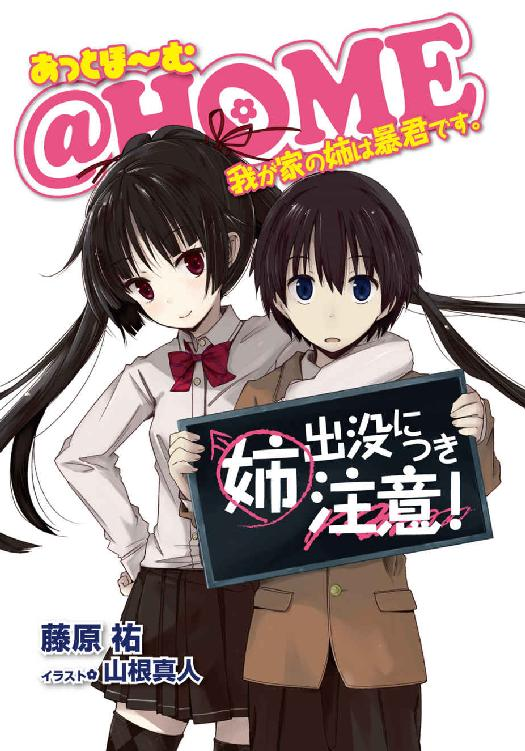
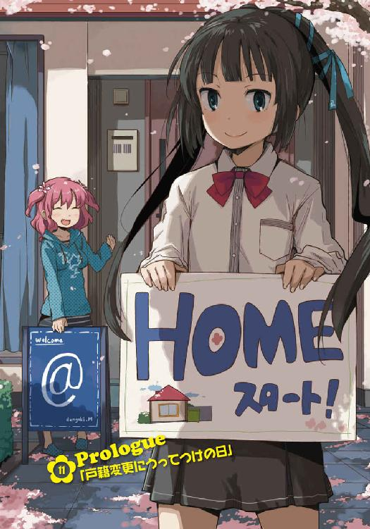
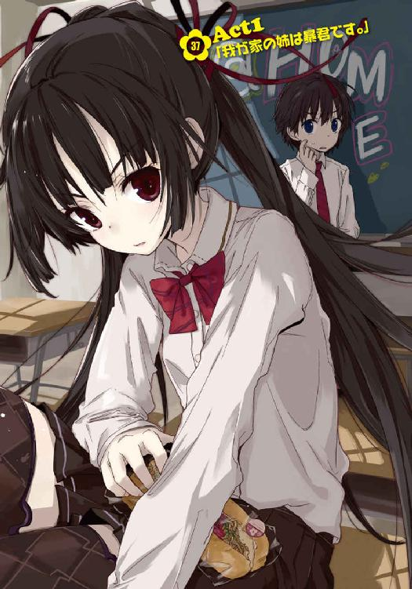
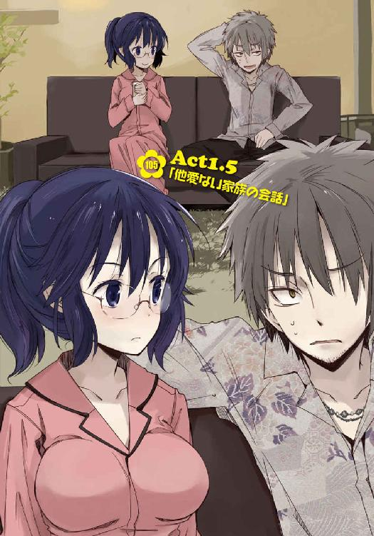

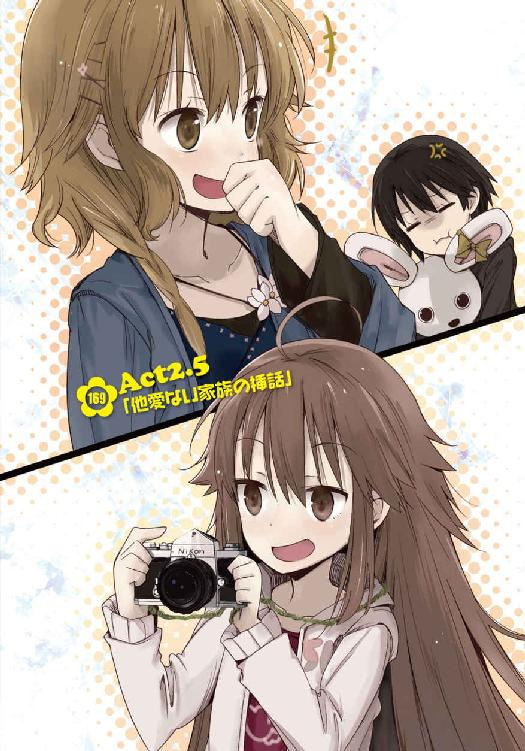
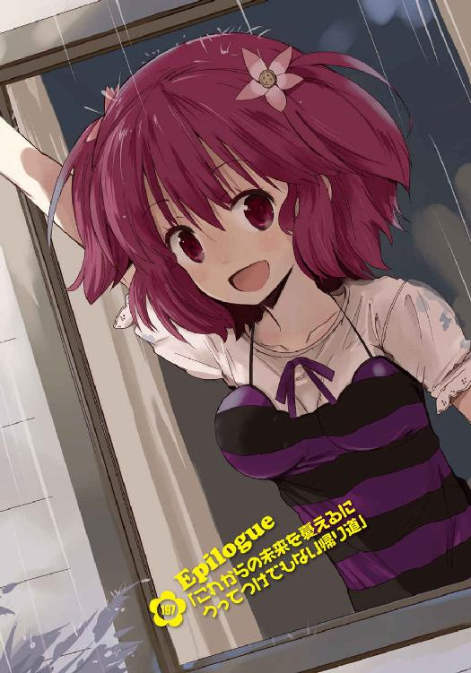
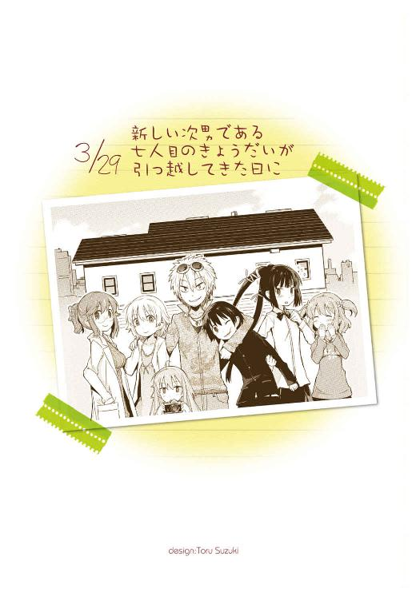
本書（電子版）に掲載されているコンテンツ（ソフトウェア／プログラム／データ／情報を含む）の著作権およびその他の権利は、すべて株式会社ＫＡＤＯＫＡＷＡおよび正当な権利を有する第三者に帰属しています。
法律の定めがある場合または権利者の明示的な承諾がある場合を除き、これらのコンテンツを複製・転載、改変・編集、翻案・翻訳、放送・出版、公衆送信（送信可能化を含む）・再配信、販売・頒布、貸与等に使用することはできません。
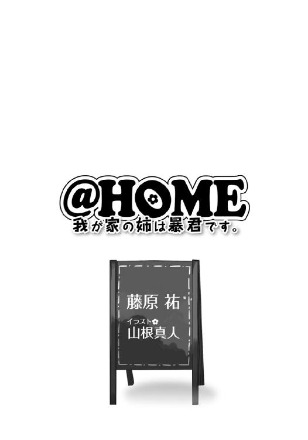
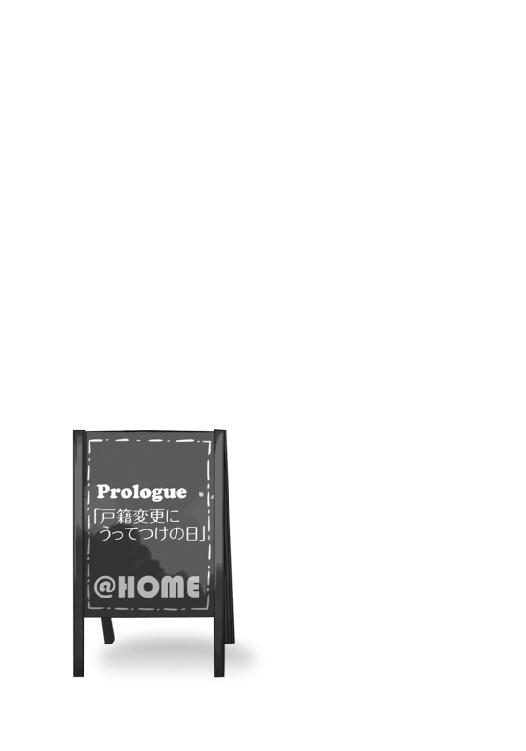
通夜と葬式のことはあまり覚えていない。
両親が一度に、前触れもなく、唐突に死んでしまったことで放心状態だったせいなのか、それとも僕が高校生の子供で、通夜だの葬式だのといった社会的な儀式に対して無知に無力を重ねた状態だったせいなのか。
僕は叔父、つまり亡き母の弟に一切の雑事を任せ、ただ学生服で突っ立ったまま弔問客たちを迎えることしかできなかった。
もちろん彼ら彼女らの顔も、かけてきた言葉も、僕の記憶には残らなかったし心にも届かなかった。ああ、通っていた高校の先生とクラスメイトたちが来てくれた時は別だ。少しだけ安心したから──焼香の匂いや誦経の声やふたつ並んだ遺影や飾られた花や棺の中の物言わぬ父さんと母さんが、現実でないような気がして。
とにかく、僕はまともでなかった。
だから葬儀の後のことも同様に、あまりよく覚えていない。
それは式場から自宅へ戻った後に始まった、親戚連中の喧喧諤諤のことだ。
五年前に購入したばかりの一軒家は、当然のようにまだまだローンが残っていた。もちろんそれ自体は生命保険を使って完済できる。
問題は、両親の死因だった。
運転中に飛び出してきた犬を避けるためハンドル操作を誤り、民家の壁に突っ込んで裏口を半壊させる、という、言わば自爆事故。こういう場合、普通は自動車保険が修繕費用を負担してくれるらしい──普通は。
なんとびっくり、両親が突っ込んだ民家というのはつまり、我が家だったのである。
まったく間抜けな話だ。
我がことでなければ笑っている。もちろん当事者である僕はまったく笑えなかった。
なにせローン自体はどうにかなっても、破壊された壁やめちゃくちゃになった裏口や台所の修繕費用が自動車保険から出ない。家を修理するためには両親がちまちま積み立てていた貯金を使う必要があって、それは本来、僕が大学へ通うためのものだった。
とにかくそういった経緯があって──親戚たちは、僕と我が家をどうするかについて口角泡を飛ばし合い始めた、という訳だ。
台所が破壊されたせいでお茶を出すこともできない、我が家の居間で。
家を欲しがっている者がいた。
築五年の一軒家だ、無理もない。けれど修繕費用はそれなりに高額で、できればそれを肩代わりせずに済ませたがっているのが見え見えだった。
貯金を欲しがっている者もいた。
家は処分すればいい、と。けれど相続人はひとり息子である僕であって、遺産を手に入れたければ代わりに僕の扶養義務を負う羽目になる。
親戚たちは全員、どうにかして遺産のおこぼれにあずかりたがっていた。できれば、遺された未成年である僕を他の誰かに押しつけた上で。
よくある話だ。ただし、ドラマなんかで。
うちにはもうふたり子供がいるから面倒は見きれないだの、引き取っても構わないけど貯金は養育費として頂きたいだの、だったらこの家はどうするんだだの、ちょっと待て俺にも少しは相続する権利があるんじゃないかだの。遠慮もなければ呵責もない下世話な会話は当の僕を目の前にしていながら、堂々と行われていた。
もっともその時の僕は、親戚たちが醜く喚く様をただぼんやりと眺めていることしかできなかった。怒ることも泣くこともせず。
言葉は耳に届いていたのに、脳が理解を拒絶していたのだろう。さっき『あまりよく覚えていない』などと言ったけど、正確を期すならばこうだ。
記憶したくもなかった、と。
だから。
覚えているのは、ここからだ。
唐突に、居間のドアが開いた。
一斉にみんなが静まりかえった。
それまで口さがなく金の話をしていた母の従姉とか、なにが目的なのか今ひとつはっきりしないまま「俺が喪主の代わりもやったんだから」とかぼそぼそ言っていた叔父とか、声高に「この子のためにできるだけ余裕のある家が引き取るべきよ」などと綺麗事にもなっていないことを主張していた伯母とか、とにかくその場にいた十人近くの親戚一同が、瞬時に会話を止めた──ドアの向こうから現れた人物に、ぎょっとして。
ざんばらに刈った金髪の髪。やせぎすの、そのくせ手足が長くどこか迫力のある体軀。サイケデリックな極彩色の派手なシャツ、大きく開いた胸元にはシルバーの刺々しいネックレス。
年齢は二十代半ばほどだろうか。赤いサングラスをかけたまま居間を睥睨したその男は、無精髭を生やした顎を歪め、皮肉げに笑った。
「おやおやこれは。出で立ちはモノクロームで厳かだっていうのに随分とかまびすしいね。まるで葬式っていうよりも、お祭りだ」
不謹慎なことを言いながらサングラスを外すと、外見の印象にまったく違わない軽薄そうな瞳が、そこにはあった。
全員が呆気に取られる。
十数秒の沈黙の後、ようやく口を開いたのは喪主代行を務めた叔父だった。
「......、なんだ、きみは」
「なんだきみは、か。いい質問だねえ。漠然とし過ぎていて答えに窮するな。じゃあ逆に尋くけど、なんに見えます？ 俺って」
僕がその時思ったこと──というより、いきなり登場した彼からなにを連想したかはたぶん親戚連中とほぼ同じだろう。
借金取り。
葬式の後にいきなり家へ侵入してきたチンピラみたいな金髪男といえば他になにが思い浮かぶ？ 別の可能性があったら教えて欲しいくらいのステレオタイプじゃないか。
もしかしたら両親は自分が知らない間に負債でも抱えていたのか、なんて疑問が頭に浮かんだ。父も母も僕の知る限りは誠実で真面目な人だったけれど、その分お人好しなところがなかったとは言えない。騙されたとか保証人になってしまっていたとか、そんなことがひょっとしたらあるかもしれなかった。......だいたい死因からして間抜けなのだし。
問い返されて呆然とする叔父を、男は完全に無視した。
彼から視線を外し、移ろわせ──それを、僕で止める。
居間を真っ直ぐに横切り、歩いてきて、目の前にしゃがみ込んで、
「おやおや。随分と変わった表情をしてるじゃないか、きみは」
そんなことを言った。
「安心した、って顔だね。具体的な単語で形容すると」
「あん......しん？」
「大方のところ、きみは俺が借金取りの類だと思ったんじゃないかな？ 周囲の彼らと同じくね。どうしてわかったかって？ そりゃわかるさ。だって俺が初対面の人に持たれる第一印象は『チンピラ』とか『ヤクザの鉄砲玉』とかそんなんばっかりで、でもって葬式の後に場もわきまえずやってくるチンピラと言えば借金取りと相場が決まってる。まったく嘆かわしいな。誤解にもほどがある。世界中を見回しても俺ほど誠実な人間はそういないっていうのにさ」
これほど誠実とは縁遠い容姿もそうそうない顔で、男は笑った。
「しかしきみは、そんな俺を見て『安心』してる。まったく興味津々だね」
ぼんやりと思った。
この人の言う通り、僕は──安心したのだろうか、と。
だったら、何故？
仮にこの男が本当に借金取りであれば、両親には負債があったということで、その支払い義務は自然、ひとり息子たる僕が負うことになる。額面にもよるが、保険金も家もすべて手放す羽目になるだろう。下手をすれば借金までできるかもしれない。
なのに、安心した。
僕は、安心していた。
それはつまり──、
「べらべら喋り過ぎね、高遠」
僕が答えに行き当たりそうになったのと同時、居間の扉の前、男の背後から声があった。
「あんたはいつもそう。誠実、ですって？ 言うに事欠いてなにが誠実よ。あんたみたいな外見の男を誠実って言うのなら、チャールズ・マンソンは人類愛の化身だわ」
姿を見せたのは、とびきりの美少女だった。
制服姿で、たぶん僕と同じく高校生だろう。でも、この辺の学校のものではない。
すらりとした身体つきに整いすぎるほど整った目鼻立ち。あまりに端正で日本人離れしているほどだ。艶やかな黒髪は長く、後頭部で括ってポニーテールみたいにしていたが、それでも尻尾の先は腰辺りにまで達している。
目つきは異様に鋭い。美人特有の冷たさもあったが、どこぞの高慢なお姫様のようでもあった。生まれつき人を見下すことしか知りませんよそれがどうかしましたか、みたいな。
彼女の射殺すような視線に肩を竦め、男は、
「そりゃ素敵だ、リリィ。滑り台の下には誰がいるんだろうね？」
「はぁ？ あんたの言ってることは時々訳がわからないわ」
「『ヘルター・スケルター』。我が妹ながら嘆かわしいね。ビートルズは人類の財産だぞ」
「私はジョージ派なのよ」
「ポールの曲ってことは知ってるんじゃないか。やれやれだ」
もはや葬式の後に聞く会話ではなかった。
どうもこの男──高遠、と呼ばれていた──と少女──こちらはリリィ、親の顔が見たくなるような名前だ──は、兄妹らしい。
リリィの方が兄であるはずの高遠を呼び捨てにしていたのが少しだけ気になったが、単に習慣だろう。男は確かに少女に向けて『我が妹』と言った。間違いなさそうだ。
ただ、それは僕の困惑を解決してくれる情報ではまったくなかった。
「おい、きみたちは誰だ？ 他人の家へ勝手に上がり込んでどういうつもりだ」
立ち上がった親戚のひとりが、高遠の背中を睨み付ける。
その人──母の従姉の旦那さんに応えたのは、少女、つまりリリィの方だった。
「は、ふざけたことを言ってくれるじゃないの。いつからここはあんたの家になったの？」
冷酷とすら言える蔑みの視線を年上のいい大人へ向けた後、返す刀で僕を一瞥し、
「あんた、この子の父親？ 違うでしょう？ だってこの子の父親はもう灰になってしまったものね。だったらあんたは誰？ 誰であろうともこの子の家族じゃない以上、あんたにとってもここは『他人の家』でしょうに」
「ちょっと、なんてことを......さっきお葬式が済んだばかりなのよ！」
灰になった、という表現に血相を変えたおばさんに対しても、
「『なんてこと』？ これまたお笑い種ね。ま、ちっとも笑えないけど」
一歩も引かず、むしろ視線に蔑みと怒りを一層込めた。
彼女は吐き捨てる。
「ふざけてるんじゃないわよ、この愚物ども。あんたたちが今の今までここでしていた反吐の出るような会話に比べたら......私の言葉なんてなんてこともないでしょう？」
「......っ！」
全員が、息を吞んだ。
彼女は声を荒げた訳ではない。
拳を振り上げて威嚇した訳でもない。
ただ、それは──とても苛烈だった。
口調、声音、態度、すべてがまるで、相手の喉元に刃を突きつけているかのように。
居間にいた十人近くの大人たちが、女子高校生たったひとりに威圧されたのだった。
「その辺にしときなよ、リリィ」
兄の制止に彼女は軽く肩を竦める。
次いで高遠が、僕に向き直った。
「さて。ご覧の通り、俺は借金取りじゃない」
どうやら本題が始まるようで、唇から笑みが消える。
そして──。
告げられた言葉に、今度こそ僕は、啞然とする羽目になったのだった。
「俺は、きみの、言わば親戚だよ」
「......え」
「倉須、という名字を知っているかい？」
聞き覚えはなかった。
「きみの亡くなった父親と......つまりはこの園村家と血縁関係にある家だ」
「父さんの？」
実のところ、父に親類がいるなんて想像もしていなかった。
父方の祖父母も僕の生まれる前に亡くなっていて、ほぼ天涯孤独だったはずだ。実際、今日の葬儀に来ていた親戚連中もすべて母方の筋だ。
お盆や正月は母親の実家に揃って里帰りしていたし、祖父母にしたって母方の記憶しかない。彼らもそれぞれ十年前と五年前に死んでしまっていた。ああ──お爺ちゃんとお婆ちゃんがもし生きていたら、この口さがない親戚たちを黙らせてくれたのだろうか？
思考が逸れかかったところで、男が再び怪しげに笑った。
「きみの父親には妹がいた。いろいろあったらしく交流が途絶えていたようだね。まあ、俺もこの辺の事情についてはよく知らないんだけど......とにかく、彼女はある男性と結婚して名字を『倉須』と改めていた。俺は、その家の長男だよ」
「僕の......」
従兄、なのか。
「戸籍上は、ね」
心を読んだように彼は首を振る。
「ただ、俺ときみの血は繫がっていない。俺は養子なんだ。そこにいるリリィもだ。というより......倉須家にいる子供たちはみんなそう。だから我が家は言わば、ストロベリーフィールズ、って訳さ。知ってるかい？ ストロベリーフィールズ」
「いえ」
「孤児院の名前だよ。ジョン・レノンが幼少期に遊んだ」
──孤児院？
「ああ、まさに孤児院だ。なにせ両親は、もういない。俺たちの父さんと母さんにしてきみの叔父と叔母であるところの倉須夫妻は、十年前に亡くなっている。つまり核家族ならぬ核なし家族って訳だ。笑っちゃうねまったく」
「......はあ」
「私はストロベリーフィールズよりもストロベリーガーデンの方が好きね、残念ながら」
居間のドア近く、壁に背を預けて腕を組んでいたリリィがどうでもよさそうに口を挟む。ただし、言葉自体は僕にとって意味不明だった。
「高遠、あんたのくだらない説明はまったく説明になっちゃいないわ。孤児院ですって？ そんな生っちょろいもんだったかしら、うちって。......どちらかといえば戦場ね。捨てられた孤児どもが行き着いた先、血まみれで日々戦ってるわよ」
「おい、邪魔するなよ。今は俺のターンだぞ？ やれやれ、我が妹ながら嘆かわしいね、さっきも言ったけど」
高遠が困ったように肩を竦め、
「あんたのターンだとか知ったことじゃないわ。私の名前はリリィなのよ。だったらこめかみ指でこじ開けるの、当然じゃない。誰のターンだろうが、私がそうしたくなったらね」
「まったく、パスタじゃなくて焼きそばパンなんかが好きなくせに。よく言うね」
「うるさいわね。あんた私に喧嘩売ってる？」
「あの、ええと......」
こっちを置き去りに話が盛大に逸れつつある気がしたので、思わず声をあげる僕。
「つまり、どういうことなんですか」
冗談じゃない。訳がわからない。借金取りの方がまだマシだった。
このふたりの異様なキャラクターや目の前で繰り広げられる意味不明な言葉のやり取りを脇に置くとしても、その前に告げられた事実だけで、僕は混乱に陥ってしまっていたのだ。
でも、仕方ないだろう？
両親が事故死して、戸籍上の従兄だという男がいきなり現れ、自分の来歴を説明し始めたのだ。それも、頓狂な。
父の妹に養子がいて、でも彼女は夫とともにもう十年も前に死んでしまっていて、おまけにどうやら口ぶりからするに養子はこの高遠という男とリリィという少女だけではないらしい。何人いるんだろう。三人？ 四人？ というか僕のおばさんは慈善活動家だったのか？
と。
「あ......」
脳裏に、もしや、という思考が浮かんだ。
ひょっとして彼らは、ここにいる母方の親戚連中と同様に──、
だが、そんな僕の表情の変化を高遠は見逃さなかった。
リリィと饒舌に交わしていた会話を不意に止め、眉をひそめると僕を睨み付ける。
「おい、侮るなよ。俺たちが欲しいのはきみの両親の遺産なんかじゃない。くだらないね。金なんて一文の価値もない」
矛盾したことを言う。
けれど表情は、真剣そのものだった。
リリィがぽつりと言う。
「私たちはね、あんたに選択を持ってきたのよ」
「選択......？」
「覚えておきなさい。悲劇や喜劇の後にはね、大事な選択が必ずあるのよ。まあ、悲劇や喜劇が訪れなくても選択しなきゃならないことは幾らでもあるのだけれど」
「......園村響くん」
言葉を、男が受け継ぐ。
そして。
彼の発した言葉は、僕にとって──まさしく選択と呼ぶべきことだった。
「きみ、うちの子供にならないかい？」
「え......」
「養子に来ないかってことだよ。園村響改め、倉須響。いい名前じゃないか。......なに、生活費や学費の心配はしなくていい。最低でも大学を出るまでの面倒を見よう。望むなら修士課程も博士課程も。なんなら卒業後はニートになっても構わないよ。まあ、我が家は残念なことにここからちょっと遠いから、今の高校には通えない。転校してもらうことにはなるけどね」
養子。
転校。
「もちろん、きみの両親が遺したお金に手を付けたりしない。それはきみの財産だからね。きみが貯蓄しようが投資しようが寄付しようが食い潰そうが、それはきみときみの両親の問題さ。俺たち家族は口出ししない。この家に関しても同様だよ。処分するか、将来独り立ちする時のために取っておくかは自由だ」
「でも、それじゃあ......」
あんたたちにいったいなんの得があるんだ、と問おうとした。
高遠は僕の言葉を最後まで待たなかった。
「俺たちが欲しいのは、きみの身ひとつだ。きみが家族になるというのが、俺たちにとっての得だよ。シンプルな話だろう？」
親戚連中がざわめき始める。口々になにかを言っていた。
僕はもちろん、高遠やリリィにまで詰め寄りながら、必死にわめいている。
でも僕に、彼らの声は聞こえていなかった。
だって、この高遠という人は──、
僕が欲しい、と言ったのだ。
親戚たちがただの負債として押しつけ合っていた僕を。
両親の遺したお金やこの家ではなく、この僕を。
僕が家族になるのが、お金や家よりも得だと──そう、言ったのだった。
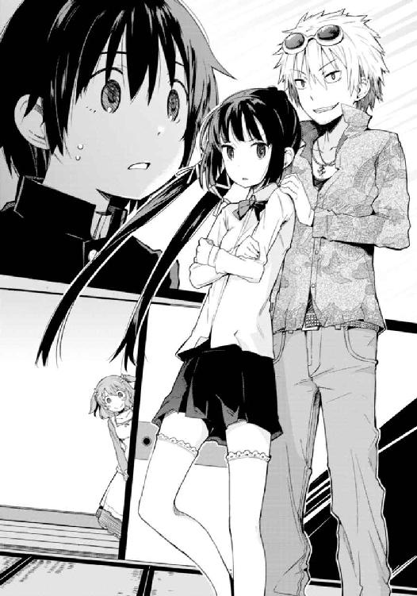
「ぼく、が......」
騒ぎを眺めながら呆然としている僕の横にふと、人の気配があった。
少女だった。もちろん、葬儀に参列していた親戚にこんな娘はいない。
ふわふわとした髪、大きくつぶらなふたつの瞳。まるで人形のように可愛らしい子だった。向こうで親戚たちを睨み付けているリリィとはまったく別のタイプだ。
いつの間に家へ入り込んできたのか、いつの間に僕の隣へ来ていたのか。座り込んだまま、こっちを上目遣いに覗き込んでいる。
目が合うと、にこっと笑った。
「こんにちは、初めまして」
無邪気で元気そうな声に、僕は思わず頷き、
「ええと......きみは」
尋くと、悪戯っぽく舌を出す。
「外で待ってろって言われたけど、来ちゃった。私の名前は芽々子だよ」
漫画のような仕草が妙に似合っている。思わずどきっとしてしまった。
「めめこ......さん？ きみも、倉須の？」
「うん、そう」
三人目の登場だった。
親戚たちすらも、彼女が入ってきたことに気付いていないようだ。というより、高遠とリリィに文句を言うことで忙しいらしい。
選択権を持っているのは僕なのにと、ふと思う。思って、芽々子を見遣る。──親戚連中とは対照的に、僕のところへと来た少女を。
彼女は期待を込めた目で、僕を覗き込んだ。
「えっと、あなたが響さんだよね？ 私の、新しいお兄ちゃん」
「いや......まだそう決まった訳じゃないんだ」
「......そうなの？」
彼女は悲しそうな顔をした。
ただ芽々子からは、僕を説得しようとか引き込もうとか、そういう意志は微塵も感じられない。むしろ打算とはまったく無縁、純粋に──『新しいお兄ちゃん』になるかもしれない僕の顔を見に来た、ただそれだけらしかった。
「あ、その......芽々子さん、だっけ？」
僕はだから、彼女へと問うた。問うてみた。
「きみは、僕が家に来ても迷惑じゃないのかな」
彼女はきょとんとする。
沈黙し、思考するように頰へ指をあて、五秒ほど。
それから眉に小さく皺を寄せ、答えに窮するかのような態度を見せた後に、迷い迷い、ゆっくりと口を開いた。
「あのね、響おに......響さん。私が倉須の家に来たのは、五歳の時だったの」
無言で続きを促すと、
「その時ね、みんな、喜んでくれたんだ。家族が増えて嬉しいって言ってくれた。それってたぶん、本当のことだよ。だって私も、稜くんや耶衣ちゃんが来た時......嬉しかったもん」
うん、と自分の言葉に納得したように頷き、それから屈託なく笑って、芽々子は言った。
「だから、響さんが新しいお兄ちゃんになってくれたら、私、嬉しいな？ 他のきょうだいたちも、みんな嬉しいよ、きっと！」
「そう......か」
迷惑じゃない、のか。
それどころか、嬉しい、と。
迷惑なんて概念、想像できないくらい──。
「おいおい芽々子、いつの間に入ってきたんだ？ お前はいつでも神出鬼没だなぁ。まったく......車で待ってろって言ったじゃないか」
親戚たちを鬱陶しそうにあしらいかき分けながら、高遠が再びこちらに歩み寄ってくる。
「だって、退屈だったんだもん」
「だもん、じゃないよ。お前はいつでも神出鬼没で、おまけに奔放だよ。まあ奔放って言うなら我が家の連中はどいつもこいつも奔放だけど。......ところで、響くん」
ヒステリックに肩を摑んできた叔母をひと睨みして黙らせつつ、高遠はまるで、フェアを装う詐欺師のように人差し指を立てた。
「説明しとこう。俺たち家族......倉須家は現在、両親なしの六人きょうだいだ」
六人。
つまり、あと三人いる、と。
「男がひとり、女が四人、男か女かはっきりしないのがひとり。そしてこいつらは全員、どうしようもなく......そうだな、控えめな表現を使うとすれば『変わり者揃い』なんだよ。率直に言えば、狂っている。頭がおかしい。病んでいる。いかれてる。当然と言えば当然さ。家族構成からしてまともじゃない。なにせ血の繫がりなんてない孤児の寄せ集めなんだからね。そこにいる芽々子だってそうだよ。いくら可愛いからって安心しちゃいけないな。こいつは我が家でも折り紙付きの猛獣さ」
「なに言ってんのさ、私のどこが猛獣なのよ。たぁお兄ちゃんはいっつも酷いこと言う！」
「なにが酷いもんか。お前はさしずめ、人間の肉の味を覚えた子猫だよ。にゃーにゃー鳴きつつ俺たちを貪るのさ」
物騒な比喩で芽々子を指差しながら、こっちに意味ありげな視線を送る高遠。
諧謔じみた笑みを浮かべ、彼は言った。
「さっきリリィが言った通りかもしれないな。戦場さ、我が家は。秩序も統制もないって意味ではそうだ。ひょっとしたらきみは、うちに来ることでまさに精神的兵士となってしまうかもしれないよ？ 我が家の混沌と混乱を相手に戦わされることによってね。......それでもいい、構わないというなら歓迎しよう。どうする？」
それは、饒舌すぎてかえって真摯さを感じさせてしまうような態度だった。
けれどその眼は僕を、僕だけを捉えている。
言葉を発している高遠はもちろん、隣に座った芽々子も。親戚たちに囲まれたまま身動きが取れずにいるリリィですら、僕を見ていた。
有象無象などよりも、僕の選択だけが関心事だとでも言うように。
正直なところ──今考えても──。
僕はこの時、もっと詳しい説明が聞きたかった。
家はどこにあるのか。
どうやって僕の両親の死を知ったのか。
血が繫がっているという叔母ももういないのに、何故僕を誘いにきたのか。
そもそも、あんたたちは一体何者なのか。
考えれば疑問はきりがない。つまり、怪しいことこの上ない。養子に迎えるだなんて言っているけどそれが真実である証拠などどこにもなく、彼はやっぱり借金取りで、僕を外国に売り飛ばすために噓八百を並べて連れ去ろうとしているだけなのかもしれなかった。
でも。けれど。
どうしてだろう？
その時僕は、素で人を嘲っているような倉須高遠の視線と、素で人を軽蔑しているような倉須リリィの瞳と、素で人を信頼しきっているような倉須芽々子の眼に──紛れもなく、安心していた。まさに彼がさっき、指摘したように。
今になってみれば理由ははっきりしている。
僕は、厭だったのだ。
両親が死んだ事実が。
天涯孤独になったことが。
親戚連中の口さがない遺産争いが。
今のこの状態が。
だから、いいと思った。
たとえ引っ越すことになっても、この家を手放すことになっても。最悪、外国に売られたって構うものか。自分で選択したことならば、今のこの状況よりは幾分かマシだろう。
「わかりました」
僕は言った。
「あなたたちの家に行きます」
親戚たちが一斉に血相を変える。今度は僕に詰め寄り、声を荒げて制止する。
でも僕にはやっぱり、彼らのことなんか目に入らなかった。
見えていたのは、
「オーケー。だったらきみは今日から、俺たちの家族だ。でもな......そのよそよそしい口調はやめてくれるかい？ 家族なんだから敬語はなしでいこう」
今までの印象とは一変、驚くほど人なつこい笑みを浮かべる新しい兄と、
「やった！ じゃあ、響だから、ええと......お兄ちゃんは、ひぃお兄ちゃんね！」
まるで子供のように飛び跳ねて僕に抱きついてくる新しい妹、それから、
「さっさと荷物をまとめなさい、響。言っておくけれど最小限で済ませなさいよ。うちはそんなに広くはないのだから」
僕の名前を当然のように呼び捨てにする、新しい姉の顔だった。
※
つまりこれが、始まりという訳だ。
かくして僕、園村響はこの日から、名字を改め倉須響と名乗ることになった。
倉須家、即ち──、
チンピラみたいな外見、軽薄な態度で諧謔を飛ばす長兄の高遠。
おっとりと優しい容姿のくせにやたらと毒のあることばかり口にする、長女の礼兎。
美人のくせに態度は辛辣、口調は傲慢、視線は凶悪と三拍子揃った次女のリリィ。
天性の人なつこさに加えてスキンシップ過剰、家族依存症である三女の芽々子。
男だか女だかよくわからない、つまり三男であり四女でもある稜。
稜のとばっちりを受けて四女になったり五女になったりする、末子の耶衣。
以上六人に僕を加えた七人の──親のないきょうだいたちだ。
僕の年齢はリリィのひとつ下、芽々子のひとつ上。
つまり新しい次男として、彼ら彼女らの家族となった。
けれどその日々はまったく、順風満帆とはほど遠いものだった。高遠やリリィの言葉通り倉須家の連中は全員が一筋縄ではいかない奴らばかりで、僕は面食らったりうんざりしたりおののいたりしながらの新しい生活に、心身ともに疲れ果てる毎日を送ることになる。
とはいえこの時の僕はまだ、そんなことを知る由もない。
倉須家の一員になったことで降りかかる災難も、厄介ごとも、それから──幸せも。
季節は春の初め。
高校二年生になる直前、三月末のことだった。
０
身長、一六九センチ。ひとつ年上とはいえ男の僕よりも背が高く、少しばかり忌々しい。
体重、スリーサイズは不明。けれど体格を見る限り実にスリムで、有り体に言うとモデルもかくやというスタイルである。まあスリムな分出るべきところがあまり出ていないように見受けられるがこれには触れずにおく。
髪と瞳の色、黒。長く伸ばしたポニーテールは爽やかさと華やかさの中間みたいな印象だが、同時にきつい感じがする。原因はその顔立ちと視線だ。
刃物で造った薔薇、とでも形容すれば適当だろうか？ 誰もが振り返るほど美しくありながら、誰もが目を逸らすほど鋭利。触れたら怪我をするのはわかっているけれどどうしても触れずにおれない、そんな危険な恐怖と誘惑を見る者すべてに与えるような容姿を持っている。
性格も同様だった。笑えば包丁睨めば鋏、放つ言葉は毒の針。高遠兄さんが彼女をそう評していたのを聞いたことがある。僕も同感、実に正しい比喩だと思う。
以上──と、いったところだろうか。
つまり五月初旬のあの時点で倉須リリィについて僕が知っていた事項はその程度であり、僕の抱いていた認識はそんなものだった。
だから、仕方ない。そうちょっとだけ思う。
僕が彼女を誤解していたことを。
僕が彼女の真意を──まったく理解できていなかったことを。
１
転校が新学期初日、つまり進級とともに行われたのは幸運だ。
僕は当時、そんなふうに考えていた。
なにせ既にグループができている場所に入っていくのは神経を遣う。壇上で三十人強の男女たち全員から奇異の目で見られながらの自己紹介なんて、考えただけで気が滅入る話だ。
その点、クラス替えと同時の転校なら、新しいよそ者がひとりふたり混じっていても気に留める者は少ない。全十クラスという大所帯の高校であれば尚更。
『一年から同じクラスの友人が運悪くひとりもいませんでしたよ』みたいな顔をしておけばいいだろう。あとは自己紹介の際に愛想笑いで以て「実は進級と同時に転校してきたんです」とでも言えば完璧だ。ひとりだけやけに真新しい制服であることや校内の地理がさっぱりわからないことに不安はあったけれど、ま、親切な輩がひとりふたりはいるさ、なんて。
──今になって振り返ると、甘かったし、愚かしい楽観だったとつくづく思う。
転校から一カ月ほど経った、五月の初め。
午前十時過ぎ。
三限の授業をぼんやりと受けながら、自分の希望的観測が当たったのは『親切な輩がひとりふたりはいるはず』ということだけだったなと、僕は改めて嘆息していた。
ただでさえ新しい環境で緊張しているのだからせめて学校でくらいはリラックスしておきたいなんて吞気していた先月が実に懐かしい。
溜息を微かに吐きながら、あの時のことを思い出した。
転校初日、最初のホームルームの際に行った、自己紹介のことだ。
まだぎこちない雰囲気の教室の中、生徒たちが流れ作業のように順番に、立ち上がって名乗り、趣味だの部活だの一言二言適当な説明を追加しては座っていく。
そしてやってくる、自分の番。
立ち上がり、そのむら、と以前の名字を名乗りかけて、直後に言い直した新しい名字。
「倉須響です」
名乗った瞬間、教室中がざわめいた。
「......くらす？」
隣に座った女子生徒がぽつりと呟いた。何故か恐怖するような視線で。
「おい、今、倉須、って言ったか？ あいつ」
背後の男子生徒が逆に、色めき立った声で隣に問うた。
「倉須って、あの......？」
憧れじみた調子で、斜め向こうの女子生徒。
「まさか......」
「でもさ、倉須なんて名字、この学校には他にいねえよ」
「じゃあ、あの倉須？ でも......」
ざわざわと広がる囁き声。
え、なにこの空気？
心の中で戸惑いながら、とても嫌な予感がしていた。
「あの、この春から転校してきました。よろしくお願いします」
思わず早口でそう答え、座り込むと、
「じゃあ、やっぱり......」
そんな呟きが、転校、という言葉を発した途端に方々で聞こえた。
ホームルームが終わった瞬間のことは忘れられない。教室中の生徒たちの視線が一斉に、遠巻きに、こっちを向いていたのだ。
そして僕は悟った。
ああ、冗談じゃない、と。
自分の儚い願望は、初日早々、脆くも崩れ去ってしまったのだ。
すべて、新しい名字『倉須』のせいで。
チャイムが鳴り、三限が終わる。
起立礼着席の号令が済むや否や、教室が雑然とし始めた。四月の頃はまだぎこちなかった雰囲気も、ゴールデンウィークが明けてからはこなれたものになっている。
「なあ、響」
早速と言わんばかりに男子生徒がひとり、こちらへとやってきた。
転校してきて最初に仲良くなった友人のうちのひとり、木根幹也だった。
見上げるほどに背が高く、名は体を表すというのを地で行っている男である。正直なところ目つきも非常に悪く、初めて話しかけられた時は恐喝されるのかとすら思った。僕はどちらかというと年齢よりも幼く見られてしまうことが多い顔立ちをしているから──自分でそう評するのも悔しいが、事実だから仕方ない──ふたり並ぶと実にちぐはぐだ。
が、人格はその風貌とは裏腹。
「お前、次の英語、課題やってきたか？ やってないなら俺の写すか？」
親切で気も利き、なにより人なつこい。女子生徒からけっこうな人気があるのを最近知ったけど、それもむべなるかな。もっとも本人はあまり気付いていない。
「幹也、あまり響くんを甘やかしちゃダメよ。もう一カ月経ったんだから」
続いて、背後からやってきたのはもうひとり。今度は女子生徒。
「前の学校で授業遅れてた訳でもないんだし」
なかなか厳しいことを言う彼女の名は、篠森小梅。ウェーブのかかったボブカットに、細い眼鏡という出で立ち。どこか整然とした口調と男女ともに分け隔てない態度は、幹也くんとは逆に、自他共になかなか厳しい。この学校の生徒会、書記を務めてもいる。
「そうは言っても、やっぱ授業のやり方とか違うじゃねえか」
「だからって課題写させる理由にはなんないわよ。自分でやった方が慣れも早いでしょ」
「でもよ」
「でもじゃないわよ」
「......いや幹也くん小梅さん。悪いけどさ、僕、課題やってきてるんだよ、一応」
肝心の僕を放置して議論を始めたふたりへ、控えめに口を挟んだ。
「お、そうか？ なんだ、やるじゃん」
「あら、そうなの？ いい心がけだわ」
同時にこっちを向き、にこやかに笑む彼ら。
主張は相反していても息はぴったりである。名前からしてコンビみたいだよな、と心の中でだけつっこんでおく。
ちなみに、名前も性格も対照的なこのふたりは幼馴染みとのことだ。女子に人気がある幹也くんが、それに反して誰かに告白されることもなく、自覚も薄い理由が彼女にある。──本人たちにその気がなくても、付き合っているようにしか見えないのだった。
まあそういった細かな情報はともかく、実際のところこのふたりには感謝している。
新学期初日、転校生の僕に対して最初に話し掛けてきてくれたのは、他でもないこの幹也くんなのだ。彼と、それから相方である小梅さんのお陰で僕は比較的早くこのクラスに溶け込むことができた。ふたりがいなかったら今頃僕はまだ、おっかなびっくり遠巻きに観察されるだけの珍獣として扱われていた可能性だってある。
──ただ。
少なくとも小梅さんに関して言うなら、僕に接触を試みてきたのは親切心以外の理由があったのではないかと思う。それはつまり、あの日クラスメイトたちが僕に向けた奇異の視線と同様、僕の新しい名字に起因してのものだ。
「そういえばさ」
小梅さんが時計を見て、ちょっと期待するような声をあげた。
「今日は？ 来ないのかな」
彼女の態度は、まさしくそれによるもの。
「......ああ」
僕は思わず溜息を吐いた。
三限目と四限目の間の休み時間。
それはここ最近の僕にとって、まさしく憂鬱の種となっている。
「来ると思うよ。......そろそろ」
がらり、と。
僕が言ったのとほぼ同時、教室の上手扉が開かれた。
けたたましい音がした訳ではない。
かといって遠慮がちとはほど遠い。
そんな音に、クラスメイトたち全員の会話が一瞬だけ止まった。妖精が通ったかのように。
ただし入ってきたのは、妖精などという可愛らしいものではない。
──暴君、だ。
「お邪魔するわよ」
誰に言うでもなく、けれど高圧的に。
憧れ、畏怖、その双方が混じった視線で、生徒たちが声の主を見遣る。
すらりとした肢体、伸びた背筋、傲慢とも思えるほどに堂々とした態度。
後頭部でひとつ括りに束ねた長い黒髪を微かに揺らしながら、削った氷のような鋭い双眸で周囲を睥睨し歩く姿は、見る者を慄然と陶酔へ同時に叩き込むほどの美しさ──そんな堅苦しくも仰々しい形容が、この人には実によく似合う。
彼女の顔を知らない者はいない。
三年一組、出席番号女子七番。私立鏡山高校の生徒会長にして、僕と同じ名字を持つ少女。
倉須リリィが、真っ直ぐこちらへ向かって歩いてきた。
「こんにちは、先輩」
小梅さんが嬉しそうに頭を下げて挨拶する。生徒会書記である彼女はリリィと面識があった。昨年からずっと憧れの人であるらしく「響くんが転校してきてから先輩がこの教室に来てくれるようになってよかった」などと常に言っている。
本当、勘弁して欲しい。
僕からしてみれば、転校してからこっち自分に注がれている妙な注目と視線の原因の八割は、学内の有名人であるこの義姉のせいなのだから。
「小梅？ いつも言ってるわよね。頭を下げる暇があるのなら顔を上げて前を見なさい。背後を振り返るのでもいいけれど。とにかく下は駄目よ。下を向いて、蟻を踏み潰してしまっていることに気付いたら歩けなくなってしまうでしょう？」
笑顔とも侮蔑ともつかない顔で、訳のわからないことを言うリリィ。......これは校内において生徒会長ワールドとも称される彼女独特のもの。
でも、僕は知っている。
この意味不明かつ哲学的な言い回しは、程度と方向性の違いこそあれ、自分を除いた倉須家全員に共通するものであることを。
「はい、すみません」
小梅さんは申し訳なさそうにしゅんとする。
すみません、って、リリィの言葉の意味がわかったのだろうか？
僕にはわからない。いや、なんとなくわからないでもないが、わかりたくない。
リリィは小梅さんに一瞥をくれると、こっちへと向き直った。
「朝ぶりね響。元気にしてたかしら？」
笑み。それはどこかこちらを蔑んでいるようでもある。正直なところ、家に来たての頃は緊張で足が竦むほどだった。もっとも、一カ月経って多少は慣れている。
「まあ、さっきまでは結構元気だったよ」
こうして軽い皮肉のひとつを叩けるほどには。
「結構、ね。それは結構だわ。結構以下ではないということだものね」
「なんだよそれ......」
あと、妙に刺々しい義姉の口調に眉をひそめるくらいにも。
「まあ、あんたが結構でもかなりでもそれほどでも、私の用事はいつもと同じよ」
リリィはポケットから百円玉を数枚、無造作に取り出すとこっちに放って寄越す。
四月半ば頃から、週二回か三回のペースで始まったリリィの来訪。
その用件は、お遣い、だった。
昼休みの購買部でパンを買ってこい、という訳である。
本心を言えば、勘弁して欲しい。
購買部は冗談みたいに混雑するし、どのパンを買うかは早い者勝ちだから、生徒たちが我先にと殺到する。ただでさえ貴重な昼休みに戦争みたいな騒ぎで疲れたくはない。
とはいえ、リリィには逆らえない。僕だけではないのだ、これが。生徒はおろか教師たちですらも、彼女を前にしては萎縮してしまうらしい。
当然と言えば当然か。
この傲岸不遜な態度は誰を前にしてもまったく変化がなく、むしろ威圧にはそれ以上の威圧を以て返すほどなのだから。事実あの日、父さんと母さんの死に際して遺産でもめる親戚連中を一喝したのは──他ならないこの人だった。
「また焼きそばパン？」
うんざりしつつも尋く。
浮世離れした容姿に反し、彼女は焼きそばパンなどという俗なものが好物だ。このお遣いが始まって以来、メロンパンだのカツサンドだのカレーパンだのを頼まれたことは一度もない。
だがリリィは唇を僅かに寄せ、咎めるように言った。
「響、私の好みを推測するのは勝手だけれど、私の意志を勝手に推測してものを言うのはやめなさい。そこにあんたの意志があるの？」
「じゃあ、違うの？」
珍しく気分を変えたのかなと思うが、
「焼きそばパンよ」
違わなかった。
......って、いじめだろうかこれは。
「何個？」
「そのくらい自分で考えなさい」
「いやリリィ姉さん、さっきと言ってること違う......」
「なにも違わないわ。焼きそばパンはひとつ百五十円。私は三百円渡したのよ？」
論理的に考えるとふたつだろう。でも、はいそうですかと頷くのは癪なのである。
問い返す。
「飲み物はいらないのか、って尋いてるんだよ、僕は」
「あら」
と、リリィが目を軽く見開き、
「引っかからなかったわね、響。あんたにしては上出来だわ。よく自分で考えたわね」
皮肉げな口調──というよりあからさまな皮肉に、僕は心中でだけ舌打ちした。
正直、軽くいらっと来る。
「でも答えはふたつよ。私は食事の時に水以外を飲むのは生命に対する冒瀆だと思っているの。そしてミネラルウォーターは購買じゃなくて自販機にしか売っていないわ」
「水道水でも飲んどけばいいじゃないか」
「まあ、あなた、この私に水道水を飲めっていうの？ さすがね」
驚いたような顔。
「残念なことに私は生徒会長なのよ。生徒会長がウォータークーラーで満足しているような学校なんて魅力がないでしょう？ 私が自分で焼きそばパンを買いに行ってはいけないのと同じようにね。だから駄目よ、却下」
「......はあ、そうですか」
エレガントに振る舞おうとでもいうのだろうか。でも、昼食に焼きそばパンというのはまったくエレガントじゃないと思う。......まあ、リリィの思考回路がねじ曲がっているというのはこの一カ月で骨身に沁みている。
なにせ学校だけではない、家に帰ってもこの調子なのだ。
「とにかく焼きそばパン、ふたつ」
リリィは憮然と告げた。
「そのためにはあらん限りの努力をしなさい。全身全霊でもって焼きそばパンふたつよ」
わかった？ と、こちらの目を見詰めてくる。
「ああ、努力するよ」
僕の返事に、リリィは笑いもせず頷いた。
まるでそれが当たり前のような。自分が生まれついての王であるかのような仕草で。
「じゃあね」
踵を返し、リリィは去っていく。
彼女が扉から出て行った瞬間、教室中の空気が弛緩した。それは緊張の解けたことによる安堵と、全校生徒の畏怖と憧れである生徒会長の姿を間近で見たことによる陶酔によって。
あちこちで「......相変わらず恐えよ」とか「でも素敵」とか「すげえないろんな意味で」とか、そんな声が聞こえ始める。リリィの影響力はこの学校にあってそれほどまでに絶大なのである。反感を覚える者もそれなりに存在するとのことだが、僕はまだ遭遇したことはない。
仮に反感があっても、たいした問題ではないのだろう。
リリィは生徒会長であり、生徒会長というのは選挙で最多票を得た者が任命される、つまりはそういうこと。お前にとって私はイエスかノーか──相手に対してその二択を無意識に突きつけるのが、倉須リリィという少女なのだ。
「......冗談じゃないよ」
僕は人知れず肩を落とした。できるなら自分も彼女を遠巻きに見て憧れたり怖がったりする多数派でありたかった、などと思いつつ。
ともあれ僕はその日の昼休みもまた、殺気だった人混みでごった返す購買部への電撃作戦を試みる羽目になった。奪取すべきはもちろん、焼きそばパンふたつ。
倉須という名の威光も、当然のことながら購買部の殺伐とした空気には通じなかった。せめてリリィの名前を出した途端にモーゼの十戒みたく人混みが割れるなら彼女の義理の弟となったことにも感謝できただろうに。
でも、やっぱり無理か。
当の僕は、倉須家の奴らとは違う。
人混みを前に「道を空けろ」なんて叫ぶ度胸もない、ただの一般人なのだから──。
２
かようにして貴重な昼休みの十数分を無駄にしつつ、僕の学校での一日はそれでもつつがなく終わる。転校して一カ月経った今、自分の名字のせいで日に何度かは必ず他の生徒たちに注目されてしまうという日常を『つつがなく』などと奥ゆかしく形容できるようになった自分に我ながら頭が下がる思いである。
まあ、別に深刻ないじめを受けているとか友達がひとりもできないとか、そういう類のものではないからよしとしたい。なんだかんだで、僕に対するクラスメイトたちの視線は同情的だ。週に三度は「パンを買ってこい」だの「生徒会の仕事を手伝え」だのとリリィによって下僕のように扱われているのだから当然と言える。
ただ、僕の所属する二年三組から一歩出ればまた違った結果が待っている。もっと別の視線を送られることは多い。同情というポジティブなものではない、もっとネガティブな感情。
つまり──奇異とか、嫉妬とか。
放課後。
部活動に入っていない僕は基本、ホームルームが終わると時を待たず友人たちに別れを告げて教室を出る。やれやれ今日も疲れたななどと思いながら靴を履き、外に出、青葉となった桜並木の下にさしかかった時、僕の視界に見知った人影があった。
ふたり組。うちひとりがこちらを認めた。
「あ！」
嬉しそうな声をあげると、心底からの笑顔を浮かべ手を振り、
「ひぃお兄ちゃんっ！」
こっちへと走ってきた。
ふわふわとした女の子らしい髪の毛。小柄で、スタイルはいいにも拘わらずどこか華奢な印象を受ける。大きな瞳と仄かな桃色の唇が作る笑顔は華やぐようで、なんというかつまり、一般に、可愛い、と形容される部類の少女である──それも、たぶん百人中百人が。
「やあ」
片手を挙げて挨拶すると、彼女は凄まじい勢いでこっちに突進してきて、
「......って、おい、待っ」
「うりゃあっ！」
速度を緩めず、両手を広げて僕に跳躍。
「うわ！」
なんとか受け止めるが衝撃で倒れそうになった。
慌てて慣性を逃がすように、周る。
「あはっ！ お姫様ごっこーっ！」
飛びついたままはしゃぐ女の子を抱いて、ぐるりと回転。まるで昔のドラマみたいなベタを演じる羽目になった僕は、下校途中の生徒たちの視線を一身に浴びながらも彼女を地面に降ろす。学校の並木道なのに、ここ......。
「あー、面白かったっ」
「僕は面白くない！ 転んだらどうするんだ!?」
「ねえ、ひぃお兄ちゃん、今帰りっ？」
「人の話聞けよ！ てか、帰りってそりゃそうだろ昇降口から出てきたんだから」
思わず声を荒げるが、
「やった！ じゃあ一緒に帰ろっ？ ね？」
凄まじい笑顔で腕に抱きついてくる彼女に、毒気を抜かれた気分になってしまう。
「......、ああ、うん」
次いで、彼女と一緒にいたもうひとりの女性がこちらへゆっくり歩いてきた。
「丁度よかったわ、響ちゃん」
こちらは大人。つまりはこの学校の職員のひとりだった。アップにまとめた髪の毛と細い鼻梁に乗っかった丸眼鏡は理知的なのだけど、如何せん首から下──グラビアアイドルもかくやの色っぽい体型が、そのインテリ的な印象を完全に打ち消している。特に高校生男子が自然と視線をやってしまう部分などは、同世代の女子ごときではとても獲得できそうにない実りっぷりだ。砂時計でも見ているかのようなプロポーションの前には、アップの髪だの眼鏡だのスーツだの、それら清楚なすべてが逆効果なんじゃないかとすら思えてくる。
「これからスーパーに寄って帰るの。晩ご飯の材料。荷物持ち手伝ってくれるかな？」
「いや、それはいいんですけど......」
「こら」
彼女は咎めるように僕の額を指でつつき、
「私は教師じゃなくて家族として話してるのよ？ 敬語はやめなさい」
「いや、ここまだ学校ですけど......てか、まだ四時前じゃないか。仕事は？」
「ん？ 面倒だからさっさと閉めてきたわ」
「......熱心な保健教師もいたもんですね」
「いいのよ、もう放課後だし」
部活動で怪我をした人はどうするんだと思いつつ、はいはい、と返事をした。
というか下校途中の生徒連中にめちゃくちゃ見られているんだけど。
当然だ。腕に美少女をぶら下げたまま美女に額をつつかれている冴えない少年がいたら、僕だってガン見する。......それはまさにさっき言及した通り、嫉妬と奇異の視線でもって。
とはいえそんな状況でも、僕は嬉しくもなんともない。むしろ肩を竦めるか苦笑するか唇を引きつらせるかしかできないのだった。
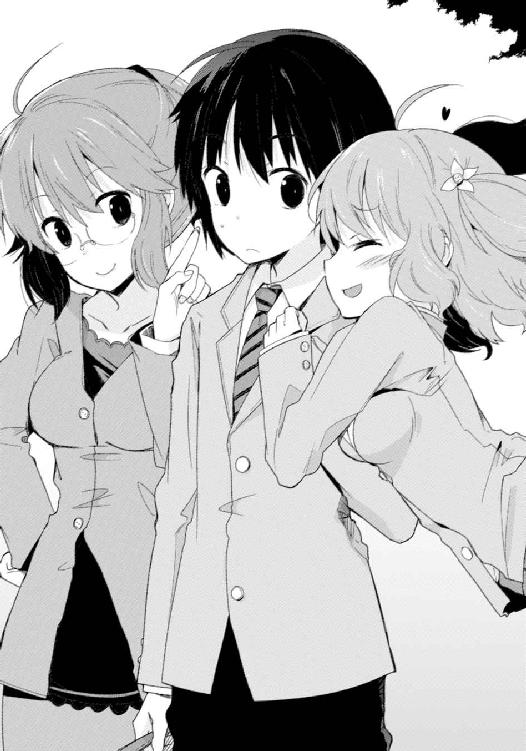
僕の腕に抱きついているのは、この学校の一年生。入学と同時に「あの美少女は誰だ」と大騒ぎになり、名前が知れ渡るやあっという間に有名人となった......らしい。
名前を、倉須芽々子。『鏡山高校の女帝』などと呼ばれる生徒会長、つまり姉と対比するように『鏡山高校の姫君』と呼ばれている。
もう片方はこの学校に勤務する保健教師。が、その悩ましくもけしからん容姿から、むしろ保健室に駆け込んだはいいが更に発熱及び失血する男子生徒が続出しているのではないかという噂が絶えない。ただし穏やかで落ち着いた物腰に比して、勤務態度は「めんどくさいわ」だの「あなた仮病でしょ」だの「病院行けば？」だのと実に最悪。そのせいで一周回ってマニアな人気まで獲得しているらしい。
倉須礼兎。こちらの渾名は『鏡山高校の女神』である。......ただし、気まぐれで助けてくれたりくれなかったりする、ギリシア神話的な意味での『女神』。
──そうなのだ。
幾ら倉須リリィが傲岸不遜で鳴らした有名人だったとしても、その義弟であるというだけでここまで注目を浴びたりはしない。
長女、礼兎。
次女、リリィ。
そしてこの春から加わった三女、芽々子。
姉妹にしては似ても似つかない容姿にも拘わらず、方向性の差こそあれ『どうにも目立ちまくってしまう』ことだけは共通している。
そのせいか、既に去年の段階で、倉須家の事情というのはある程度学内に知れ渡っていたそうだ。曰く、血の繫がっていない六人のきょうだいで構成される変な家、と。
おまけに今年の春になって異様な美少女である三人目が入学してきたのみならず、新しく加わった四人目まで転校してきたのである。僕がいくら平凡かつ一般的な容姿と性格を持った人間であっても、目立たずに済むはずはない。
「じゃあ行くわよ、響ちゃん、芽々子ちゃん」
周囲の注目を知ってか知らずか、礼兎が僕らを促した。彼女が歩き始めると、僕らをちらちら見ていた輩が一斉に顔を逸らす。
気持ちはわかる。礼兎は保健教師なので、目が合ったら礼儀的に素通りではいられない。挨拶を交わす必要がある。そしてその状況は、盗み見していた生徒側にとって非常に気まずい。
「はーい」
一方で芽々子は視線にまったく気付いていない様子で、これは彼女の性格のせいだ。
無邪気で天真爛漫、かつ天然。非常識なレベルで人なつこく、しかもスキンシップ過多。さっきの行動も、彼女の中では家族に対するごく普通の挨拶でしかない。
実際のところ、倉須家に来て一カ月ほどしか経っていない、しかも異性である僕に対してここまで気を許せるというのはちょっとおかしいんじゃないかと思うが──こちらもさすがに変な気を起こす訳にもいかない。最近はどうにか慣れてきて、抱きつかれたり甘えられたりしても顔が熱くなる程度で済んでいる。
並木道を歩きながら、芽々子と礼兎が僕を挟んで夕飯のメニューについて会議を始めた。
「れぇお姉ちゃん、今日のおかずなに？」
「なにがいいかしらね。あまり手のかからないのがいいけど」
「じゃあ、ハンバーグがいいなっ」
「あらあら芽々子ちゃん、私の主張は無視？」
「だって、れぇお姉ちゃんってば『手のかからないもの』って言うと、平気でおそうめんとか作っちゃうじゃん。五月なのに」
「五月でもいいじゃない。おそうめん毎日食べてればそのうち八月が来るわ」
「はいはい、ハンバーグ食べてても来ますぅ」
「あら芽々子ちゃん、知らなかったの？ ハンバーグを食べても八月は来ないのよ。ハンバーグが運んでくるのは四月だけ」
「またそういうこと言う！ ね、ひぃお兄ちゃん、れぇお姉ちゃんっていつもこうなんだよ。適当なことばっか言って。子供の頃、これに騙されて三日間うどんばっかり食べさせられたことあるのよ、私。九月だったかな？ うどんを食べないと十月が来ない、とかってさ」
いきなり話を振られたので、問い返す。
「芽々子ちゃんは幾つだったんだ？」
「ええと、確か......」
「六つだったわ」
礼兎が代わりに答えた。
「六つにもなって騙される方が悪いのよ」
にこにこと笑いながら酷いことを言う。
「だってだって！ あの時、りぃお姉ちゃんが『確かにうどんは九月って感じね』なんて言うから......。たぁお兄ちゃんもれぇお姉ちゃんのうどんに文句ひとつ言わないしっ！」
『りぃお姉ちゃん』とはリリィのことで『たぁお兄ちゃん』とは倉須家長男、高遠のことだ。幼児語かよと思わないでもないが、芽々子の口から発せられると妙に似合ってはいる。
というか、どうも十年近く前からこの家族はこんな調子だったらしい。揃いも揃って、訳のわからない言葉遊びで人を煙に巻くのを趣味にしている。
「私さ、結局、かぁ......」
と。
芽々子がなにかを言いかけて、不意に口を噤んだ。同時、僕の腕に絡めた両腕が微かにこわばる。......なんだろう？
だけど僕が小さな疑問を覚えたのも一瞬だった。すぐに芽々子は笑い、
「ひぃお兄ちゃんは、私を騙したりなんかしないもん。ねっ？」
より一層、握った両手に力を込めた。
「あらあら」
呆れたように、礼兎が薄い溜息を吐いた。
「芽々子ちゃんは響ちゃんにべったりね。新しいお兄ちゃんがそんなに嬉しい？」
「嬉しいよ、そりゃあ。れぇお姉ちゃんは嬉しくないの？」
「私だって嬉しいけど、響ちゃんは私にとって弟だからね。芽々子ちゃんとは嬉しがり方が違うわ。まあ、作る食事がひとり分増えたのは面倒極まりないけど」
「......悪かったね、そりゃ」
学校に勤務しているのと同様、家でも礼兎の口癖は「面倒」だ。けれど倉須家における家事全般──一般の家庭で母親がやるような仕事はほぼ全てが彼女ひとりに任されており、不思議なことに面倒だ面倒だと言いつつもサボっているところを見たことがない。そうめんのように手抜きは試みても、誰かがハンバーグを主張すればきっちりハンバーグを作るのだった。
「もう、れぇお姉ちゃん。ひぃお兄ちゃんにそういうこと言っちゃ厭だよ」
芽々子は頰を膨らませ、僕を庇う。
「冗談よ。あんまり芽々子ちゃんが響ちゃんにべったりだから、やきもち焼いただけよ。ね、響ちゃん？」
礼兎がこっちに向かってウインクしてきたので、僕はここぞとばかりに笑った。
「まあ、僕もこの季節にそうめんはごめんだし......ところで芽々子ちゃん。礼兎姉さんが嫉妬してるみたいだから、そろそろ宿り木を変えてみたらどうかな？」
「りょーかいー！」
頷いた芽々子が僕から離れ、今度は礼兎の腕にしがみつく。
「いい？ 今日はハンバーグだからね！」
「はいはい、わかりました」
健全な仲のいい姉妹のようで、その光景に僕は安堵の溜息を吐いた。
正直、礼兎の助け船は嬉しかった。
道行く人たちの「なにこの浮かれたカップルは殴られたいの？」みたいな呆れた視線と、なにより腕に密着していた非常に気まずい感触に、僕はほとほと困り果てていたのだ。
礼兎だけではなく、芽々子もかなり発育がいい。血の繫がりはないのだから、そこは姉に似なくてもよかろうに。
３
倉須家の夕食は午後八時きっかりに始まる。
少なくとも僕が家族の一員になってからこっち、このルールが破られたことはない。もちろん、なんらかの理由で全員が八時に揃わないことはある。が、誰がそうなろうと、食事の開始時間を遅らせようというつもりは家族の誰にもないようだ。
奇妙と言えば奇妙な風習だが──家長というものが存在せずきょうだいの間にも上下関係がないこの家では、それが合理的なのかもしれない。
とはいえ、今日は全員が揃っている。
多少ひなびた住宅街にある築二十年の一軒家。決して新しくはないがボロボロな訳でもないその家に住む七人が、キッチンと食卓を兼ねた部屋に集まっていた。
四角いテーブル、上座の一辺に腰掛けているのは長男の高遠だ。
金髪にピアスに派手なシャツとチンピラみたいな装いをした彼は、外見とは裏腹に一家の家計を支える大黒柱。だが非常に困ったことに、僕は彼がなんの仕事をしているのかよく知らないのだった。というか僕だけではなく、家族全員が知らないらしい。ひょっとしたら今日のハンバーグも、どこかの子供を旧共産圏に売っ払った対価であるかもしれない。
......まあ、長女の礼兎だって働いている。ハンバーグの材料はそっちの稼ぎで買ったと思えば美味しく食べられるだろう。
彼の対面、炊飯ジャーを置いたキッチン台に最も近い位置は彼女の席だ。
高遠を父親代わりとするならば、礼兎は母親代わりといえる。実際、家族の中で高遠と礼兎のふたりだけが成人を超えていた。
角を挟んで礼兎の右は、次女であるリリィの指定席。現在不機嫌そうに黙々と食事中である彼女──まったく世の中のなにが気に入らないのかさっぱりだ──の隣に、先月から次男になった僕は椅子をもらっている。
そして僕らの対面に並ぶのが、残り三人。
まずは僕の真向かい、三女の芽々子。自分が希望した通りの夕食であるハンバーグを、まるで子供のようにがっついている。
彼女の右隣、僕の斜め前で箸を動かしているのは、稜。現在中学二年生、十三歳なのだが──こいつは恐らく、倉須家の中でも最もわかりやすい変わり者だろう。
なにせ、性別がはっきりしない。
ボブカットにヘアピンを幾つかあしらった髪型。ゆったりひらひらとしたワンピースにカーディガンを羽織ったその装いは、女性のそれである。顔立ちも可愛らしく、知らない者が見れば、間違いなく女の子と判断されるはずだ。
ただ、戸籍上の性別は紛う事なき男性である。......肉体的にも、たぶん。裸にひん剝いたことはないので自信はないけど。
というかあまりに見事な女装なので、見ているとちょっとなにかがわからなくなる。
私服通学可能な私立中学に通っていると聞いているが、学校でどっちとして扱われているのかを僕はまだ知らなかった。家の中での扱いは、時と場合に応じて──つまり家族の気分や都合で四女だったり三男だったり。
で、稜の性別がはっきりしないことのとばっちりを最も受けているのが、時々五女で時々四女、つまりは末っ子の耶衣である。
席は稜の隣、角を挟んで礼兎の左隣。ちょこんと座って、現在ハンバーグの付け合わせであるニンジンと格闘している彼女は小学六年生だ。
仰々しいフィルムカメラをいつも首から提げていてよくそれでぱしゃぱしゃ写真を撮っているのだけど、その年齢に似合わない趣味を除けば、まあ比較的普通の娘だと思う。
ともあれ以上が、今の僕の家族という訳だ。
引っ越してからこっち、住んでいた場所や枕が変わったことにはいい加減に慣れた。が、日々繰り返される生活ごと、つまりは食事や入浴なんかの時に発生するその家庭ならではの細かな差異については、やはりまだ若干の違和感がある。
たとえば僕が生まれ育った家では、基本的にテレビを点けっ放しで食事をすることが多かった。こちらは違う。食卓は台所にあって、そこにはテレビが設置されていない──もっとも、そもそもこの家ではテレビを見るという習慣自体がまったく普及していない。芽々子が一年前に商店街の福引きで当てた居間の三十二インチは、僕が前の家からゲーム機を持ち込んで初めて家電製品として機能し始めた。
そのせいか食卓はかつての園村家に比べると静かだ。交わされる言葉が「いただきます」と「ごちそうさま」だけであることも少なくない。しかし──これがまた、なかなか慣れない悪習なのだが──時折なにかが切っ掛けになって、きょうだいたちが食事もそっちのけに訳のわからない会話の応酬を始めてしまうことがある。
今日は、そういう日だった。
食事が終わりかけようとしていた頃。
稜がふと、妹にして末っ子である耶衣の肩を肘で軽くつついた。
「おい。ニンジンでいつまで遊んでるんだ？」
咎めるような口調。喋り方は男っぽくもあるのだが、高めの声と容姿のせいで、男勝りの女の子、みたいな印象を受けてしまう。
「ニンジンは、嫌いなのです」
それに対し、唇を尖らせる耶衣。子供らしい仕草で素直に可愛らしい。
「好き嫌いしちゃ駄目だろ」
「オレンジ色など人間の食べ物ではありません。それに、稜くん。ニンジンってどう書くか知っているですか？ 人が参ると書くですよ。耶衣は参りました。降参です」
年に似合わず小癪なことを言う。
困ったな、という顔をして家族の顔を眺める稜。
それへ応えるように、リリィがを耶衣を一瞥した。
「降参ってことは、あんたはそいつに負けたのね、耶衣。......いいこと？ そいつはただの野菜よ。まあ礼兎の愛情とか調味料とかそういうのも混じってるけど、本質的には野菜でしかないわ。そして、人は野菜には決して勝てないの。そもそも勝負する対象ではないからね」
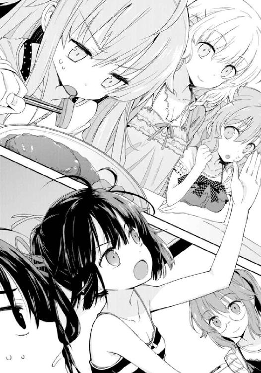
......なんだそりゃ。
リリィは箸を置き耶衣の目を真っ直ぐに見て、微かに笑って告げた。
「あんたは今、勝てないものと対峙しているの。だったらせめて決して負けてはいけないわ」
わかったようなわからないような理屈だった。
「あの、リリィ姉さん」
たまらず僕は隣の姉に疑問を呈する。
「ちょっと尋きたいんだけど、そう言うリリィ姉さんはどうして今に至るまでニンジンにまったく手を付けてないのかな」
「嫌いだからよ。こんなもの人間の食べ物ではないわ」
言い切りやがった。
「いやいや！ あんた今耶衣ちゃんになんて言った!?」
「礼兎も随分と手を抜いたものね。付け合わせがニンジンだなんて」
「しかも礼兎姉さんにまで飛び火した！」
礼兎が穏やかな口調で応えた。
「ふふ、ごめんなさいね、リリィちゃん。ぶっちゃけ余ってたのよニンジン」
「え？ 栄養のバランスとか、そういうんじゃなかったの......？」
呆然と呟く芽々子。
どうやら自分の好きなメニューに手を抜かれたのが軽くショックだったようだ。
「ええ。それどころか多少怪しいわ。賞味期限的に」
対して礼兎は容赦がない。家族全員に。
「おい、僕もう食べちゃったぞ！」
「ちなみにぼくは知ってたよ。作るの手伝ったから」
稜がいきなり告白した。
「大丈夫、傷んでた部分は男どもの皿に入れたから。ぼくはフェミニストなんだ」
しかも自信満々だった。
「わあ、稜くんは優しいなー。そういう気遣い、女の子にもてるよっ」
つい数秒前のショックから鳥頭で立ち直り、芽々子が見当違いな感心を送る。
そもそも、稜は女の子にもてて嬉しいのだろうか。自分自身の外見が完璧に女の子なのに。それもそんじょそこらの女の子じゃ敵わないくらい可愛いのに。
「いや、ちょっと待ってくれ稜くん。その『男ども』って間違いなく自分入ってないよね？ 僕と高遠兄さんだけだよね？」
「おやおや、ニンジン傷んでたのか。全然気付かなかったな」
高遠が肩を竦め、
「あんたはそうでしょうね。礼兎の作ったものなら傷んでるどころか腐乱してても文句言わずに食べるもの。まったくパブロフも真っ青だわ」
リリィが高遠を見遣る。僕のことは無視だった。
と、それまで黙っていた耶衣がニンジンをじっと睨み付けながら、
「......、わかりました、リリィ姉さま。耶衣は頑張ります。こんな奴には負けません」
力強く頷く。
「覚悟するのがワンテンポ遅いよ耶衣ちゃん！」
思わずつっこんだ。
「ていうか騙されてるから。気付こうよ今の会話の流れで！」
「いい心がけだわ。しっかりやりなさい」
「やっちゃだめだろ！」
──もういいや。
疲れてきたので、僕は追及をやめることにする。
こいつらに付き合っていると、いい加減食べ終わらない。
会話に加わるのを諦めて、ハンバーグの最後の切れ端を箸で突き刺し、残ったご飯と一緒に搔き込んだ。溜息を吐く代わりにコップの麦茶を一気に飲み干すと、僕は「ごちそうさまでした」と手を合わせてから立ち上がる。
「あ、先にお風呂入ってね」
礼兎がそんな僕を見て事務的に告げ、
「あ、響にい、後で対戦な」
昨日の大敗の雪辱を忘れていなかった稜が、逃げるなよと言わんばかりに僕を指差した。
※
さて。
そんなこんなで、食事に入浴、稜に付き合ってゲームなどしつつ学校の課題を適当にこなしていると、いつの間にか夜は更ける。
午後九時を過ぎて、僕は自分の部屋──驚いたことにここへ来てすぐ個室が与えられた──で一息つきながら、今日一日の出来事を日記としてパソコン内のテキストファイルに打ち込む、という地味な日課をこなしていた。
文章自体は単純かつ簡潔なものだ。起きた時間とか、昼食はなにを食べたかとか、夕食後になにをしたかとかを、できるだけ短く。その時その時の心情をだらだらと書き連ねたりもしない。本当にただの記録。
ただ、文章を記している時には多少、いろいろと考えてみたりもする。
たとえば自分のこれからのこととか。
血の繫がらない、親なしの七人きょうだい。状況からして充分以上に変哲な家庭である倉須家のメンバーとなって一カ月強が経つ。多少の騒がしさにやや辟易することもあるし彼ら彼女らの風変わりな性格についていけなくなることも多いけれど、僕はこれからもこの家で、どうにかこうにかやっていけそうな気がする。
つまり『倉須響』の日常は、大きな失敗もなくなんとか上手く回りつつあるということだ。
もし、問題があるとするなら──。
こん、と。
不意にノックの音がした。
「はい」
返事をするのとほぼ同時、つまり僕の確認をまったく待たずにドアが開く。
慌ててパソコンから視線を離し、そこに立った人影に顔を向けた。相手は案の定、
「......リリィ姉さん」
僕は僅かに緊張する。
キャミソールにジャージ。リラックスした格好でありながらもどこか異質な空気を漂わせているように見えるのは、彼女特有のオーラみたいなもののせいか。それとも僕が、風呂上がりの異性そのものに慣れていないせいだろうか。
まだ乾ききっていないまま後ろでまとめた髪を気にする風にうなじを弄んだ後、リリィは腕組みをして僕と、それから部屋の中をじろりと一瞥した。
「ええと、なにか用？」
僕の質問に答えず、
「ふうん」
彼女は視線を移ろわせた。
「あんた、うちに来てどれくらいだっけ？」
そんなことも覚えてくれてないのか。
「一カ月とちょっとだよ」
答えると、
「一カ月とちょっと？ それって何日？」
「ええと、三十七日」
手元の日記ファイルを確認して答えた。
「あっそう」
リリィは納得したように頷くと、
「三十七日ね。そう。三十七日といえばちょっとしたものだわ。単純計算でも週末が五回は来てるってことだものね」
再び問うてくる。
「で、あんた今はなにしてるの？ 課題？」
「日記書いてたんだよ」
「へえ、日記。それはまた変わった習慣ね」
「......日記を変わってるっていう感性の方が変わってる気がするんだけど」
全人類共通の、実にポピュラーな習慣だ。
けれど僕の混ぜっ返しに、リリィはぴくりとも笑わない。それを無視し、
「週末が五回。今も学校の課題やってるでなし。時間はたっぷりある。だけどあんたは部屋でくつろいで、日記を書いてる、か」
まるでひとりごちるように呟いた後、再び僕へと視線を戻した。
僕はびくりとする。
リリィは、何故か。
眼を細くし声を低くし、怒ったような声で、言ったのだ。
「あんた、まだそれは開封しないの？」
僕の部屋の隅に積み上がった──幾つかの段ボールを指差しながら。
「......え？」
思わず問い返した僕に、
「なに、聞こえなかったの？ もう一回言いましょうか？」
「あ、いや。違う。聞こえたよ」
そうじゃない。
僕が驚いているのは、もっと別の理由だ。
つまり、理解できなかったのだ。
何故彼女が、僕を咎めているのかが。
こんなくだらないことに対して怒る理由はなんなのだろう。たかが部屋を片付けていないくらいで。しかも段ボールが積み重なっているだけ。ゴミを散らかしている訳でもない。怒られる謂われがどこにある？
あるとすれば、それは怒られる謂われではなく、怒る謂われ、口実。
つまり、僕ではなく彼女が──、
「ま、いいわ」
こっちが沈黙しているのをどう判断したのかはわからない。
けれど一方で、もはや話をする気もないようだった。リリィはこちらを罵倒する訳でもなく、細くした眼で僕をじろりと鋭く睨みつける。そしてそのまま「おやすみ」というそっけない挨拶とともに扉を閉めた。
去っていく足音が微かに聞こえ、僕は大きく溜息を吐いた。
「......やれやれ、だよ。まったく」
ひとりごちる。
本当に冗談ではない。
そう。問題があるとするなら、まさしく彼女、倉須リリィだ。
僕の新しい家族たちは、おしなべて僕に友好的だ。長兄の高遠と長女の礼兎はもちろん、下にいる三人の妹と弟たちも。ここへ来てたった一カ月だが、歓迎してくれている、と感じる。
だから、リリィだけなのだ。
彼女の態度はちょっと冷淡過ぎる気がする。無闇に高圧的で、かつ横暴で──いや、そういった性格は誰にだって同じだと言われれば確かにそうなのだけど、僕に対してはもっと違う感情が、更に加算されている気がするのだ。
学校でのパシり扱いも気になるが、今のような態度はそれ以上にいい例だろう。ああいった訳のわからない言いがかりは、まさにその感情によるものだったのではないか。
希望的に解釈すれば、僕が家に来て日が浅いせいかもしれない。或いは彼女が単に、僕との距離を未だ測りかねているのかもしれない。
でもそんなふうに前向きな結論を出そうとしても、不安が勝ってしまう。
だいたい、もし僕のことを好意的に見てくれているのであれば、ついさっきのような態度を取ったりしないはずだった。
それは恐れと言っていい。
僕は、恐いのだ。
そうだったらどうしよう、と思うのだ。
なにせ、僕にはもう行き場所がない。両親が死に、以前住んでいた家も処分してしまった。僕の持ち物はこの部屋にある荷物たちと、あとは通帳に記帳された幾ばくかの数字だけ。それらをあてにしてたったひとりで暮らしていくことはとてもできそうになく、だから僕はこの家で上手くやっていくしかないのだ。
そんな思いが──どうにか上手く、みんなと友好的にやっていきたいという僕の願いが──彼女には届いていないのではないだろうか。
つまりはっきりと、有り体に言うと。
彼女はひょっとしたら、僕のことが嫌いなのかもしれなかった。
※
僕のそんな不安と予想は、当然というべきか必然というべきか、間を置かずして形になってしまう。それはリリィとの問答があってから三日後、朝のことだった。
４
夕食とは見事なほど対照的に、倉須家の朝にはおよそ統制というものが存在しない。
長女にして家事の一切を取り仕切っている礼兎は、毎朝六時に起床し朝食を作る。が、朝食は基本的に早い者勝ちで、おまけにこのきょうだいたちはどうも朝の食事を詰め込めるだけ胃に詰め込むことが健康の秘訣だとでも勘違いしているらしく、起床時間が遅ければ鍋の中に入った味噌汁やら人数分作られた目玉焼きやらは──人数分という触れ込みが噓であるかのように──影も形もなくなってしまっていることが多い。
つまり必然、自分の食い扶持は自分で確保しなければならなくなる。
とはいえ家族の起床時間は実にまちまち、かつ全員が気まぐれで、台所兼食卓である十畳間が七人のきょうだいで埋まることは滅多にない。大概はふたりか三人が一緒になって食事をする期間が一時間ほど続き、最後のひとりふたりがろくな食事にありつけず悪態をついて終わり、というのが毎日の習慣となっている。
その日、時刻は午前七時ちょうど。目を覚まし、さて今日は朝食が残っているかなと思いながら台所へ入ってきた僕を出迎えたのはふたりの妹たちだった。
芽々子、それから耶衣である。
朝であろうとお構いなしにまるで自分の身体の一部であるかのようにカメラを首から提げた彼女は、もう既にご飯を食し終わっているようだ。目の前に置かれた空っぽの食器を横目にオレンジジュースをこくこく飲んでいた。その隣に座った芽々子はまだ食べ始めたばかりらしい。パンにジャムなどを塗りつけている。
おはよう、と声をかけつつ、視線をテーブルに遣る。
今朝のおかずはベーコンエッグのようだが、それが盛りつけられてラップがかかった皿は芽々子が確保している分を除けばあとひとつきりしか残っていない。誰かが調子に乗ってふたり分以上食べていなければつまり僕が最後のひとりとなるのだが、
「おはよう」
背後から挨拶があった。
振り返るまでもなく誰だかわかる──愛想の皆無な、まるで無意識に冷たさを刺すような声に、僕は心中でだけ肩を落としつつそれでも背後へと向き直る。
「おはよう、リリィ姉さん」
「あら、今日はあんたがラストの滑り込みなのね。私はアウトって訳」
既に制服を着込んだリリィは僕と食卓の上にあった皿を見比べながら不機嫌そうに言った。
確かに、朝食は早い者勝ちというこの家のルールに従えば、最後に残ったひとつはこの僕のものであり、リリィは『ろくな食事にありつけず悪態を吐く』役回りとなる。
だが僕は、それがとても厭だった。
たった今発せられた「今日はあんたが滑り込みなのね」というひと言にすら、棘を感じたのだ。これでリリィを差し置いて食卓のベーコンエッグを食べでもすれば、なにを言われるか。
そうだ。
こんなくだらないことで彼女の機嫌を損ねる必要はどこにもない。仮にリリィが僕に悪感情を持っているとしたら尚更だ。言い方は悪いが──嫌う口実を与えたくはなかった。
だから僕は、言った。
「僕は今日、食欲がないんだ。リリィ姉さんがそれ食べていいよ」
できる限り自然な、笑顔で。
対するリリィは一瞬だけきょとんとした。もちろん彼女なりの、どこか冷たさのある表情の範囲内でではあったけれど、僕にはそう見えた。
そして、次の瞬間。
僕は自分の目論見が成功したことを確信する。
「あらそう」
目が細められ、同時に唇が弧を描き、
「それは殊勝なことね」
彼女は、笑ったのだ。
──なんだ。
安堵の溜息と同時、こんな簡単なことでよかったのか、と微かに呆れる。
考えてみれば、昼間の焼きそばパンもこの方向性だ。要するにリリィの機嫌を構成する要素の殆どは食欲によるものなのだろう。思いの外単純な人だった。一見どうしようもなく気難しそうに見えて、実のところ彼女を手なずけるための最善は食べ物でご機嫌を取っておくことであって、それを続けていればきっと僕は彼女に取り入ることができると、そういう訳で──、
よかった、と思いつつ僕は、彼女に譲った朝食が載っているテーブルを漠然と見る。そしてそこに座った妹ふたりに視線を移し、
「......ん」
そこで、きょとんとした。さっきのリリィと同じように。
耶衣と芽々子は、同じ顔をしていた。
即ち、呆然。
耶衣に関しては基本的にあまり表情の動かない子なので普段との区別が多少つけにくいが、芽々子のそれは顕著だった。
僕の知る限り彼女はいつも天真爛漫で、およそ笑顔以外の表情を滅多に出さない。こういう状況であれば、リリィに対して「よかったねりぃお姉ちゃん！ 今日はダイエットだなんて強がらなくて済むよっ」なんて無邪気に言ったりするのがいつものパターンだ。
なのに、そうしない。
それどころか、
「耶衣ちゃん、芽々子ちゃん......？」
顔面が蒼白だ。唇が微かに震えてさえいる。視線は僕を見ていない。
ふたりとも、だ。
ふたりともの眼が僕の背後にいるリリィに固定されていて、そして姉を見るその表情は紛れもなく──恐怖、だった。
「や、やややや耶衣ちゃんっ!?」
と、突然。
「そろそろ学校行く用意しよっか！」
ネジを巻いた直後の玩具のように芽々子は立ち上がり、硬直した声で耶衣にそう告げると幼い妹を殆ど無理矢理に立たせる。耶衣はともかく、芽々子自身は食事の途中であるのに。
「じゃあごちそうさまっ！」
僕が啞然としているのを後目に、芽々子は耶衣を引き連れて台所を出て行く。引き留める間もなかった。あっという間だった。
「ねえ、響」
そして妹ふたりが去っていったのとほぼ同時、リリィが僕の名前を呼んだ。
「あの、今の......」
ふたりの様子はいったい、と問おうとする僕。
それに先んじて、
「なんで芽々子と耶衣が慌てて出て行ったか、あんたにはわかるかしら？」
「いや、それは......」
リリィは言った。
「私が笑っていたからよ」
振り返った先の彼女は、言葉通りの顔をしている。
眼を細め、唇を弧に、それは笑顔以外の何ものでもない。
「でも、それくらい......」
「そうね。私だって人間だもの。可笑しい時は笑いもするわ。でも、どういう訳かしらね？ 自分でもちょっとばかり変わっているとは思うのだけど......」
そこで、僕は気付く。
気配、だ。
確かに彼女は笑っている。
けれどその顔からは、親しみや愛嬌など微塵も見受けられなかった。
それどころか、まったく逆の──。
硬直した僕へ破顔とともに言葉が告げられた。
「......私はね、響。
怒った時も、笑顔になるのよ」
怒る？
怒っている。
リリィは──怒っていた。
「でも、なんで」
「それは何に対しての疑問？ 芽々子たちが私の怒りに勘付いたことに対して？ それとも、私が怒っていることに対して？ ......まあどっちでもいいわ。答えの根っこは同じだものね」
一歩、こっちへと近付いてくる。
それだけで身が竦んだ。恐怖なんてものじゃなかった。
このまま殺されてしまっても不思議ではないような気さえした。
「私がここまで怒ることは滅多にないし、たぶん他人は私が怒っても、そのことに気付きもしないでしょうね。なにせ笑ってるんだから」
リリィは淡々と言う。
笑顔で。可笑しそうに。
それ故に、怒りを込めて。
「でも、耶衣も芽々子も見分けくらい付くでしょうよ。......家族なんだから」
家族だから見分けが付く。
家族であれば自分の感情は察してくれる。
それは裏を返せば、僕は──彼女の機嫌が悪いことに気付いていなかった僕は──つまり、
「そうよ。家族なのよ、私たちは」
「僕は......家族じゃない、って？」
喉を震わせながらの僕の問いに、リリィは答えない。
答えず、続ける。
「笑顔か。笑顔ってのは便利よね。いいえ、笑顔に限らず表情ってのはまったく便利だわ。自分の本当の気持ちを誤魔化してくれるもの。私はね、響。だから自分のこの癖が好きじゃないの。だって怒ってるのに笑ってるなんて、まるで莫迦みたいでしょう？ どうして感情を誤魔化す必要があるの？ 私にはもうそんな必要ないっていうのにね。......でも、なかなか抜けないのよ、これが。参ったもんだわ」
訳のわからない言葉。
「だから本当は、あんたを責める資格なんて私にはないのかもしれないわね」
僕には意味不明。
家族じゃないから──理解できない？
「今日で四十日よ、響」
リリィは話題を変えた。
銃口を僕に向けたのだ。
「四十日といえばそりゃあちょっとしたもんだわ。なにしろもう一カ月はとうに過ぎてる訳だしね。それ、自分で理解してる？」
「なにを......言ってるんだ」
リリィは絶叫した。
「へらへらしてんじゃないわよ！」
不意に。
唐突に。
もはや顔は笑っていなかった。機嫌が直った訳ではまったくないことは自明だった。単に怒りが極限に達し、誤魔化せなくなったのだ。
僕へ一歩近付き、制服の胸ぐらを摑み、女とは思えない握力でねじり上げてくる。視線は凍てつく炎。僕を凍らせながら焼こうとしているかのようだ。
「あんた、なに笑ってんのよ。笑ってなんかいないくせに。ちっとも可笑しくなんかないくせに。私にわからないとでも思ってんの？」
見通しが甘かった。
気に入られようとか、取り入ろうとか、そんな考え自体が見当外れだった。
まさかここまで、嫌われているなんて──。
「もういいわ」
苦痛に歪む僕の顔を睨み付けながら、リリィは手を離した。まるで、突き飛ばすように。
「高遠や礼兎は『時間が解決する』だとか吞気なこと言ってたけど、私にはそう思えないもの。だから、強硬手段に出ることにするわ」
尻餅をついてしまった僕を一瞥すると、踵を返す。台所を出て、そのまま玄関へ。扉を開け、制服姿にサンダルを突っかけて外へ出て行ってから数分。訳もわからず廊下で待ち構えていた僕は、戻ってきた彼女を見て仰天する。
行き先は庭にあった物置だったようだ。
スカートの裾を埃で汚しながらリリィはそれを探し出し、そして持ち帰ってきた。恐らくは長兄の高遠がかつて使っていたものだろう。
金属バットを持って、玄関へあがってくる。
「ちょ、っと......」
「どきなさい」
僕が動く前に僕を押しのけ、廊下を突っ切り階段へ。
背後を見もせずにのぼっていく。どこへ行こうとしているのか。僕は厭な予感がした。
だから足をもつれさせながら、それでも彼女を止めることはできずまるで腰巾着のように後を追い、辿り着いた先は案の定、
ばぁん、と。
僕の部屋のドアを、リリィが開けた。まるで蹴破るように。ドアノブがたぶん壊れた。
「ちょ、っと......ちょっと待てよっ！」
さすがに僕も慌て、彼女の肩を摑む。
首だけで振り返って僕を睨み付けるリリィ。
「その顔、あんたの本心？」
「......え」
「さっき言ったでしょう。ここに来てからこっち、あんたまだ誤魔化しの表情しか見せてないのよ。へらへら笑うのも、うんざりしましたって顔で迷惑ぶるのも、全部ポーズ。じゃあその焦りは？ 本心？ それともやっぱりポーズなの？ ......私に教えてくれないかしら」
「......っ!?」
止める暇はなかった。
僕の手をあっさりと振り払い、リリィは金属バットを両手に持つと、背後の僕に頓着せず、それこそ見事なまでのフルスイングで──僕の部屋の隅に積み重なった段ボールのひとつを、
豪快にぶん殴った。
けたたましい音とともに段ボールは床へ転がり落ちる。封が開き、中身がこぼれて散らかった。それはかつての自分の部屋から持ってきた私物たち。前の学校で使っていた教科書類と、漫画本、それからＣＤ。ＣＤはケースの幾つかが割れていた。
僕はなにも言えない。
啞然として、呆気に取られて、いや──なんだろう、これは、この感情は、
これは、なんだ？
「まだなの？」
リリィが意味のわからないことを言い、その段ボールをぞんざいに蹴飛ばす。
中身が更に散らかるのを踏みつけながら、再びバットを振るう。
今度はあからさまな破壊音。食器類の入っていた箱だ。
こっちでも使うかと思ったらこの家にはもう僕のものが用意されていて、だから仕舞ったままにしておいたもので、確かにもう使わないかもしれない。
でも、
「......や、」
次のスイングで破壊された箱から転げ出たのは、デジタルカメラだった。写真を撮る気もなかったのでそのままにしておいた。
でも、それは僕が、
「......め、ろ」
去年、お年玉で買ったものだ。
父さんと母さんからもらったお年玉で購入した、僕のカメラだ。
「ふん」
転がった機械をつまらなさそうに一瞥し、リリィは再びバットを、今度は上段に構える。
狙いを定めたのは、三番目の段ボール。
その中に入っているのは、
──あれは、あの箱は。
「......やめろおっ！」
今にも振り下ろされようとしていたリリィの腕を摑み、僕は──ついに怒鳴った。
「ふざけんじゃねえ、このバカ女っ！」
力任せに引っ張る。
それから彼女の手首を取り、バットを奪ってから背後へ放り投げる。さっき彼女が僕にそうしたように──胸ぐらを摑み、そのまま部屋の壁へと押しつけて、大声で詰め寄った。
「その箱に触るなっ！ 冗談じゃない、こっちが遠慮してりゃいい気になりやがって！」
理性が飛んでいた。
もはや相手に遣う気など欠片も残っていなかった。
だって。こいつが破壊しようとしていた段ボールに入っていたのは、
「それは......」
引っ越しの際──すべては持って行けないというつらさの中──僕が最低限これらだけはと選んだ、何冊かの本とか、指輪とか、写真とか、
つまり、
「あんたが、他人のあんたが触っていいもんじゃないんだよっ！」
父さんと母さんの、形見だ。
「冗談じゃねえよ。なんなんだよ！ 僕の......僕の大事なものを土足で踏みにじって楽しいのか!? そんなに僕が嫌いなのか！ だったらはっきりそう言えよ！ あんたにここまで毛嫌いされてまでこの家にいようとは思わない！」
もう止まらなかった。
つい三日前まで考えていたこととはまったく逆だ。ここを追い出されたらもう居場所がないだとか、そんな気持ちは失せていた。
だって、同じじゃないか。
こいつに気を遣って縮こまって、こんな嫌がらせをされても黙って耐えるなんて──それは、遺産目当ての親戚に引き取られて暮らすのとどう違う？ 同じだ。変わりやしない。
相手が女の子だということも忘れ、僕はリリィの胸元に力を込める。
このまま殴ってやろうかとすら思った。
けれど彼女は、苦しそうな表情を一切見せなかった。それどころか、さっきと同じ──不機嫌に冷淡を上塗りした眼で、僕を睨む。
「ようやく怒ったわね」
「......なにを」
そう──さっきからだ。
こいつは、いったいなにを......。
「でも、まだよ。あんたはまだ、怒っただけ」
僕の頭の隅に湧いた疑問に答えるかのように、或いは答えないかのように。
「『他人のあんた』か。それがあんたの本心って訳」
リリィは淡々と、言った。
「......で、あんたは今まで、それを隠してた。隠してて、私たちと家族になった振りをしてた。それ、気付かれないとでも思ってたの？ このままずっとこの調子で、上手くやっていけるとでも考えてたの？ だったら随分と侮られたものだわ」
彼女の胸元を摑んだ僕の手が緩む。対してリリィの右手、五指が、僕の首へと触れる。
撫でるように。
絡めるように。
「いい？ よく聞きなさい、響。あんたは私たちのことを......私のことを他人と思ってるかもしれないけど、私は違うのよ」
絞めるように。
──しめる。
抱き締める、ように？
「本当にこの家で上手くやっていきたいっていうんなら......受け入れてもらおうと思ってるなら、私たちのことも受け入れなさい。私たちはとうにそうしてんのよ？ 高遠も、礼兎も、芽々子も、稜も、耶衣も。それなのにあんたの部屋は、開封できない段ボールに埋もれて、いつまでも過去に閉じこもって、うじうじして」
声に優しさはない。
それどころか怒りが感じられる。
いや、最初から怒っていたのだ。
その原因は、たったひとつ。
最初から、たったひとつ。
「僕、は......」
僕が嫌いなのではなくて、
「ふざけてるんじゃないわ、響。何回でも言ってやるわよ、あんたがふざけてる限り」
僕を、僕のことを、
「段ボールも開封できずにいるくせに、へらへらして。感情を押し込めて、そこから逃げて。冗談じゃないわ。この私にはちゃんとわかっているのよ」
つい一カ月前まで他人だった僕のことを、
「怒ってないだけじゃない。あんた、うちに来てから......いいえ、あのお葬式から......泣いてないでしょう？」
僕のことを、見抜いていたから。
「......あ」
「形見を壊されそうになって怒るくらいなら、どうして泣かないのよ。......あんたの両親が、お父さんとお母さんが、死んだのよ？」
言われ、僕は、声を震わせる。
「だ、って」
だって、あまりに急だったから。
悲しみに浸る余裕なんてなかった。
突然の事故で呆然としているうちに通夜と葬式が終わり、僕の処遇をどうするかの話が親戚連中の間で持たれて、そしたら高遠とリリィがやってきて、新しい環境は僕のことなんか欠片も知らない人たちだらけで、
「だって......僕は、僕のそんな気持ちをあんたたちに言ったって、仕方ない......じゃないか」
「そりゃそうよ」
僕の呟きに、リリィはあっさりと首肯する。
「あんたは実の親を亡くしたんだから。その思いがあんたじゃない私たちに理解できるはずもないわ。でもね......それを言うなら私たちだってそうなのよ。みんな、実の両親と別れてここに来たの。死別したり、最初から見たこともなかったり、親とも思えないような酷い仕打ちを受けたりしてね。あんたにはその気持ちが、ひとりひとりの気持ちがわかるの？ わからないでしょう？」
まるで吐き捨てるような口調だった。
けれどもう、僕には理解できた。
これは悪意でも嫌悪でもない。倉須リリィという少女の、ありのままなのだと。
「でも、わからないからって、理解できないからって......私はあんたじゃないけど、もう私はあんたの姉なのよ？ 家族の痛みとか悲しみとかを放っておいて平気な人でなしは、この家にひとりもいやしないわ」
「あ、ね......」
姉。家族。
リリィははっきりと、僕にそう言う。確信に満ちた、高慢にすら見える断定で以て。
「お父さんとお母さんが死んで、弟が悲しんでる。なんで私はそれを黙って見てなくちゃいけないの？ そんなのごめんだわ。ええ、ごめんね。厭よ。我慢できるもんですか。私は高遠や礼兎みたいな奥ゆかしさも、芽々子や稜や耶衣みたいな遠慮も持ち合わせちゃいないのよ」
──いつの間にか。
僕の視界は、ぼやけていた。
目が熱い。
頰が濡れる。
呼吸がままならない。
そして、
前が見えないのはそれだけではなくて。
「っ、......」
僕は──その場にへたりこんで泣き濡れながら、リリィの胸に強く抱き締められていた。
リリィは問う。
「お父さんは優しかった？」
生まれてからずっと、つい一カ月前までは確かにあった──父と過ごした、些細な日常。大概は無言で、中学に入って以降はあまり話すことがなかったけれど、それでも言いたいことは顔を見ればわかった。
その思い出を、記憶から掬うように。
「お母さんのこと、好きだった？」
脳裏に浮かぶのは、後ろ姿だった。キッチンに立って食事を作っている。そして、おかずのいい匂いと一緒に振り返る母。子供の頃から何度も見てきた光景。一番好きだった瞬間。
その思い出を、記憶から救うように。
「......うん」
僕は頷いた。
泣きじゃくりながら。
「そう」
リリィは、僕の背を軽く叩く。
「悪いけれど、私はあんたの父親でも母親でもないからその代わりはできないわ。もちろん、高遠たちにもね。でも、あんたには新しくきょうだいができたのよ。兄さんがひとり、姉さんがふたり、妹がふたり、弟だか妹だかよくわからないのがひとり。それ、自分で知ってる？」
ぶっきらぼうに。
けれどはっきりと、言った。
「私はあんたの姉なのよ。姉っていうのはね、弟を守るのが仕事なの。だから私は、あんたを守ってあげる。すべての災難から、すべての不幸から、すべての悲しみから、あんたを全身全霊で守ってあげるわ。そのためならね、私は死んだって構いやしないのよ」
ふと、思い出した。
あの日、葬式の後。
親戚連中の、遺産と養育費に関する口さがない議論を止めてくれたのは誰だ？
あの醜くもくだらない彼ら彼女らの視線を一喝し、僕を守ってくれたのは誰だ？
──ああ、そうか。
ようやく、気付く。
リリィは──この人は──リリィ姉さんは。
あの日、もうとうに、僕を弟にしてくれていたのか、と。
「だからあんたはその代わり、私に焼きそばパンを買ってくるの。姉のために焼きそばパンを全身全霊で手に入れる、それが弟の役目なの。わかった？」
だから弟の僕を、学校でこき使った。
だから弟の僕が、この家に馴染もうとしないのが許せなかった。
だから弟の僕に、朝食ごときで遠慮して欲しくなかった──。
「わかったなら顔を上げて泣き止むこと。怒って、泣いて、後は笑った顔を私に見せるのよ」
「すぐには無理だよ」
どうにか顔を上げるも、涙でぐしゃぐしゃだ。
なにより胸に顔を埋めて泣きじゃくるなんて真似をした身、恥ずかしくて仕方ない。
とりあえずは涙を拭き、それから彼女の制服を涙で汚してしまったことを謝ろうかと一瞬だけ思い、すぐにやめた。
だってそれは、まるで他人みたいだったから。
「さ、部屋を片付けなさい」
立ち上がったリリィ姉さんはもはや何事もなかったかのようにスカートを整えると、容赦のない命令を僕に下す。
「もう七時半じゃない。急がないと遅刻するわ。生徒会長が遅刻なんて許されない事態よ」
「......散らかしたのは姉さんじゃないか」
取りあえず文句を言ってみると、
「大丈夫よ、どれも致命的には壊れてないから。手加減したもの」
実に頼もしい応えが返ってくる。
だから僕は、やれやれと溜息をひとつ吐いてから。
床に散らかったものをとりあえず拾い集め、机の上に置く。
リリィ姉さんはそんな僕を黙って見ている。
手伝おうとはしない。
代わりに、遅刻しそうだから先に行くだなんて決して言わない。
その距離感が心地よくて、僕は思わず問う。
「そういや、リリィ姉さん。なんで段ボールの中身、わかったの？」
僕の本当に大事なもの──父さんと母さんの形見は、結局のところ無事だった。
「愚問ね」
返ってきたのは小馬鹿にしたような睥睨。
「あんたが引っ越しの荷物を詰めてる時、私、見てたじゃないの」
──そうだ。
この人はあの時も、手伝いもせず、けれど僕のすべてをちゃんと見守ってくれていた。
今と、同じように。
「あんた、それ忘れたの？」
「思い出したよ。もう忘れない」
「そう、じゃあいいわ」
僕の返答に、リリィ姉さんは笑った。冷たさのある目鼻立ちに比してとても可憐で同時に優しいそれは、まるで雪原に咲いた花のようだった。
※
カレンダーは五月十二日。
僕はその日をたぶん、生涯忘れないだろう。
結局僕が学校の用意をもたついたせいでふたりともに遅刻してしまったこととか。
三限目の休み時間に変わらずやってきたリリィ姉さんに対して僕が嬉しげにお遣いを引き受け、クラスメイトたちがそんな僕の態度の変化に啞然としていたこととか。
学校が終わり帰宅した後に待ち構えていた、すべての段ボールの開封と部屋の片付けがどうしようもなく楽しかったこととか。
５
身長、一六九センチ。ひとつ年上とはいえ男の僕よりも背が高く、それが誇らしい。
体重、スリーサイズは不明。けれど体格を見る限り実にスリムで、有り体に言うとモデルもかくやというスタイルである。まあスリムな分出るべきところがあまり出ていないのだけど、顔を埋めた時の控えめな柔らかさを思い出すと、やはりちょっとばかり照れてしまう。
髪と瞳の色、黒。長く伸ばしたポニーテールは爽やかさと華やかさの中間みたいな印象だが、家族である僕ら以外の他人は、きつい感じを受けるかもしれない。
原因はその顔立ちと視線にある。刃物で造った薔薇、とでも形容すれば適当だろうか？ 誰もが振り返るほどに美しくありながら、誰もが目を逸らすほどに鋭利。触れたら怪我をするのはわかっているけれどどうしても触れずにおれない、そんな危険な恐怖と誘惑を見るものすべてに与えるような容姿を持っている。
性格も同様だった。笑えば包丁睨めば鋏、放つ言葉は毒の針。高遠兄さんが彼女をそう評していたのを聞いたことがある。僕も同感、実に正しい比喩だと思う。
けれど、一方で。
彼女の刃物は、鋭利さは、他人が考えるほどに危なっかしいものではまったくないのだ。笑顔に隠された包丁も、鋏で抉るような視線も、毒の針みたいに刺さる言葉も──それらは決して、僕らを傷付けるためには振るわれない。
何故ならそれらすべてを受け止めるだけの余裕を僕ら家族はみんな持っているし、彼女はそれらすべてを実のところ、もっぱら僕ら家族を守るために使っているのだから。
僕はもう、彼女を誤解したりはしない。
倉須リリィ。
我が家の次女にして、僕の姉──家族思いの暴君のことを。
１
普段から騒がしい日常を送っている倉須家だが、さすがに深夜ともなると静寂が屋内を支配する。きょうだいを構成する大部分、つまり学生たちは全員が明日に備えて自室で寝ているのだから当然のことだが──倉須高遠は、この静けさがあまり好きではない。
平和だ、と思う反面、言い知れない不安を覚えるのだ。
倉須家を構成しているのは元来が血の繫がらない者同士の寄せ集め、所詮は疑似家族である。今はこうして平穏無事に日々を送っているが、いつなにが切っ掛けで壊れてしまうとも限らない。もちろんそうならないように願っているし、自分たちの間にある絆は決して細いものではないという確信もあるけれど、一方で切れてしまわない保証がないのも確かだった。
高遠は楽観主義者ではない。少なくとも自分ではそう思っている。
だから不安になる。血の繫がりという先天的な安心感がないことが、恐くある。
昔はそんなふうに考えたことなどなかった。
高遠がこの家に来たのは十一歳の時で、それから十四年経つ。十四年の間にいろいろなことがあった。家族が増えたり減ったりを繰り返しながらいつの間にか自分が一家を支える大黒柱という立場になり──これはその代償、気苦労のようなものなのかもしれない。
居間のソファに身を沈め、缶ビールを適当に呷りながら小さく溜息を吐いた。
テーブルの上に置いた煙草の箱から一本を抜き、火を点けようとする。
背後から声があった。
「駄目よ、誰もいないからって。台所、換気扇の下。それかベランダ」
おっとりとした、それでいてどこか億劫そうな喋り方は高遠にとって聞き慣れたものだ。
「おやおや。こんな夜更けに起きてるとは珍しいね」
高遠は煙草を箱へ仕舞いながら言う。
「まだ一時半じゃない」
声の主──礼兎は高遠の隣に腰掛けると、高遠の缶ビールを勝手に奪った。
ふた口ほど飲んで、顔をしかめる。
「ぬるいわ」
「ビールの味もわからないくせに、生意気言うなよ」
皮肉を飛ばした高遠に、彼女は薄く笑んだ。
いつものアロハシャツである自分とは違い、既に入浴を済ませたパジャマ姿である。そんなふたりの組み合わせはどこか滑稽で、まるで塡め込み合成みたいだ。
そんなことを考えていた高遠に対して、唐突に、
「家族のこれからのこと考えてたんでしょ」
礼兎がそんなことを言った。
──いきなりの図星だった。
どうしてわかった、という疑問が顔に出ていたのだろう。
もう一度ビールに口を付けた礼兎は、
「高遠くんが私を子供扱いするのは未来を不安がってる時だけよ。つまり、昔に戻りたがってるってこと。でも残念だけど、私は今年で二十四になるのよ。就職二年目」
「昔に戻りたくもなるさ。お前が就職......しかも高校の保健教師してるっていうのは悪い冗談にしか思えないよ。忘れたのか？ 子供の頃、俺が怪我する度、勝手に包帯を取り出してきて消毒もせずに巻こうとしたり、変な草を揉んで傷口に塗り込めようとしたのを」
「あらまあ、この家に来る前の昔話まで始めちゃった。これは重症だわ」
礼兎の深い溜息に、高遠の視線は宙を泳いだ。
「目を逸らしたって許さないわよ」
しかし容赦はない。
「やれやれ。まるでリリィみたいな口ぶりだね」
「そりゃあ姉妹ですもの」
高遠が感じていた不安──血の繫がりがないという垣根などまるで知ったことかと言わんばかりに礼兎は言う。いや、これは恐らくわざとだ、と思った。
昔から彼女は、高遠が弱気になると途端に鋭くなるのだ。
「私にわからないとでも思ってるの？ 響ちゃんのことでしょう」
「......俺はそろそろ白旗を揚げた方がいいのかな、これは」
「ご自由に。でも降伏したらからといって銃撃が止むとは思わないことね。私には機銃掃射の用意もあるのよ？ 慣れてないから上手く狙いが定められるかはわからないけど」
「まったく、いかにも倉須家の人間らしい物言いだな」
「それはそうよ。私は倉須家の人間だもの。......あなたもなのよ、高遠くん」
『慣れてない』とはまた控えめに過ぎる表現だ。
礼兎の言葉は高遠の胸へ、極めて的確に突き刺さる。
「私たちがこの家に来てから何年？ もう十四年よ。私も高遠くんも、あの施設で過ごした時間よりもこの家で過ごした時間の方が長いの。子供の頃のことを振り返るのは構わないけど、これからのことを考えた方が遥かに建設的じゃない？」
「考えてたからこそブルーになった、そう言えばお前は満足するのかな」
「高遠くんの言い逃れで私が満足したことが一度だってあったかしら」
質問の形を取った叱責だったので、返事をしなかった。
しばらくの間、ふたりは黙り込む。
やがて高遠はぽつりと、ぞんざいに頭を搔きながら言った。
「今日の朝、リリィが響に洗礼を施したらしいよ」
話題を逸らした訳ではない。
礼兎もそれがわかっているのか、普通に返答する。
「なるほど、道理で夕食の時、響ちゃんの様子が変だと思ったわ」
「どう変だったんだい？」
「遠慮がなくなったように感じたの。具体的にどうと言われても困るけれど」
「じゃあ、功を奏したってことか」
「それにしても、相変わらず堪え性のない子ね、リリィちゃんは」
「今回は特に短かったんじゃないかな。何日だ？ 響が来たのが一カ月と少し前だから......四十日を超えてるか超えてないかってところか」
「年齢で決めてるんじゃないの？ 確か芽々子ちゃんの時は二カ月くらい我慢したと思うわ。稜ちゃんには三カ月くらい。耶衣ちゃんもそのくらいだったような」
「あいつは年齢なんかで区別したりしないよ。忘れたのか？ 稜も耶衣も当時五つだか六つだかそんなもんだったのに、大声で怒鳴りつけたんだから。......そもそも、年齢を言うんならリリィ自身が当時小学生だった。芽々子の時には十歳にもなってないはずさ」
「お互い子供だったからこそ、きょうだい喧嘩で済んだのかも。今回はどうだったの？」
「物置からバットを持ち出して振り回したそうだよ。芽々子によると」
「......無茶をする子」
苦笑。
だから高遠は肩を竦めて、
「期待してたんだろうさ」
それから天井を見上げつつ、言う。
「なにせ響は、倉須の血をひいてるんだから」
瞬間、礼兎の視線が鋭くなった。
「それは言わない約束じゃなかった？」
「もちろんそうさ。でも先に響の名前を出したのは、お前だよ」
「卑怯ね」
呆れたように呟くと礼兎は立ち上がる。そのまま居間を出ると台所へ行き、ごそごそと冷蔵庫を漁るとビール缶を手にして戻ってきた。身体を投げ出すようにして再び隣──ソファに沈み込んだ妹を一瞥し、高遠はまるで独白のように、嘆息しながら口にする。
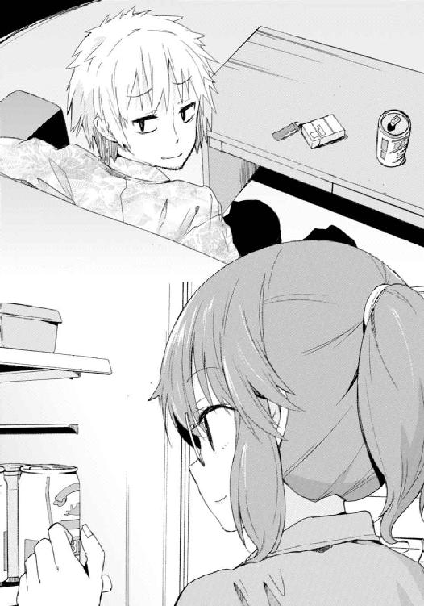
「確かに俺たちは約束したさ。響がここへ来る前に、家族全員で」
響。
旧姓、園村響。
彼は、高遠たちにとってどうしようもなく特別なものを所持している。
即ち『園村』から連なる『倉須』の血だ。
高遠も、礼兎も、リリィも、芽々子も、稜も、耶衣も、倉須の名字を名乗ってはいるが所詮は養子に過ぎない。倉須の血は身体のどこにも流れていない。
倉須の血。つまり、今はもうどこにもないこの家族の核──。
だが皮肉なことに、新参者であるところの響こそがそれを持っている。彼の父親の妹は高遠たちにとっての義理の母、今は亡き倉須詠子であるが故に。
もちろん高遠は、だからこそ響をここへ連れてきた。
自分たちを救ってくれた──自分たちを家族にしてくれた彼らの血縁者が、かつての自分たちと同じ親なしになりかけていたのだ。放っておくことなど決して許されない。
ただ、ことはそう単純にはいかない。
問題はあった。それも大きな、家族全員にとっての大きな問題が。
約束というのは、至ってシンプルなものだ。
比べないこと。
倉須の血をひいた、かつての倉須家の核であったあの人たちと、響を比較しないこと。
それをしてしまえば、誰もが不幸になる。
響は『響』という個人ではなく『倉須の代替品』としてここへ連れてこられたことになるし、高遠たちは『倉須の核』という、既に失った昔日に再び囚われてしまう。
たとえあの人たちの血をひいていても、響はあの人たちとは違う。
あいつはあいつ。高遠と、礼兎と、リリィと、芽々子と、稜と、耶衣と同じ──この世界での縁を失った、誰にも必要とされないたったひとりきりになってしまった存在なのだ。
響は響として必要とされなければならない。
『誰かの代わり』なんていう残酷な役目を負わせることなど許されない。
そんなことをすれば、かつての自分たちを傷付けるのと同じになってしまう。ひとりきりで誰にも必要とされず、孤独だったかつての自分たちを鞭打つに等しい愚行だ。
だから高遠たちは、響を迎えに行く前に全員で決めた。
響を他のきょうだいたちが来た時と同じように、ただの響として扱うことを。
倉須の血を持っていることを、どんな形であれ意識しないようにすることを──。
「つまりはリリィのあれも、約束違反ってことになるのかもしれないな。あいつはたぶん、甘えたんだ......響が倉須の血をひいてることに。四十日しか経っていないのに怒ったのはそのせいだよ。バットを持ち出して振り回すなんて暴挙に出たのも同じ理由さ」
「響ちゃんが倉須の血筋じゃなかったら、そこまではしなかったってこと？」
「たぶんね」
「それはリリィちゃんに対して失礼じゃない？」
批難めいた口調に、高遠は眉をしかめた。
「俺はお前たちと違って、リリィを高潔な人格の持ち主だなんて思っちゃいないさ。あいつは我が儘で、弱くて、ついでに脆い、とんだ甘えんぼだよ。俺から見れば」
礼兎は反論しなかった。
「......そう」
ただし代わりに、悲しそうな眼をする。
あくまで高遠の弱みを的確に突いてくるつもりのようだ。
仕方ないので溜息を吐き、笑ってみせた。
「とはいえリリィを責める気はないよ。俺だって......いや、きみや他のきょうだいたちだって同じだろう？ 響はやっぱり倉須の血だよ。それは事実だ」
「高遠くん......」
「顔だって似てる。雰囲気もどことなく。黙って食事してるところなんか見ると、まるで昔に戻ったような錯覚をすることさえあるね。もちろん口に出したりはしないけど......そう思ってしまうのを止めることはできない。みんなもそうだろうさ」
笑顔を苦笑に変え、ビールを一気に飲み干し、
「だから俺は不安なんだ。このままみんなが、響に倉須の血を、あの人たちの面影を見るようになったらと思うと。......ちょっと悩んじゃうね」
家族の前でいつもそうするように、少しばかりおどけた態度で。
倉須高遠は眉を上げ、妹を見遣る。
礼兎はそんな兄の顔を、丸眼鏡の奥にある双眸でじっと見返すと、
「そうね」
俯いて、気を逸らすように、ビールの缶にできた水滴を指で拭った。
「みんな、忘れられたらいいのにね。あの人たちのこと」
「そんなことできないし、したくないね、俺は」
「冗談よ。私だって本当にそう考えてる訳じゃないわ」
でもね、と、再び顔を上げる礼兎。
「発端は高遠くん、あなたなのよ。母さんの血縁を調べたのもあなた。響ちゃんの存在を私たちに知らせたのもあなた。あの子を養子に迎えることを私たちに提案したのもあなた。最終的に迎えに行くことを決定したのもあなた。響ちゃんを誘ったのもあなた」
彼女はいつものどこか億劫げな口調で、けれどはっきりと言葉を紡ぐ。
「もちろん、だからこそあなたが不安になってるというのはわかるけど......もし不安だったら、だからこそって言葉をもう一回重ねればいいんじゃないかしら。あなたが切っ掛けを作った、だからこそあなたは不安に思う必要なんかない」
どういうことだ、と問うより早く、
「切っ掛けを作ったのが長男のあなただからこそ、私たちきょうだいはあなたを悲しませるようなことはしないわ。自分のせいで家族が不幸になったなんて......そんな思いをあなたに背負わせることはしない。私たちは家族なのよ？ 血が繫がってないから、だからこそ、あなただけに責任を押しつけたりはしない」
顔も声も笑っていた。
けれど言葉は、真剣そのものだった。
「それに、あなたの弟や妹たちが、そんなやわに見えるのかしら？ 新しくできた家族をわざわざ不幸にしてしまうような子たちじゃないでしょう？ もしそうだったらそもそも、この家には七人もきょうだいが増えてやしないわ」
今度は、高遠が俯く番だった。
そのまま数分ほど沈黙する。
静寂を紛らわせるためにうってつけなアイテムはなく──煙草を吸っていい場所ではなかったし、ビールも空になっていた──だから無音をただ嚙み締め、黙考し、そうして。
「わかったよ」
礼兎へと、降参するように肩を竦めた。
「だったらいいわ。許してあげる」
もう追加の銃撃は来ない。
だから高遠はいつものように人を食ったような笑みを浮かべると、シャツの襟元へ手を遣りながら立ち上がり、ぞんざいに妹へ告げた。
「風呂に入って寝る。お前も夜更かしするなよ」
２
高遠が廊下の奥へ消えてから、礼兎は深く溜息を吐く。
ビールをひと口飲み、それから小さく笑むと、廊下の玄関側──つまりは浴室や洗面所ではなくて階段のある方向へ視線を遣った。
「高遠くんはもういないわよ、リリィちゃん」
ややあって、長身の人影が居間へと入ってくる。
さすがに普段とは違い足音を消した静かな歩き方で。
「......ふん」
一方で表情はいつも以上に憤然としていた。
「冗談じゃないわ、高遠の奴」
苛立たしげに吐き捨てる。
「いつから聞いていたの？」
「ビールなんて飲むと思考力が鈍るわよ、礼兎。どうせ間を保たせるためのものなんだから麦茶かなにかにするべきね。アルコールは愚かな選択だわ」
礼兎の質問には答えず、リリィはそんなことを言った。
「冗談じゃない、っていうのは高遠くんに『甘えんぼ』だなんて評されたから？ それとも、『甘えんぼ』って評されたのが図星だったから？」
「私は間を保たせることに気を遣うなんて願い下げね」
飲み物を取りにはいかず、ソファ──礼兎が座っている隣ではなく、テーブルの反対側へと腰掛ける。まるで挑むように。或いは、見据えるように。
「......ま、前者だったら話の途中で姿を現すわよね、リリィちゃんは」
「時々、高遠が自分の兄だってことがどうしようもなく呪わしくなるわ。礼兎にもそういうこと、あるでしょう？ 芽々子も稜も耶衣も、最低ひと月に一度はそう考えるはずだわ。響はこれからね。せいぜい苛立つといいのよ」
「呪わしい、か......。恨めしい、ではないのね。それはつまり、愛しい、ってことだわ」
「あんた私に喧嘩売ってる？」
リリィは眉をひそめる。
「妹に喧嘩を売る姉がどこにいるの。これはお説教よ」
「たとえ姉のだろうが兄のだろうが、私はお説教なんて聞く気はないわね」
「聞く気はなくても、聞き入れる気くらいはあるでしょう？」
礼兎の言葉にうんざりしたように、ソファに背を預けて天井を見遣るリリィ。
「天井になにかあるの？ 蜘蛛でも這ってる？ だったら退治しなきゃ」
「虫が嫌いなくせによく言うわ」
「嫌いなんじゃなくて面倒なだけよ。高遠くんがいるんならやってもらうのだけど、誰もいないんなら仕方ないわ。長女の私がやらなきゃ」
「あんたはいつもそうね、礼兎。安心しなさい、蜘蛛なんかいやしないわよ。下を向くのが厭だっただけ。......それにしても本当、呪わしいわね。私を言い負かすことができるのはこの世でただひとり、あんただけだと思うわ、正直なところ」
「そうでもないわよ？」
リリィの表情がほんの少しだけ──呆れで──和らいだのを見、礼兎は妹へと笑いかける。
「ひょっとしたらこの先、響ちゃんがそうなるかもしれないじゃない」
返ってきたのは数度の瞬き。
直後、礼兎にすら感情の窺えない、笑っているような怒っているような顔をする。
そして、
「......ねえ礼兎。私は響を、あの人たちと比べているのかしら」
リリィはぽつりと、少しそっぽを向きながら、問うてきた。
礼兎は応える。
「それはあなたにしかわからないわ」
「自分でもわからないから尋いてるのよ」
「そうねえ」
考え込みつつ、ビールを飲んで間を保たせ、二十秒ほど。
なにも思い浮かばなかったので、月並みなことを言った。
「少なくとも、不安を認めるのは悪いことじゃないと思うわね」
「あ、そう」
リリィは少なからず失望したようだった。
礼兎に対してではない。自分で答えを出せず姉に頼った自分に対してだろう。
「寝るわ」
気まずくなったのか、彼女は立ち上がると、そのまま踵を返し居間を出て行こうとする。
故に。
礼兎はそんな彼女の背中へと、声をかけた。
「ねえ、リリィちゃん」
足を止めた妹へ、問う。
「朝、あなたが怒ったことで、響ちゃんはあなたを嫌いになったりしたと思う？」
「わからないわ、そんなこと」
吐き捨てるような返事。
予想通りの──返事に、
「そうね。それはあなただけにはわからないことよ。つまり、私たちには自明ってこと」
「......どういうことよ」
倉須礼兎は、笑った。
「響ちゃんを家族にしてくれて、ありがとう」
愛しい妹へ、心からの感謝を込めて。
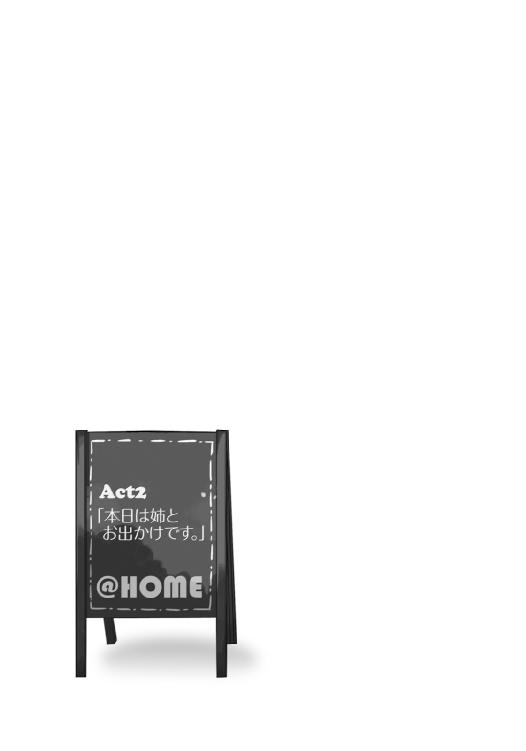
０
金曜日だった。
五月十二日──つまり僕が義姉のリリィに認められ、本当の意味で倉須家の一員となった記念すべき日から更に一週間ほどが経ち、そろそろ六月も近付いてきた週末のことである。
学校から帰り食事と入浴を済ませ、僕は自分の部屋で、来たるべき土日をいかにして過ごすかという学生の殆どが週に一度のペースで直面する悩みと真摯に向き合っていた。
部屋はすっかり片付け終わっていたし、家にいても特にやることはない。さてどうしたものか、などと椅子に座り天井を見上げていると、不意に部屋のドアがノックされた。回数は一度だけ。ノックとも呼べない代物で、確認などなくすぐにドアノブが回る。
我が家においてこういった『叩いてやっただけありがたく思いなさい』みたいなノックをするのはただひとりしかいない。
「なに、リリィ姉さん」
僕はドアへと視線を向け、相手が姿を現すと同時に言った。
「なに、とはなによ」
彼女は僕の顔を見るまでもなく、鼻白む。
風呂上がりのジャージ姿ではあったが、佇まいは昼間と同様に隙がない。敢えて言うのならば髪をポニーテールにしていないのが隙といえば隙なのかもしれないけれど。
「この私に向かって『なに』とは、まったくあんたもご大層なものね」
リリィ姉さんはあまり論理的でない文句を口にした。恐らくは、単に僕が先に声をかけたのが気に入らないのだ。彼女の対人戦は常に、自らが主導権を握ることから始まる。
とはいえ、怒っているとかではまったくない。僕は既にリリィ姉さんの『無愛想ないつもの態度』と『怒っている時の態度』との区別がつくようになっていた。
「ま、いいわ」
無言で反応を窺っていると、部屋の扉が後ろ手に閉められる。これは珍しい。倉須家の次女にはドアをぞんざいに開ける習慣はあっても、閉める習慣はないと思っていた。
......もちろんそんなこと口には出さないけど。怒っていないのは確かだが、だからといって別に上機嫌って訳でもないのだ。『怒る』と『機嫌を損ねる』は違うし、そもそもリリィ姉さんは機嫌を損ねただけでも、怒った一般人の百倍くらいは怖いのだった。
何故か自分の背後──もちろんそこにあるのは閉まったドアだ──を振り返って一瞥し、彼女は薄く形のいい唇を開いた。
「あんた、明日の午後はなにか用事がある？」
「......は？」
「は、じゃないわ。別の誰かじゃなくてあんた自身のことよ？ さっさと答えなさい」
「あ、ああ......うん。いや、特にはないよ」
尋かれたことに対して素直に頷く。
数秒ほど戸惑ってしまったのは、僕の持つ、倉須家の面々に対するコミュニケーションスキルがまだ発展途上であるせいだ。リリィ姉さんに限らず、僕の血の繫がらない兄や姉、弟や妹たちは、総じてまともな会話をしたがらない。なんてことのない質問に見えて別の真意が隠されていたりして、それを読まずに普通の返答をするとこっちが変人扱いされたりする。
「......って、不条理過ぎるよな、ほんと」
「なに？」
「いや、こっちの話。で、僕の明日の午後の用事の有無になんの問題があるんだ？」
「そんなに『の』を重ねるもんじゃないわ。私は『の』の字が嫌いなのよ。形とか美しくないじゃない？ 重ねるなら『ろ』とかにしなさい」
「えっと......僕ろ明日ろ午後ろ用事ろ有無になんろ問題があるんだ？」
頑張ってやり直してみると、リリィ姉さんはぽかんとした表情になった。
「は？ あんたなに言ってんの？ 日本語喋りなさいよ。馬鹿なの？」
「振ってきたのはそっちだっ！」
ひどすぎる。
「覚えておきなさい響、素直と馬鹿は紙一重なのよ。そして、たとえ美しくないからといってそれが忌避する理由にはならないわ」
「立派なこと言ったつもりかよ......」
「で、明日なんだけど」
リリィ姉さんは僕のつっこみを無視し、話を引き戻す。たぶん飽きたのだろう。
だが、そこで不意に表情を消し、身体をわずかによじらせる。
──なんだ？
まるで背後を気にするようなその仕草、さっきに続いて二度目だ。一週間前に自分が蹴破ったドアの建て付け具合を確認している訳ではないことくらい、僕にだってわかった。彼女の注意力もしくは警戒心は、ドアの更に向こう、つまり廊下へと向けられている。
「午後、用事はないって言ったわよね？」
「うん。午前もだけど」
「つまりあんたはこのままだと、明日は起きたい時間に起きてだらだらとし無為に休日を過ごすだけなのよね？」
「......素直に頷くのも癪だけど、うん」
「だったら」
そして、僕の姉──我が家の次女は。
背後への警戒からか、非常に珍しいことに声をやや小さくし、更に希有なことに喉の奥で咳払いをひとつくぐもらせると、それでも僕の目を睨み付けるようにして、言ったのだった。
「あんたは明日、私と一緒に街に行くのよ」
「......は？」
「ちなみに家族には内緒でね」
言葉の意味がよくわからず絶句した僕に、それはまさしく追い打ちだった。
「全員。つまり高遠にも礼兎にも芽々子にも稜にも耶衣にも。わかったわね？」
１
まあ、しかし、だからといって。
リリィ姉さんが一カ月ほど前に家へ来た新しい義弟に対して切ない想いを抱き募らせた挙げ句に意を決してデートへ誘ったとか、そういう素っ頓狂なことが起きるなど、全然まったくこれっぽっちもあり得る訳がない。
「誕生日なのよ」
次の日、午後二時過ぎ。
ふたり別々に家を出てから時間を合わせて最寄りの駅へ行き電車へ乗り込み、空いていた四人掛けのシートをふたりで占拠した後。
僕の向かいの席でリリィ姉さんは、心底面倒そうにそう言った。
「誕生日って、芽々子ちゃんの？」
「ええ。六月三日」
昨夜あれから、部屋の外を警戒したリリィ姉さんが僕に告げたのは、次の三点だった。
まず、一。芽々子ちゃんにプレゼントを買いに行きたいこと。
次に、二。なにを買えばいいのか迷っており、僕にも品選びを手伝って欲しいということ。
それから、三。家族には内緒にしておきたいこと。買いに行くというその事実すらも。これはどうも、プレゼント選びに第三者の手を借りること自体を恥と考えているかららしい。
つまり、種がわかれば単純な話である。
家族にバレてしまうのを避けるため──こっそりと僕の部屋に来て、他の家族を気にし、結果として──『鏡山高校の女帝』と異名を取る彼女にはまるで似合わない、やけにしなびた態度を取っていたという訳だ。
とはいえ昨夜の時点ではかなり情報が不足していた。リリィ姉さんが芽々子ちゃんにプレゼントを買う理由すらもわからなかったからだ。
「......なるほど」
「なにが『なるほど』なのよ」
「誕生日プレゼントだってことがだよ」
不機嫌そうに僕を睨むリリィ姉さんは、緑色のワンピース。薄手の布地は殆ど夏の装いで、春先にはまだ早いんじゃないかと思えた。
......もっとも、駅で「寒くないの？」と尋いた僕に彼女はこう答えた。
煩いわね、季節なんかに私の着る服を左右されたくはないのよ。
まあ、季節外れというほどでもないし別にいいか、とも思う。
僕は話を続けることにした。
「でも......芽々子ちゃん本人にバレちゃまずいっていうのはわかるけど、高遠兄さんたちにまで内緒にしなくてもよかったんじゃないのか？」
「冗談じゃないわ」
返事はぴしゃりとしていた。
「高遠にバレでもしたら、あのしたり顔でどんな厭味を言われるかわかったものではないもの。他の奴らだって信用できたもんじゃないしね。礼兎はついうっかり、稜は面白がって、耶衣は無邪気に......三者三様の理由で、高遠に口を滑らせる可能性は高いわ」
「......はあ」
「高遠だけじゃなくて芽々子本人に伝わるのも避けたいしね。覚えときなさい、響。うちの家族で秘密を共有するに足る人間なんてただのひとりもいやしないのよ」
ひどい言いようである。
「あ。というか、芽々子ちゃんの誕生日ってんなら、僕もプレゼント買わないと」
不意に気付いた。手持ちは足りるだろうか。
一応ちょっと多めに持ってきてはいるけど──なんて考えていると、
「あんたにその必要はないわ」
妙につっけんどんな物言いをされた。
「え、なんでさ」
「芽々子のプレゼントを買うのは私の役目だからよ。他のきょうだいたちがすべきことじゃないわ。あんたも含めてね」
「......どういうこと？」
重ねて問うた僕に、リリィ姉さんは面倒そうな顔を隠そうともせずに鼻を鳴らしてから、あのね、と説明を始めた。
「うちは、きょうだいが多いでしょう？」
「ああ、うん」
「だから誕生日なんてイベント、きりがないのよ。年六回......今はあんたがいるから七回か。とにかくそんな回数、全員こぞってプレゼントの交換会なんてのはバカげてるってこと」
確かにそうだ。
来月は芽々子ちゃんとして──他のきょうだいたちが何月何日生まれなのか僕はまだ知らないけど──誕生日というのは誰しも一年に一回必ず巡ってくるものだ。その度にプレゼントを贈るとしたら、自分を除いても年六回。ちょっと冗談ではない出費である。
「だから各々の誕生日には、きょうだいのうち誰かひとりが代表してプレゼントを買うことになってるのよ。それ渡しておしまい、って訳」
「つまり芽々子ちゃんにプレゼントを贈るのはリリィ姉さんの役目ってこと？」
「ええ、そうよ」
「他の人の誕生日は？」
そこで何故か彼女は僕から視線を外し、窓の外、流れる景色へと顔を背け、
「高遠には礼兎で、逆に礼兎には高遠ね。稜には礼兎で、耶衣には稜よ」
「......ええと」
一気に言われたので頭がこんがらがってしまった。
つまり、どういうことだ？
礼兎姉さんが二回出てきたような気がする。高遠兄さんと稜くんのふたりにプレゼントする役目を担っているみたいだった。正直、それだけでバランスが悪いのだけど──他にもなにかおかしい部分があったような。
「あのさ、リリィ姉さん。......それって法則とかあるの？」
さすがにお手上げだ。
リリィ姉さんはこちらを一瞥しわずかに眉を片方だけ上げ、
「さあね。私は知らないわ」
腕組みをしたまま再びそっぽを向く。
──勘弁してくれ。
法則がわからないと困る理由が僕にはあった。
「僕はどうすりゃいいんだよ」
「......あんたが？」
「そうだよ。僕は誰に誕生日プレゼントをあげればいいのかなって。僕だけ担当なしっていうのは、さすがにちょっと......」
そんな僕へリリィ姉さんは微かに笑った。
「安心しなさい。あんたの誕生日には高遠がプレゼントを渡すことになってるわ。でもってあんたは今のところ誰にもあげる必要ないから」
まったく当然のような、断言。
「......え」
しかし僕はそれに、強烈な違和感を覚える。
誰にもプレゼントをあげなくていいと言われたことももちろんだが、もっと根本的なこと。
さっき彼女は、法則があるのかどうか知らないと言ったはずだ。
なのに新参である僕の割り当てに関してはまったく淀みなく答えた。
これ、矛盾してはいないか。
ひょっとしたらプレゼントの割り当ては、高遠兄さんか誰かに決定権があるのかもしれない。適当に気紛れか、もしくは個人の懐事情なんかを考慮してか、だから法則性などないに等しいというだけなのかもしれない。
ただ、その推理は正解でない気がした。
さっきからのリリィ姉さんの言葉や態度は、少し変だ。
この人はなにかを隠しているのではないか、そう思ってしまう。
しかし──僕が違和感を抱いた理由も定かでないうちに、電車がもうすぐ次の駅へと到達する旨をアナウンスし始める。それは僕らが買い物をしようとしている街であり、
「さ、行くわよ」
リリィ姉さんは僕の思案を無視して立ち上がり、ドアへ向かって歩き始めるのだった。
２
ところで、鏡山──つまり倉須家が居を構えている土地は、市街地からはやや外れた場所にある。そこは小高い山の一画を削って作られた住宅地であり、高級というほどでもなければ大安売りされている訳でもない、至って普通の中流家庭が軒を連ねているようなところだ。
近くにはスーパーやコンビニ、本屋やレストランなんかも点在しているので生活そのものには困らないのだが、たとえば今日のように日用品ではないものをショッピングしたかったり、またカラオケやゲームセンターなどの娯楽施設を利用したい場合などは、電車に五駅ほど揺られて市の中心部まで出向く必要がある。
現地民的には『街に出る』とか『山を下りる』とか言うらしい。
ただ僕は四月に越してきてからこっち『山を下りる』のは今日が初めてだった。生活環境が変わるというのはやはり慌ただしくて、遊びに行く余裕などなかったというのもある。
駅の改札を出た先に広がる街並みは、だから当然ながら馴染みなどまったくない、まさに異国と等しい場所だった。
見た感じ、都市としてはそこそこ。大都会というほどではないが田舎と呼ぶにはちょっと謙遜し過ぎているといった程度だろうか。東京まで電車で一時間強という土地柄なので、このくらいの発展が丁度いいのかもしれない。
「さ、まずはどこへ行こうかしら」
リリィ姉さんは改札を出てすぐに立ち止まると振り返り、僕を一瞥した。
「なにを買うか......は、決めてないんだよね」
「決めてたらあんたを連れてきたりしないわ」
「とはいっても、僕は街に不慣れだよ」
「そんなこと言われるまでもないわ。......じゃあ、そうね。まずは」
辺りを見渡し、十五メートルほど先にある喫茶店らしき店舗へ視線を定め、
「そこでコーヒーでも飲みつつ、なにか甘いものでも食べながら話し合いましょうか」
「......来て早々の休憩かよ」
「覚えておきなさい響。女の子はね、甘いものを与えてさえおけば機嫌が取れるものなのよ」
「リリィ姉さんも？」
「私がそんなに単純だとでも思ってるの？ バカにしないで頂戴。いいから行くわよ」
身勝手かつ不合理な理屈をまくしたてると僕の意志を確認もせずに、喫茶店へ向けてさっさと歩きだした。
仕方なく僕は後を追う。
そこは駅前にしては珍しく、チェーンではない店だった。
中は少し薄暗く、それなりにいい雰囲気。外からはわからなかったがけっこう広く、席の数も多かった。なかなか繁盛しているらしい。
ウェイトレスに案内されて席へ。四人掛けのテーブルに向かい合って座った。
つい二分前、甘いものに釣られるほど単純ではないと豪語したリリィ姉さんだが、板についた言動不一致ぶりでアイスコーヒーとチョコレートパフェを注文する。
僕も仕方ないのでエスプレッソとチーズケーキ。出掛ける前に昼食を摂ったからあまりお腹は空いていないのだが、文句は言わずにおこう。
パフェよりも先に来たコーヒーのグラスを引き寄せ、リリィ姉さんは言った。
「......で、あんたに尋きたいのだけど。具体的にどんなものがいいと思う？」
もちろんこれは、芽々子ちゃんの誕生日プレゼントのことである。
「そうだな......」
僕は眉間に皺を寄せる。
「って、僕まだ芽々子ちゃんの趣味とかそういうの殆ど知らないんだけど」
一、二度部屋に入ったことはある。
見た感じ、特に変哲のない『女の子の部屋』──いや、むしろ殺風景な部類に入るかもしれない。ポスターやぬいぐるみなど、そういった装飾物は見当たらなかった気がする。
と、
「あの子の趣味？ それがはっきりしてりゃ苦労はしないわ。強いて言うなら私たちね」
不意に憮然とした表情になり、
「なんだよそれ」
「あの子は家族依存症なのよ」
リリィ姉さんは妙なことを言った。
「......家族依存症？」
「ええ。あんたももう気付いてると思うけど、あの子は基本的に、家族にべったりなの。私たちと話をするのが好き。私たちと触れ合うのが好き。私たちと一緒にいるのが好き」
ああ、それは確かに。
正直、芽々子ちゃんの過剰なスキンシップにはちょっと困ってしまうほどだ。唐突に意味なく抱きつかれたりなどはしょっちゅうで、人前ですら平気でしてくる。
「ただ......それだけならいいのだけど、問題はそれ以外のものにあまり興味がないってことよ。趣味らしい趣味もないはずよ」
「......そいつは重症だね」
初めて会った日だったか、高遠兄さんが芽々子ちゃんを評して言っていた。
お前は人間の肉の味を覚えた子猫だよ──と。
今になってみれば、その頓狂な表現の意味がわかるような気がする。
「ちなみに去年は何を贈ったの？」
「バッグよ。一昨年はペンシル」
意外にまともなアイテム選定だった。
「じゃあ、今年もその辺で攻めればいいんじゃないの？ ええと......服とかは？」
「服はダメね。あの子、家族からのプレゼントを徹底的に愛用する悪癖があるから。休みの度に同じ格好の芽々子を見ることになるわ。......ま、三年前に私がやらかしたのだけど」
「バッグもペンシルも同じ運命を辿ったって訳か。物持ちがいいのは美徳なんじゃない？」
「バッグは今のところ無事だけど......ペンシルは失敗だったわ。三カ月めくらいに落として失くしてしまったのよ。それで、家族中巻き込んでの大捜索。結局見付からずに、三日くらい泣き喚いてたわねあの子。新しいの買ってあげてようやく治まったけど」
──なるほど。
「姉さんが僕なんかに頼る訳だよ」
「理解してもらえて嬉しいわ」
全然嬉しくなさそうな顔だった。
でも......だったらどうすればいいだろう。
まず、失くす可能性があるのは論外。
それからできれば服などのような、連続使用による劣化が少ないもの。
しばらく考えた後、僕は名案を思い付く。
「ぬいぐるみはどうかな」
「......ぬいぐるみ？」
「ああ。部屋に置いておくものだから失くしたりはしない。毎日抱いて寝ても、まあ、汚れはするかもしれないけど......簡単に壊れたりはしないだろ？」
リリィ姉さんは黙り込んだ。
思案するように視線を机の上に留め、ややあって顔を上げる。
そして上げた時にはもう、薄く笑みを浮かべていた。
「いいわね。それでいきましょう」
リリィ姉さんは滅多なことで笑わない。
学校にいる時はもちろん、家でさえもそれは同様だ。
だがその分、仏頂面が笑顔へ変わった時に得られる華やいだ空気はそれまでのギャップと相まって、見た者を無条件でとろけさせてしまう。そもそもがとびきりの美人なのだから尚更。世が世なら一国傾けていたかも、とは高遠兄さんの談。
「なるほど、ぬいぐるみか。やるわね響」
「あ、......うん」
しかも褒められたとくれば尚更だ。
僕はつい照れてしまう。
お陰でミルクも入れずエスプレッソに口をつけ、その苦さに口をすぼめてしまうという失態を犯してしまう始末だった。
３
携帯で調べてみたところ、駅から歩いて五分ほどの場所に建っている大型デパートにぬいぐるみ売り場があるらしい。
ケーキとパフェを平らげてから僕らは喫茶店を出、そこへ向かった。
当然ながら僕は初めてだ。
デパートがある方角もわからない身、リリィ姉さんに先導してもらうしかない。
道すがら尋いたところ、元々このデパートで品探しをするつもりではあったらしい。服やＣＤなんかも含めて雑多な品物を幅広く扱っているのが都合いいそうで。──という訳で、僕はとりあえずここまでの道のりをしっかり覚えておくことにした。このデパートさえ把握しておけば当面の間はいろいろ困ることはなさそうだし、駅からやや距離がある分、何度も通っていれば街そのものにもすぐ慣れるだろう。
春とはいえ歩いていると日差しがそれなりにきつく、デパートの中に入った時にはクーラーの涼しさが心地よかった。薄着のリリィ姉さんは体感温度などまるで知ったことかと言わんばかりに、外とまるで変わらない顔をしていたけれど。
「どこかしらね、ぬいぐるみ売り場」
何度も来てはいる彼女も、さすがに興味のないものはどこに売ってあるか知らないようだ。
「六階って書いてたよ」
さっきの検索結果が間違っていなければそのはずだ。
リリィ姉さんは「そう」と頷くと、真っ直ぐエレベータへと向かった。目的地が決まっている以上、エスカレーターで一階ずつ上る気はないらしい。
一緒に乗り込み、六階、雑貨売り場へ。
そこは、男の僕としては今回を限りに用などないであろう、ファンシーなグッズが所狭しと並んだフロアだった。
弁当箱や文房具などの小学生向けアイテムから、アロマやアクセサリ類などの全年齢対象商品まで。ぬいぐるみ売り場はフロアの奥、角にあった。クマだのイヌだのネコだのパンダだの、大小様々な動物たちが山ほど陳列されている様は、なかなか圧巻である。
「......さて」
この中からどれを購入するか決めなければならない。
予算と大きさに芽々子ちゃんの好みを加味し、選定することにしよう。
隣に立った我が姉は、居並ぶぬいぐるみたちに対して『こいつらなんてただの布と綿でしょうになにをそんなに偉そうに鎮座しているのかしら』みたいな顔をしていた。
「リリィ姉さん、予算は？」
「一万円以内ね」
「それだけあったら、どれでも選び放題なんじゃないかな」
僕らの想像の範疇を超えた高級品が紛れ込んでいる可能性もまあないではないけど。
手近にあった巨大なウサギに歩み寄る。大きさは両手で抱えるくらい。
値札を探すと、足許に縫い付けられていた──ぴったり一万円。なるほど、だったらこれより大きなあのイルカとかキリンとかはもっと高値ってことか。あとは本格的っぽいテディベアや、ディズニーみたいな版権ものは値段が上乗せされているはず。
というか適当に目を付けたこのウサギ、なかなかいいような気がしてきた。芽々子ちゃんはけっこうウサギっぽいし、似合うのではなかろうか。
そんなことを考え、
「なあ、リリィ姉......」
振り返り呼びかけようとしたのだが、
「......え」
僕の視界に映ったのは、予想外のものだった。
リリィ姉さんではない。
彼女の更に後方だ。
ぬいぐるみ売り場ではなく、その奥にあるアロマグッズ売り場。
見知った人影、それもこの場にいるはずのない、というか最もいてはいけない人間が、きょとんとした表情でこっちを見ていた。
いや──きょとんとしていたのはつい一秒前までだ。
彼女はもはやそんな顔をしていない。浮かべているのは恐ろしいほどの喜色である。満面の笑み、それもどこか悪戯っぽさを混じらせて、目の合った僕に『しーっ！』というジェスチャーを送ると身を沈めてダッシュを開始する。
「......ん？」
リリィ姉さんがようやく背後の気配に気付くも遅い。
「りーぃーおーねーえーちゃーんーっ!!」
まるでスカイダイビングみたいに、我が家の三女は我が家の次女へと飛び掛かった。
「芽々子!?」
さしもの倉須リリィも驚嘆の声をあげる。
「いいいいやっほおおおお！」
芽々子ちゃんは嬌声とともにまるでおんぶお化けのようにリリィ姉さんの背中へ抱きつき、
「ねーねーどうしたの？ なんでこんなところにいるの？ しかもひぃお兄ちゃんもっ！」
びし、と僕を楽しそうに指差した。
「め、芽々子ちゃん......は、どうして？」
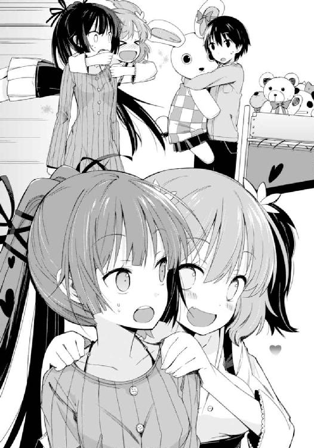
僕はようやくのことで、そう問うた。
茫然からこの短期間で回復した自分を褒めてやりたい。
僕とリリィ姉さんが家を出る時には......芽々子ちゃん、どうだったっけか。家族に見付からず外出することばかりを考えていたせいで確認を怠っていた。
「今日はね、お友達と買い物だよっ」
芽々子ちゃんはようやくリリィ姉さんから離れると、少し向こうでおっかなびっくりこちらの様子を窺っている女の子たちへ。
「こっちゃんと、みょーりんと、ゆなっち」
三人、紹介される。ショートカットの利発そうな娘と、お下げ髪のおっとりした娘、それからアップにまとめた優等生っぽい出で立ちの娘。正直、愛称で言われても覚えきれない。というかどれがこっちゃんでどれがみょーりんでどれがゆなっちなんだ。みょーりんってなんだよそのあだ名。調味料か。
心の中でつっこんでいる場合ではなかった。
「......リリィ姉さん」
芽々子ちゃんが友人たちの傍にいるのを幸い、姉の袖を引きそっと耳打ちする。
「どうしよう......」
返ってきた言葉は明快だった。
「誤魔化しなさい」
「ってか、もうバレてんじゃないか？」
「大丈夫よ」
囁き声ではあるが、こんな時も冷静な口調なのはさすがと褒めるべきか。
「我が妹ながら、芽々子はアホなの」
......って、冷静な口調で酷いことを囁き始めやがったよこの人。
「断言できるわ。この調子だと、私たちがここに来た目的にまったく気付いていないはずよ。そもそもあの子、毎年、三日前くらいにならないと自分の誕生日を思い出さないもの」
なるほど芽々子ちゃんの誕生日までまだ半月ある。
って、『なるほど』なんて言っちゃ失礼なのだけど、まあそれは置いておこう。
つまりリリィ姉さんの言葉を信じるなら、どうにかしてこの場をやり過ごせば、誤魔化すのは可能ということだ。
「あなたたち、うちの生徒なの？」
時間稼ぎをしてくれるつもりだろうか。
リリィ姉さんが芽々子ちゃんの友人一同に歩み寄り、話し掛け始めた。こっちゃんとみょーりんとゆなっち......だっけか、三人がそれぞれ緊張の色を見せながら頷く。
それもそうだろう。
我らが鏡山高校の生徒会長──気高くも理解しがたい性格で有名な、畏怖と憧れの権化であるあの倉須リリィに話し掛けられたのだから。もういい加減慣れてもおかしくない僕のクラスメイトたちですら、姉さんが教室に来訪すると未だに強張ってしまう。
「いつも妹がお世話になっているわね。それともあなたたちが妹にお世話になっているのかしら？ ま、どちらでもいいわ。私とあなたたちに縁ができたことには変わりないものね」
相変わらず意味不明な言葉だったが、三人はうっとりしたような顔で聞き入っている。
とにかくチャンスだ。
今のうちにどうにか言い訳を考えるべく、僕は頭を必死でフル回転させた。
「ねー、ひぃお兄ちゃん？」
芽々子ちゃんが友人たちを放置しこちらへ視線を遣る。
怪訝な表情をしていた。何故だろう？
「......あ」
そこで、僕は。
「ね、それ、なに？」
自分が犯している致命的なミスに気付いた。
芽々子ちゃんが疑問の視線を向けている対象は、僕ではなかった。
正確に言うならば、僕ではあったけれど僕そのものではなかった。
僕の肩口。というか、腕の中。
不肖、倉須響。
今、現在。いや、さっきからずっと。
「あ、の......その」
ウサギの──巨大な──ぬいぐるみを──抱きかかえて──いたんですけど......。
やばい。
これはやばい。
最も順当であろう『アロマキャンドルとかその辺のものを買いに来たんだけどたまたまぬいぐるみ売り場の前にいただけですよ』という言い訳がこれで封じられた。
ではどうするか。
『誰かのプレゼント』というのも無理。リリィ姉さんはああ言ったけど、芽々子ちゃんが勘付いてしまっては一巻の終わりなのだ。
『落ちていたのを拾っただけ』というのはどうか──あり得ない。
だったら『リリィ姉さんの趣味』──あとで僕が殺される。
笑ってさりげなく棚に戻す──どうさりげなくできるんだよこの状態で！
芽々子ちゃんは固まっている僕を見て、きょとんとした笑顔のまま小首を傾げ、言った。
「ひぃお兄ちゃんが買うの？」
瞬間。
僕はたぶん熱暴走してしまったのだと思う。
「ああ、そうだよ」
我ながら驚くほど滑らかに言葉が出た。
「芽々子ちゃん、実は、僕はね」
思考は止まっていたのに。
なのに、笑顔まで浮かべ、
「......ぬいぐるみを集めるのが趣味なんだ」
苦し紛れの向こう側からひょっこり出てきた唐突な新設定を、自分に追加した。
「へ？」
さしもの芽々子ちゃんも目を丸くする。
リリィ姉さんも同様、眉をひそめてこっちを振り向いていた。
ついでに、芽々子ちゃんのお友達三人も。
ああ、もう無理だ。今更「噓です」とか「そんな訳ねえじゃん」とか言えない。
このまま行くしか──ない。
「なにを変な顔してるのさ？ 僕はなにもおかしなこと言っていないよ。ほら見て芽々子ちゃん。このウサギ、両手に余るほどの大きさに相応しい虚ろな目......実に可愛いじゃないか」
「うん、まあ確かに可愛いけど......」
「そうだろ？ 着てる服もビビッドで素晴らしい。抱き心地も上々だ。これは毎日抱き締めて過ごすしかないよ！ いいなあ。買おうかな。いや買おう。買うしかない！」
と、さすがに悪ノリし過ぎたか。芽々子ちゃんはまるでショックを受けたように「抱き締めて過ごす......？」と僕の言葉を鸚鵡返しに呟き、
「もしかしてひぃお兄ちゃん、うちに来てから......ぬいぐるみ買うの、我慢してたの？」
「ああ、実はそうなんだ。前の家にいた子たちはさすがに持って来れなかったからね。でもそろそろ落ち着いてきたし、部屋に誰もいないのが寂しくなっちゃってさ」
どうしよう、涙が出てきた。
なにがぬいぐるみ集めだ。
なにが趣味だ。
なにが悲しくて高校二年の男子が、そんなメルヘンな趣味を持ってなきゃいけないんだ。
しかも新しくできた家族に対して盛大に披露するというおまけつき。この噓はもはや、その場しのぎのものではない。一生貫き通さねばならない僕の軛となりつつあるのだ。
「でも越してきたばかりで、どこにぬいぐるみが売ってるのかわかんなくてさ。今日は、リリィ姉さんに連れてきてもらったって訳」
「そうなの？ りぃお姉ちゃん」
僕の噓を信じているのか信じていないのか、それとも僕のことを信じられなくなったのか。確認を取るように芽々子ちゃんがリリィ姉さんへ向き直り、問うた。
姉さんは答える。
「いいこと芽々子。たとえ家族でも、人の趣味にとやかく言うものではないわ。大きく広い心で黙って受け止めてあげなさい」
──そっちか！
「そっか......そうだよね」
やけに深刻そうな顔になった芽々子ちゃん、やがて覚悟を決めたように、
「ごめんね、ひぃお兄ちゃん。お兄ちゃんは間違ってないよね。私、我慢するよ！」
「いや......あの、うん」
リリィ姉さんの背後で、芽々子ちゃんの友人三名がひそひそと囁き合っていた。
「ぬいぐるみ集めだって」
「変わってるねえ」
「さすが、めーちゃんのお兄さん」
「いや、ここは『さすが倉須家』って言うべきじゃない？」
「そっかー」
「やっぱ鏡山高校いちの有名家族は違うね」
叫びたかった。
僕は普通だ。
きみらと変わらない。
別フォルダに入れるのはやめてくれ......。
「ひぃお兄ちゃん」
「......なんだい、妹よ」
「買わないの？ それ」
「いや、ああ......買う。買うともさ」
「抱いて持って帰るの？」
「いや、どうだろ......どうしよう」
「安心なさい響。レジに『配達承ります』と張り紙があるわ。なんと一万円以上は送料無料だそうよ。親切ね」
「わあ、運がいいなー」
「どうしたの？ ひぃお兄ちゃん、なんか声がぼーってなってるけど」
「いや、なんでもないよ？ 大丈夫さ......なんでも、ないんだ」
財布には一万二千円入っていた。
せめて足りなければ、まだ救われたのかもしれないのに。
かくして僕はその中の一万五百円（税込み）を注ぎ込んで、欲しくもないウサギのぬいぐるみを購入する羽目になったのだった。
配達予定日は明日だそうだ。忘れないようにしよう。他の家族には絶対に受け取らせないようにしなければならない。絶対に。
フロアから立ち去る時の『大丈夫ですよこういう趣味を持った男性の方はけっこういますから』みたいな店員の優しい視線には、さすがにちょっと心が折れそうになった。
４
どうも、芽々子ちゃん一行は特に目的もなくぶらぶらとデパートを歩き回っていたらしい。それで出会ってしまったのは僕らの──特に僕の不運と言う他ないだろう。
彼女たちと別れた後、僕とリリィ姉さんはデパートの屋上へと来ていた。
階下のそこそこ洒落た空気から一転、ひなびているというか渋いというか、そんな雰囲気の漂う場所である。子供向けのちょっとした遊具が隅にぽつぽつ、その横にたこ焼きとうどんのテナント。人工芝シートが敷き詰められた中庭の奥には小さな神社。
それらを見渡すようにして設置された休憩用のベンチへ腰掛け、僕は深く溜息を吐いた。
「下を向くのをやめなさい、響。下を向いて、蟻を踏み潰してしまっていることに気付いたら歩けなくなってしまうわ」
よく小梅さんにしている、意味がわかるようなわからないような箴言。
「......いや、大丈夫だよ。僕には今、地面すら見えてないから......」
「そう、それは重畳だわね」
こんな状況なのに気の利いた返答のできた僕を誰か褒めて欲しい。
「とはいえ、いつまでもうじうじしてるもんでもないわ。気を切り替えなさい」
「姉さん......一万円あったらなにに使う？」
「ふん。あんたが立ち直るんだったら、私は今すぐ一万円札に火を点けて燃やしてしまっても別に構いやしないのよ」
「......っ、いやその」
いつも冷酷なことばかり口にするくせに、たまに不意打ちを仕掛けてくるから困る。
これじゃ、落ち込んでいる訳にもいかないじゃないか。
「わかったよ、悪かった。ぬいぐるみのことはひとまず忘れることにするさ」
そもそも屋上まで出向いたのは、誕生日プレゼントの件でもう一度話し合うためだ。
ここならさすがにもう芽々子ちゃんたちと遭遇することもないはず。
リリィ姉さんはベンチに背を預け、腕組みをした。
「そうね。......でも、無理にぬいぐるみをプレゼント候補から外すまでしなくてもいいと思うわ。半月も経ったら覚えちゃいないでしょうし」
確かにそうかもしれない。芽々子ちゃんのあの様子だと、自分の誕生日がもうすぐだなんて気付いていないだろう。ましてやリリィ姉さんがプレゼントの選定に悩んでいることなど想像すらしていないはずだ。半月後にそ知らぬ顔でぬいぐるみを渡したって、今日のことなんかすっかり忘れている可能性がある。
でも、
「......なあ、リリィ姉さん」
僕はなんとはなしに、違う、と思った。
「ぬいぐるみは、やめにしない？」
あれじゃダメだ──という気がしたのだ。
確信があった訳じゃない。
繰り返すが、なんとはなしに、ではあるけれど。
「たぶん芽々子ちゃんは、ぬいぐるみをあげてもあまり喜んでくれないんじゃないかな」
さっき僕が、ぬいぐるみの蒐集を趣味にしていると噓をついた時。
芽々子ちゃんは変な顔をした。
ぬいぐるみ集めの趣味が男として変わったものであったから、それで僕に対して引いたんじゃないかとあの時は思い込んでいたのだが、ひょっとしたらそうではないかもしれない。
芽々子ちゃんの顔は確かに曇っていた。
毎日抱き締めて過ごす、と僕の言葉を鸚鵡返しにしながら。
うちに来てからぬいぐるみ買うの我慢してたの？ と問いながら。
リリィ姉さんに『僕の趣味を認めろ』と諭されて、彼女は言った。
──私、我慢するよ！
我慢する。
なにを我慢するのか。
僕の趣味が変なことをか。
違う。芽々子ちゃんと出会ってからまだ日が浅いけれど、僕だって一カ月と少し同じ屋根の下で過ごしてきたのだから、わかる。
僕の上の妹は、きょうだいの趣味に対して気持ち悪いけど『我慢する』なんて、そんな考え方をするような娘じゃ、決してない。
我慢するのは、別のもの。
「芽々子ちゃんは家族依存症。そう形容したのはリリィ姉さんだよね」
僕がぬいぐるみを抱き締めて過ごすのが厭だった、それ自体は合っているはず。
「だから......」
つまり、我慢すると言った理由は。
ぬいぐるみを抱き締めて過ごすという言葉に拒否反応を示した理由は。
「たぶん芽々子ちゃんは、ぬいぐるみなんて欲しがらない。依存症って言われてしまうほど家族にべったりだから。大好きな家族がいるから......ぬいぐるみは、いらないと思うんだ」
そう、僕自身が言ったことだ。
部屋に誰もいないのが寂しくなっちゃってさ、と。
芽々子ちゃんはそれが厭だったのだ。
ぬいぐるみがいないと寂しい僕のことが。
自分が──きょうだいたちがいるのに寂しがっている兄のことが。
「家族からもらったものはとてつもなく大事にするんだろ？ それって、絆が嬉しいってことじゃないかな。プレゼントの背後にあるリリィ姉さんの、家族の存在が嬉しいんじゃないかな。でも、ぬいぐるみって......まるで身代わりみたいじゃないか。キャラクターだし、背後にいる人との間にフィルターがかかるみたいでさ。たぶん芽々子ちゃんは、喜ばないよ」
僕はそこまでを言って、顔を上げた。
リリィ姉さんを真っ直ぐに見る。
『くだらない』なんて一蹴されるかもと思ったけれど、彼女はそうしなかった。
目を見開き、
「ごめんなさい、響」
まるで感動したかのように笑って、言った。
「私はあんたを見くびってたわ」
「え......」
「確かにそうよ。芽々子はそういう子だわ。だからこそあの子はまともじゃなくて、狂ってて、とても厄介なのだけど......でも幾らそうだったとしても、プレゼントで悲しませたりなんかしちゃ、姉がすたるってものね」
僕は呆気に取られる。リリィ姉さんのそんな反応、初めてのことだった。まさか人に謝ったりすることがあるなんて。
「仕方ないわね」
姉さんは立ち上がった。
「あんたにそう言われちゃ、私も妥協する訳にはいかないわ」
それは宣言だったのかもしれない。
お前に負けるか、という。
新参のきょうだいであるお前よりももっと、芽々子の気持ちを汲んでやろう──という。
もちろん本当のところはわからない。ただ少なくともリリィ姉さんは、やけにやる気の表情を見せつつ、僕にも立ち上がるように促し、
「いいこと、覚悟なさい？ 今から夕方までありとあらゆるショップを巡るわよ。この辺り一帯すべての地図があんたの頭に叩き込まれるくらいにね」
「やっぱ今日、そういう目的もあったのか」
「......なにか言った？」
「いや、なにも」
──勝つも負けるもないよ、姉さん。
妹思いでついでに弟思いな我が家の次女に、僕なんぞが敵うはずがない。
プレゼント選びの手伝いというのはもちろん本当だろうが、そのついでにさりげなく街を案内し、この土地に慣れさせてくれるつもりだったのだからまったく恐れ入る。
ただこれから先、できれば僕は、この人みたいになりたいとも思うのだ。
少しずつでもいいから、こんなふうに、家族のことを考えられるように。
僕はもう倉須家の一員になっている。高遠兄さんに案内され、この人に導かれて、そりゃあ父さんと母さんが死んだショックはまだけっこう引き摺っているけれど、新しい家で笑ったり怒ったり泣いたりちゃんとできるようになったし、その手伝いをしてくれた──リリィ姉さんをはじめとした他のきょうだいたちのことも、好きになり始めている。
せいぜいリリィ姉さんの後を追うことにしよう。
そうしてもう一度、彼女に僕を認めさせてやるのだ。
ごめんなさい、とか、見くびってたわ、とかではなく、さすがね、と。
皮肉など欠片も混じっていない、感心を。
「さ、行くわよ」
リリィ姉さんは振り返りもせずさっさと歩きだす。それはきっと、僕がちゃんとついてくることを確信しているからだろう。
だから僕も安心して、彼女についていく。
まあ、僕が『疲れた』などと愚痴をこぼしても立ち止まってくれそうにはないのが、ちょっと難点ではあるのだけど。
５
──それから。
たっぷり四時間ほどかけて本当に街中を歩き回り、どう考えても誕生日プレゼントを売っているはずのないカラオケやゲームセンターやダーツ場なども案内されつつ、それでも決して妥協することのない真剣さでプレゼントの品物を選びぬき、ようやく夕方過ぎに家へ帰って食事とお風呂を済ませた、その夜。
半日の外出だったが思ったよりも疲れているようで、午後十時過ぎだというのにかなり眠い。とはいえ明日はせっかくの日曜、平日と同じように過ごすのも惜しいな、などと益体もないことを考えながら、僕は自室を出た。
廊下を挟んで斜め向かいのドアをノックする。
「はーい」
返事があったので開け、中へ入る。
「ん、どうしたの響にい」
ベッドに寝転んで雑誌を読んでいた稜くんは、顔だけで僕へ振り向いた。
風呂上がりのパジャマ姿は少女じみていて、弟と言っていいのか妹と言っていいのかよくわからない。部屋も花柄のカーテンやら薄桃色のカーペットやら、可愛らしい意匠ばかり。
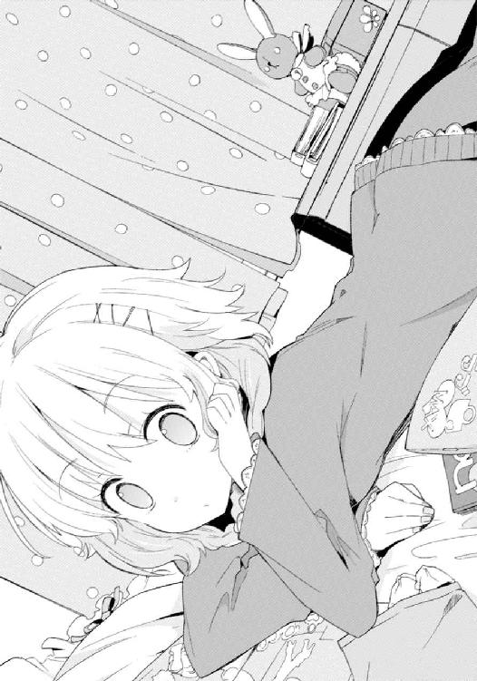
「なに読んでんの？」
「ノンノ」
頭に『メンズ』がない。さすがである。
「そっか。や、たいした用事じゃないんだけどさ。ちょっと尋きたいことがあって」
「なに？」
まるで昨夜のリリィ姉さんみたいに、後ろ手に閉めた扉を背にした僕は、
「あのさ、さっき知ったんだけど、そろそろ芽々子ちゃんの誕生日なんだろ。でさ、プレゼントはリリィ姉さんの役目だって？」
「そうだな。芽々子ねえは、リリィねえの担当だな」
足をぱたぱたとさせる稜くんへ、単刀直入に──一方でとぼけて、問うた。
「それってさ、どんな法則なの？ 僕は誰に誕生日プレゼントをあげればいいのかな」
昼間、電車の中。
このプレゼントの法則についてリリィ姉さんと話をした時に抱いた強烈な違和感のことを、僕は家に帰ってから改めて考えていた。
ついさっきその正体に思い至って、けれどそれを解決するには疑問があって、だから、答えを誰かに尋こうと思ったのだ。
受け渡し役は、こうだ。
高遠兄さんには礼兎姉さん。
礼兎姉さんには高遠兄さん。
芽々子ちゃんにはリリィ姉さん。
稜くんには礼兎姉さん。
耶衣ちゃんには稜くん。
そして、僕には高遠兄さんで、
僕は誰にもあげなくていい。
「あー」
僕の真意に気付いていない稜くんは、なんだそんなことか、というような顔をし、
「簡単だよ」
答えた。
「この家にそいつを迎え入れた奴が贈るんだ。だから響にいは、今んところは誰にもやらなくていいよ。反対に、響にいの誕生日には高遠にいが奮発するはずだよ」
「そっか」
僕は頷いた。
「ありがと。なるほど、だったら新参者の僕はちょっと申し訳ないね」
「ま、もらうばっかだしなー。あげる喜びを知らないってのは損かも」
にやりと笑んだ稜くんにお礼を言うと、僕は手を振り部屋を辞した。すぐ自室へ帰り、椅子に座って、頭の中を整理する。
※
その人をきょうだいに迎え入れた者が、そのまま誕生日プレゼントを渡す者となる。
僕は高遠兄さんによって倉須家に連れてこられた。
故に、高遠兄さんがプレゼントをくれる。
だとしたら。
高遠兄さんを迎え入れたのは礼兎姉さんで、
礼兎姉さんを迎え入れたのは高遠兄さん。
芽々子ちゃんを迎え入れたのはリリィ姉さんで、
稜くんを迎え入れたのは礼兎姉さん。
耶衣ちゃんを迎え入れたのは稜くんで、
そして。
「......リリィ姉さん」
彼女にプレゼントをあげる人は、いない。
ならばいったい倉須リリィは、誰に迎え入れられて倉須リリィとなったのだろう？
死んだという倉須夫妻、僕の叔父さんと叔母さんだろうか。
それとも、或いは──。
「参ったな」
本人にはとても尋けやしない。
僕はまだ倉須家の、きょうだいたちのことをなにも知らないんだと、改めて思った。
つまりそれは、これから知っていかなければならない、ということだ。
──リリィ姉さんのことや、みんなのことを。
１
彼女は、楽しい週末を過ごしていたはずだった。
土曜日に友人たちと街へ出掛け、日曜日は家でのんびりとする。そうして再び来たる月曜日をリフレッシュした気分で迎える──傍目に見ても特に問題があるとは思えないし、むしろ日常の順調さとしては完璧とさえ言える。
しかし日曜日の午後、芽々子の表情は浮かなかった。
正確には、気を抜けばすぐに浮かないものへと変わる、だ。
なにが原因なのかはわからないが、これはなかなかよくない兆候だ、と、耶衣は幼い頭でそんなことを考えた。いや、考えるというよりも、そう感じたと表現した方が正しいのかもしれない。倉須耶衣は、思考を働かすより感性を赴かせる方が得意な十一歳である。
昼下がり、午後二時四十分頃。
三時のおやつという習慣は倉須家にないが、もし礼兎の気が向くか誰かがねだれば、フルーツや手作りの焼き菓子などが居間のテーブルに並べられてもおかしくはない時間。
もっとも現在、礼兎は仕事だかで出掛けている。果物を剝いたりケーキを焼いたりなどの手間を家族のために割いてくれる人は、この家にいない。
おやつの出る可能性が皆無な居間で、耶衣は芽々子とテレビゲームをしていた。
この春にやってきた新しい家族──響が前の家から持ち込んだその家電は、倉須家に現在ちょっとしたゲームブームを巻き起こしていた。それまで、妖精がリモコンを隠してしまっても一週間どころか一カ月くらいは誰も気付かないのではないかというほどに用をなしていなかったプラズマテレビが、なんと三日に一日は画面を光らせている。
とはいえ耶衣は、コントローラーを持って画面の中のものを動かすというのが苦手だ。なのでもっぱら、誰かの操作している様子を傍にいて眺めることが多い。
響と稜が格闘ゲームで対戦しているのを見るのが一番面白い。
そして次に面白いのが、芽々子のプレイである。
現在遊んでいるのはゾンビを退治するシューティングゲーム。
主人公の目線になって、移動したり銃の照準を合わせて撃ったりするもので、確かアルファベット三文字でジャンルの名前がついていたはずなのだが、耶衣は忘れてしまった。持ってきた響自身すらもあまりプレイしてはいないらしく「性に合わなかったんで途中でやめた」とか言っていた、実に不遇なソフトである。
芽々子はふらふらと廃墟を歩きながら、出くわす敵に対し「きゃー！」とか「うりゃー！」とか叫びながら銃弾を浴びせかける。もっとも、弾は八割ほどが明後日の方向へ飛んでいくのが常で、小一時間で三回ほどゲームオーバーを繰り返していた。
けらけら笑って楽しんでいる様子で、もちろんそれだけ見ればいつもの芽々子であるのだが、どんなにいつも通りでも、耶衣の眼は誤魔化せない。
恐らくは本人も意識していないだろう。
時々、ゾンビがいない時やゲームオーバーになってからスタート画面へ戻るまでの間など、芽々子から笑顔が消えることがあった。どうもゲームに退屈しているとか失敗したのが悔しいからとか、そういうのではないようだ。
つまり、なにか後ろ向きな物思いに耽っている顔である。
──どうしたのだろう。
気になりつつも、耶衣には尋けずにいた。
姉の悩みに対して妹が口を出すのはなにか違うという気がするし、そもそも耶衣はまだ十一歳だ。十五の──もうすぐ十六になる──芽々子に相談されても、自分が役に立てるとはとても思えない。『芽々子姉さま』は耶衣にとってもう大人なのである。
それでも、なにかできることはないかな、と。なんとなくもやもやしたまま芽々子の隣でテレビ画面をじっと見ていると、不意に背後で憮然とした声がした。
「よくもまああんたたちは、ゲームなんてものに夢中になれるわね」
振り返る。
呆れたような不思議そうな顔で、リリィが立っていた。
片手に棒アイスを持ってそれを囓っている。
おやつが出ないならその手があったかと耶衣は感心する。慧眼である。
リリィは画面と芽々子を一瞥し、問うてきた。
「......面白いの？ それ」
「見ている分にはなかなかです」
なので、答える。
実際、芽々子の様子が変であることを別とすれば、楽しんでいるのは確かだった。
「でも、ゲームが面白いのか芽々子姉さまが面白いのかはよくわからないです」
「問題ないわ。私の『それ』っていうのは『ゲームをしている芽々子』のことよ。ゲームが面白かろうがなんだろうが、私には興味ないわ」
相変わらず遠慮のないというか、自分に正直な物言いである。
「ところで耶衣、あんたソーダ味は好きだったかしら？」
リリィは自分の持っている棒アイスをひらつかせながら問うてきた。
耶衣の審美眼が正しければガリガリ君だ。まったく、そんな宝物が倉須家の冷凍庫に眠っていたとは。発掘してくれた姉に感謝である。
「ひと口欲しいです」
頷くと無言で差し出してくる。
立ち上がり傍へ行き、はむ、と囓り取った。
冷たい。あと、爽やかに甘い。
「あーずるいー！ 私もー！」
コントローラーを握ってテレビを睨んだまま、芽々子が背後へ非難の声をあげた。
「あんたは前を見ながら振り返ることができるのね。たいした子だわまったく」
「もう......りぃお姉ちゃんの意地悪っ！」
「ゲームを放り出すかアイスを諦めるかふたつにひとつよ、芽々子。でも覚えておきなさい？ どっちを選んでもあんたは負けることになるの」
「うう......」
さすが、容赦なし。
芽々子は唇を尖らせると悔しそうにして、
「いいもん。あとで冷凍庫から新しい奴取ってくるもん......」
俯き加減に画面の中の銃をばんばんと撃つ。
至って普通、いつも通りの会話ではあった。
だが──、
「......あ」
耶衣は気付く。
リリィがそこで、ほんの少しだけ眉をひそめたのだ。
時間にして一秒もなかっただろう。でも、確実に彼女の表情に変化があった。
それはまるで、誰かを心配しているかのような──。
ぽかんとして姉を見上げていると、薄い笑みが投げかけられた。
「私の心を読んだわね？ あんたは賢いのね、耶衣」
リリィは手を伸ばすと、わしわしと頭を撫でてくる。
ぞんざいで、それでいて丁寧な手付き。
「うみゃ......」
思わず変な声が出た。
「加えて優しい子でもあるわ。賢くて優しいなんて完璧じゃないの。うちの女どもはみんなあんたを見習うべきね......いいえ、男どもも見習うべきだわ」
「あの、リリィ姉さま......？」
耶衣は意味がわからない。
リリィの言葉は、いつでもそうだ。
この家へ来てから、つまり倉須家の一員となってから六年ほどになる。怒鳴られたこともあるし笑われたこともある。叱られたことも、褒められたことも。
そのすべてにおいて、リリィの理屈と言葉は、耶衣にとっては少し難しい。はてなマークが三つくらい頭に浮かび、意味を考えようとすると頭がこんがらがりそうになってしまう──まだ自分が子供なせいか、それともリリィの性格が哲学的すぎるのが原因なのか。
ただ。
「でも安心なさい。あんたの賢さは私にちゃんと伝わったし、あんたの優しさをあんたに行使させるほど、私は愚かではないのよ」
たとえ、よくわからない難しいことを言われても、
「あんたは末っ子なんだから、私たちには賢くなくても優しくなくてもいいの」
「......リリィ姉さま」
彼女がなにを言いたいのかは、いつも、なんとなくわかるのだ。
言葉ではなく気持ちがはっきりと伝わってくるような、そんな。
リリィは微笑した。
「大丈夫よ。芽々子のことは私に任せておきなさい。それに、半分くらいは私の責任でもあるしね。でもってもう半分は響のせいよ。つまりそれは、すべて私の責任ということでもあるわ。弟のしでかした不始末の後片付けをするのは姉の仕事なんだから」
「はい」
後半はやっぱりよくわからなかったけれど、耶衣の抱いているもやもやは晴れた。
『芽々子のことは私に任せておきなさい』──リリィがそう言うのならば、それは確実だし間違いないのだ。芽々子の悩みもちゃんと解決してくれるのだ。
「いい返事だわ」
自信満々に、或いは得意げに。
耶衣の頭がもう一度わしゃ、と撫でられた。
「という訳であんたはちょっと他所で遊んでくる。オーケー？」
「はい、リリィ姉さま」
「そうね......響のところがいいんじゃないかしら。今日の午前中、響宛にばかでかい荷物が届いたでしょう？ あれたぶんまだ開封していないから、中身を見せてもらいなさいな」
「面白いものですか？」
「きっとね」
響の名前が話に出た途端、何故かテレビ画面の中で芽々子の操作する銃が大きく照準をずらした。どうしたのだろう、と耶衣は思うが、一方でまあいいかという気持ちになる。
何故ならリリィが、それをまったく気に留めていなかったからだ。
「では、響兄さまと遊んでくるです」
だから心配はいらない。
頼もしい姉と悩んでいるらしい姉、ふたりに笑顔を向け、耶衣は居間を出た。
首から提げたカメラを撫でつつ、振り返らずに階段を上る。もし響の部屋にある『面白いもの』が本当に面白いものだったら、是非とも写真を撮らねばならないと思った。
２
「......さてと」
耶衣の足音が聞こえなくなったのを確認すると、リリィはソファへと腰掛けた。
まずは手に持っていたアイスを片付けるべく、急ぎで囓る。冷たさが頭の奥を駆け巡るが、そんなもので顔をしかめたりするほど倉須リリィという存在はやわではない。
「あんたもアイス食べたいのなら、まだ冷凍庫にあるわよ。......さっきあんたが自分で言ったことだけど。それ覚えてる？」
ゲームをしている芽々子へ声をかける。が、
「いーもん」
妹はこちらへ背を向けたまま、ゲームのコントローラーを離さない。
どうやらふて腐れているようだ。
だからリリィは、構わないことにした。
「でもソーダ味はないわね、残念ながら。残ってたのはバニラのカップだったかしら？ ま、ひょっとしたら誰かがもう名前を書いているかもしれないけれど」
ちなみに家族の多い倉須家では、食べ物に関してもルールがある。それは至ってシンプルなものであるが、シンプルなだけに冷徹極まりない。
即ち『自分のものには名前を書け、それ以外は公共物』である。
名前を記してさえいれば誰も手を付けないし、付けてはいけない。アイスだろうがジュースだろうがお菓子だろうがカップラーメンだろうが、果ては野菜や生肉などの類であっても、所有権を宣言することでそれは『自分のもの』になる。
逆に言えば、たとえ誰が買ってきたものであっても、名前が書かれていなければそれは『誰のものでもない』つまり『みんなのもの』であり、勝手に飲み食いしても許されるのだ。
当然ながらこのルールは、先に名前を書いた者勝ちという競争原理を呼び起こす。それを許容するかのように、倉須家のキッチン、冷蔵庫の横には常に、油性マジックとメモ用紙、それからセロテープまでもが常備されているのだった。
実際、冷凍庫の中にあるアイスを誰が買ってきたのか、リリィは知らない。知らないが名前は書かれていなかった。それは『誰に食べられても構わない』という証であり、だから食べた。ただし一緒にあったバニラカップに名前が書かれていたかどうかは確認していない。
焚きつけても、芽々子は腰を上げようとはしなかった。
「ま、そうでしょうね」
リリィにとって予測済みのことである。
芽々子は別にアイスが食べたかったのではない。リリィが食べているアイスをひと口もらいたかったのだ。そうしてじゃれ合うことこそが目的であり、アイスはただの手段。
まったく──厄介極まりない。
心中で苦笑した。
「あんたは家族依存症だもの」
昨日、響と話している時に自分が口にした言葉だが、我ながら的確であると思う。
「......なにそれ」
あからさまに不機嫌そうな口調になった芽々子は、それでもゲームをやり続けている。
本来であればテレビのコンセントを抜いてでもこっちを向かせるところだ。それから首根っこを捕まえていい加減にしろと怒鳴りつけるのが常套手段である。
ただ、リリィはそうしない。
そうは、できなかった。
何故なら芽々子をこの家に連れてきたのは誰でもない自分であり、つまり芽々子を家族依存症にしてしまったのも、他ならない自分であるからだ。
もう十年になる。
十年前、まだ七つか八つだったリリィは、まだ五つかそこらだった芽々子をここへ導いた。彼女の最初の家族──つまり実の両親と姉が事故で亡くなったのが切っ掛けだ。
リリィは、死んでしまった芽々子の姉とクラスメイトで、それが縁だった。
もちろんこの経緯が問題の発端となっている訳ではない。芽々子を引き取ったことは自分の誇りだし、間違った選択などではなかったと思う。
だから悪いと言えば、運が悪かったのだろう。
その三カ月後だった。
倉須家の両親、つまりは倉須夫妻の乗った飛行機が墜落したのは。
海だった。遺体はあがらなかった。当時の家族たちは取り返しのつかないダメージを受けた。それはもちろんリリィだって例外ではない。
けれど芽々子は、悲しみだとかとはまったく別の、もっと深刻な傷を負ってしまう。
彼女は実の両親を亡くした三カ月後に、再び親を亡くしてしまったのだった。
悲しみから立ち直りかけた後での悲しみ。
両親を立て続けに二度も喪うという経験は、芽々子の原因となった。
異常なまでに家族に執着し依存するのであれば、ぬいぐるみのような偶像に興味を示さないのも当然のことではある。響が指摘した通りだ。
偶像は偶像であるが故に、代替品でしかない。家族がいるが故に──家族が生きているからなおさら──代替品に愛情を注ぐなどという行為、芽々子にとっては論外なのだろう。
ただ、だからといって、今回のことは度が過ぎている。
ぬいぐるみに愛情を注ぐ家族を見て悲しむなんて。響がぬいぐるみを愛玩するということはつまり家族に、自分たちに満足していない証拠だと考えるなんて。
自我境界線を水で溶かして辺りにぶちまけたような、とんでもない曲解だ。
やはりその思考は不健康に過ぎる。
だからせめて、響に対しての誤解くらいは解いておきたい。あれはリリィがおっかぶせてしまったようなもので、同時にリリィはあの新しい弟に、助けられもしたのだから。
「ねえ、芽々子」
声を荒げるのは逆効果だと判断したので、できるだけ平坦な口調を心がける。その程度の分別と冷静さくらい、自分だって持っているのだ──誤解されやすいけれど。
「とはいえ、どう言ったもんかしらね。屈辱だわ、この私が言葉に詰まるなんて」
ひとりごちつつ、後ろで束ねた髪を軽く弄び。
五秒ほど、つまりほんの短い間だけ沈黙してから、リリィは姿勢をただし、言った。
「あんた、もう少し家族を信頼なさいな」
返答があったのは二秒後だった。
「......どういうこと？」
芽々子は握っていたコントローラーを手放し、振り返る。
その前にきっちりメニュー画面を呼び出してゲームを中断したところから判断するに、極端に怒ったり悲しんだりはしていないようだ。
とはいえ、機嫌がいいか悪いかで言えば当然ながら、これはもうはっきりと、悪い。
「ようやく挑戦を受ける気になったのね。ほんと厄介な子だわ」
テーブルの上にあったリモコンで、テレビを消した。
「ねえ、りぃお姉ちゃん。さっきの......」
「もう少し家族を信頼なさい。二度も言わせないで頂戴」
「なにそれ」
芽々子がリリィを睨み付けた。生来が可愛らしい顔をしているから、ふくれっ面で拗ねているように見える。それは芽々子の長所であり短所だ。
「説明しないとわからない？ あんたはそこまで愚かではないはずよ」
鈍くもあれば、ぼんやりともしている。頭の回転もあまり早くないし察しも悪い。
だが──倉須家の三女は、決して愚かな娘ではない。
それを信じて、リリィは続けた。
「甘えるのはいいわ。頼るのも結構よ。依存するのもまあ、許容範囲としましょうか。でもね芽々子。甘えるのも頼るのも依存するのも......信頼しないのとは違う」
芽々子はなおもこちらを睨んでいる。
もう一度。
「響は別に、あんたや私たちを愛してない訳じゃないのよ。あんたや私たちだって、決して響を寂しがらせてる訳じゃない。そりゃ、まだ日は浅いから足りない部分もあるだろうけど、お互い全力は尽くしてる。それ、わかってるでしょう？」
返事はない。ただ、目が逸れた。
図星と見て追い打ちをかける。
「それともあんたは......稜が性別をはっきりさせられないのも、耶衣がカメラを手放せないのも、許容できないっていうの？ あんたはあの子たちに対しても悲しい顔をするの？」
そこで、ようやく──。
「ひぃお兄ちゃんのぬいぐるみは、稜くんや耶衣ちゃんのあれとおんなじだっていうの？」
ぼそり、と。
俯いたままではあったが、芽々子が声をあげた。
だからリリィは首を振る。
「さあね。知らないわ」
実際は響の『ぬいぐるみ趣味』など、昨日偶発的に飛び出したただの出任せである。稜の服装や耶衣のカメラとは比べるべくもない、噓っぱちに過ぎない。
今それを明かす──という手もある。あんたの誕生日プレゼントを物色していただけで本当は響にぬいぐるみを集める趣味なんてないのよと言ってやれば、少なくとも芽々子は元通りになるだろう。昨日の努力が無駄になるが、妹の気を晴らすことができるのなら安いものだ。
「でもね、芽々子」
そう。でも、だ。
それでは根本的な解決にならない。
やはり、元通りでは駄目なのだ。
元々が病んでいるのだから、元通りでもまだ足りないのだ。
言わなければならない。故に、言おう。
「稜や耶衣のあれとおんなじでも、そうじゃなくても......あんたには関係ないのよ」
「......関係ない、って」
「ええ、関係ないわ。だってそれは、あんたの我が儘だもの」
「......っ」
唇を嚙んだ芽々子に、告げる。
「仮に響が、稜や耶衣みたいに、いつか解決すべきものを抱えていたとしましょうか？ ぬいぐるみがそうだとは言わないわ。仮にぬいぐるみじゃなくてもっと別のなにかにいつか解決すべきものを潜ませているかもしれないから。それはわからない。なにせあの子はここへ来たばかりだからね。でも、そうだとしても......『あんたの悲しみ』じゃあ、響を、家族を助けることはできないわ。だってそれは芽々子、あんた自身が助かるためのものだから。あんた自身の問題だから。それ自分で知ってる？」
一気にそこまでを口にして、リリィは黙り込んだ。
あとは目を見る。芽々子のつぶらなふたつの瞳を真っ直ぐに、問いかけるように。
ややあって、芽々子は──。
あさっての方を向き、俯き、瞬きを数回し、それから。
「......うん」
悲しそうな顔を申し訳なさそうな顔に変えて、こちらに視線を合わせた。
「わかってる。わかってたよ」
首だけでなく身体もきちんとこちらへ向けて。
「私が不安なのは私の問題で、それをみんなに押しつけちゃいけないってこと。みんなは私みたいに不安じゃないし、不安でもいけないんだ。それは、来たばっかりのひぃお兄ちゃんでもそう。......私もっと、みんなを信頼しなきゃいけないのに」
「わかってるじゃないの、あんたは」
「でもね、りぃお姉ちゃん、わた......」
「わかってるのよ、私も」
口を開きかけた芽々子を制した。
立ち上がり、カーペットに座り込んだ妹の傍へ行く。
隣に腰掛け、リリィは言った。
「私があんたのことをわからないとでも思ってるの？ そうだとしたらとんだ侮辱だわ。私はきょうだいたちの中でも一等、あんたのことをわかってるつもりよ。そうであるべきで、そうじゃなきゃいけないの。だってあんたをここに連れてきたのは、この私なんだから」
「......うん」
「だから私は、その上で言ってるのよ。......難しいしつらいかもしれないけど、徐々に進んでいかなきゃいけないわ。あんたに後ろを向かせてちゃ、私は立場がないのよ」
「うん」
「ごめんなさいね、無理を言って」
そこまで言ってようやく、芽々子は笑った。
「ううん」
首を振りながら、いつものようにリリィへと寄りかかる。
「私こそごめんなさい、りぃお姉ちゃん」
だから背中を軽く叩いて、
「謝るのは私にじゃないわ。そうでしょう？」
「そうだね」
「耶衣が今頃、あれで遊んでるはずよ。あんたも行ってみたら？ 家族の代替物だなんてふざけた考えを持たなければ、あれはあれで可愛いものじゃないかと思うわ」
わかった、と。
芽々子は腰を上げる。
もう悲しそうな表情は欠片も見えない。
切り替えられたのか、それとも吹っ切れたのかはわからないが、とにかく──気にしないことができるようになったのだろう。
「りぃお姉ちゃんも来る？」
「私はいいわ。悪いけれど響の趣味は理解できないもの」
さすがに本当のことがわかっている自分まで乱入するのは憚られる。
「じゃあ行ってくるね。本当はあれ、ちょっと可愛いって思ってたんだ！」
すっかりいつもの調子になって、ぶんぶんと手を振りながら居間を後にする芽々子。
そんな彼女を見送りながら、リリィはようやく、安堵の溜息を吐いた。
「......やれやれ、だわ」
しかし──正直なところ。
これではとても、成功したとは言い難いだろう。
自分にできたのは先延ばしだけだ。要するに、我慢しろ、と言い聞かせただけ。芽々子を家族依存症から解放することは、今回もできなかった。
「私はやっぱり、礼兎のようにはいかないわね」
思わずひとりごちる。
礼兎が高遠を支えるように、あんなふうに上手くやれればいいのにと思いつつ。
とはいえ、礼兎に芽々子を解放させられるかといえば彼女にも難しいかもしれない。
いや、礼兎だけではない。リリィも、高遠も、稜や耶衣も、家族全員が今に至るまで、芽々子の病を治すことができずにいる。
もしできる者がいるとすれば──芽々子を家族依存から脱却させられるのは──。
やはり、期待をしてしまう。
「ふん。これも高遠の言う通り、甘えてるってことになるのかしらね」
ただその期待が、倉須の血に惑わされて視線が濁っている故のものか、それともリリィの人を見る目がちゃんと澄んでいる証拠であるのかはわからない。
ともあれ、判断はまだ保留していいのではないかと思う。少なくともあれが、自分たちに吹き込んだ新しい風であることは間違いないのだから。
さて、それが、古い風を、この家に淀んでいるものを吹き飛ばしてくれるかどうか。
「......どうなのかしら、兄さん」
喉の奥から洩れた声を、リリィ自身は意識していなかった。
居間には誰もいない。
だからその呟きは、誰にも聞かれず消える。
３
階段を上がった先は、割と大変なことになっていた。
廊下にも騒がしさが聞こえてくる。芽々子は首を傾げつつも歩を進め、声が洩れてくるドア──無論、響の部屋である──を、おもむろにノックした。
返事がない。
なので、勝手に開ける。
「ひぃお兄ちゃん......って、うわ!?」
まず耳に届いたのは笑い声だった。
男とも女ともつかない中性的なもの、つまり稜のもの。
「あははははは！ すっごいよ響にい！ いいよ！ すげーいい！」
はしたなくもお腹を抱えて仰向けに足をばたばたさせていた。まるでマンガのようだ。
稜がそうしている理由が、次いで目についた。
「ひぃお兄ちゃん......？」
響が、例のウサギのぬいぐるみを膝に抱いていたのだ。
背後から抱き締めているような格好である。
むすっとした顔は稜に笑われているからか、それとも、
「......いいです。なかなかです。面白いです」
耶衣にカメラを向けられて、ばしゃばしゃとシャッターを切られているからか。
「いや真面目な話、それ可愛いよ。ぼくも欲しいなー」
「もう少し首を傾げてください、響兄さま」
「うるさいよ。稜くんは棒読みをやめなさい。あと耶衣ちゃん、そろそろ撮影料取るよ？」
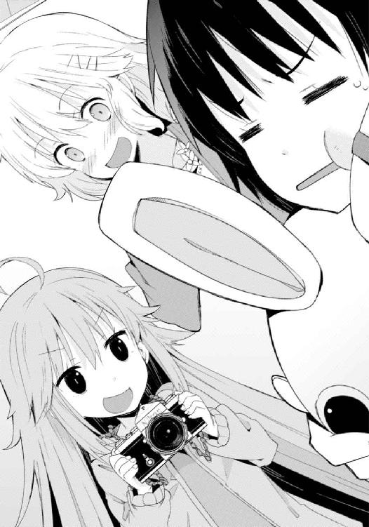
口々に勝手なことを言う弟と妹にすっかり辟易した様子の響。
ドアの前に突っ立っていた芽々子の存在に気付き、視線を向ける。
「なんだ、芽々子ちゃんも僕を笑いに来たのか？」
疲れ果てたようなその顔を、芽々子は一瞬だけ見入った。
けれどすぐに、胸の奥から込み上げてきた笑みを抑えきれなくなる。
「ふふ......あは......あはっ！」
自分が可笑しがっているのが少し不思議だった。
どうしてだろう、と考える。
響の様子が滑稽だったからではない。確かにまあ可愛い感じではあるけれど、それだけが原因ではここまで笑ったりしない。
たぶん自分は、ばかばかしくなったのだ。
ぬいぐるみを抱いて眉をしかめている響。
響に大受けしている稜。
ふたりの写真を撮っている耶衣。
そこに、芽々子の懸念していたものは欠片もない。
響がぬいぐるみで寂しさを紛らわしているのではなどという懸念は、勘違いも甚だしかった。これが『いつか解決すべきもの』だとはとても思えなかった。
何故なら響は──響たちは、ぬいぐるみで一緒に遊んでいるだけなのだから。
「あ、そうだ、芽々子ちゃん」
けらけらと笑っていると、どこか申し訳なさそうな響の顔。
きょとんとした芽々子に、兄は少し笑って言った。
「大丈夫だよ。芽々子ちゃんが心配しているようなもんじゃないから、これは」
「......ひぃお兄ちゃん」
その言葉と視線に、はっとした。
わかってくれていたのだ、この人も。
うちへ来てまだ日が浅いのに。
芽々子を妹にしてくれてまだそんなに経っていないのに。
私のことをちゃんと、わかってくれたんだ──。
「ほら稜くん、次はきみの番だ」
ぬいぐるみをそのまま、稜へと放る響。
「おわ！」
そのまま床へと寝転がりつつ、ウサギを受け止める稜。
「案外重いなこれ！ 耶衣も抱く？」
「......はいです」
構えていたカメラを脇へ遣り、稜のもとへと行く耶衣。
そんなきょうだいたちに嬉しくなって、芽々子は満面の笑みで叫んだ。
「じゃあ、ひぃお兄ちゃんは私がもらうっ！」
「え......って、うわっ！」
響に背中から飛びついて覆い被さりながら、スリーパーホールド。
じゃれ合う稜と耶衣に負けじと、思いきりはしゃぎまわり始める。
※
──よかった、と思った。
新しく来た兄は、ちゃんと笑ってくれている。
芽々子が心配するまでもなく、楽しんでくれている。それは素敵なことだ。
でも、もっと素敵なことになる。
何故なら、これからなのだから。
自分は響のことをどんどん大好きになっていくはずだ。
自分だけではない。高遠も、礼兎も、リリィも、稜も、耶衣も。
なにせみんな、響にこの家に来てよかったと思ってもらえるよう頑張っているし、響だって同じように、この家に受け入れてもらえるよう頑張っているのだから。家族全員が、誰のためでもない他の家族のために力を注いでいるのだから。
笑い合って、遊んで、たまに喧嘩して、怒鳴り合って、すぐに仲直りして。
そうしてみんなで一緒に暮らす。
寂しくはない。寂しいことになんてならない。
寂しい思いもしないし、させない。
「ねえ、ひぃお兄ちゃん！」
自分を引きはがそうともがいている兄に、言った。
「まだまだだからねっ！ 今でも充分楽しいけど......まだまだ楽しくなるから。歌にもあるみたいに、だんだんよくなる。どんどんよくなるよ！」
『ゲッティング・ベター』。
まるで自分に言い聞かせるように。
願うように、芽々子は笑った。
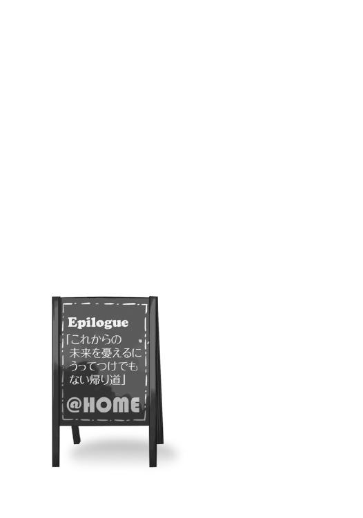
そろそろ六月に入ろうかというこの時期に雨が降ると、梅雨という言葉が頭に浮かぶ。
けれど僕の記憶が確かであればまだこの地域まで梅雨前線は上ってきていないはずで、だったらここ数日続くしとしとじめじめした厭らしい天気はいったいなんなのだと愚痴のひとつも零したくなるのだけど、そんな僕の憂鬱などリリィ姉さんには関係ないらしい。
「私は雨が好きだわ」
彼女は、そんなことを唐突に言った。
しかも、雨の中を歩きながら、である。
それは学校の帰り道だった。
「どうしてですか？」
問うたのは僕のクラスメイトにして鏡山高校生徒会におけるリリィ姉さんの後輩、篠森小梅さん。つまり傘を差して並んで歩くのは三人で、これは割と珍しい組み合わせだった。
まあ経緯としては単純で、僕が放課後、リリィ姉さんに生徒会の仕事を無理矢理手伝わされたというだけ。で、一緒に作業したリリィ姉さんと僕、それから小梅さんが帰路を同じくしている。ちなみに彼女の家も鏡山住宅街の一画にあり、途中まで帰り道が一緒だ。
「あんたは嫌いなの？ 小梅」
問い返した姉さんに、
「あ、はいっ」
小梅さんは姿勢をただした。
歩きながら、しかも傘を差しながら緊張すると大変だなと、ぽやぽや歩きつつ僕は思う。
「だってじめじめしますし、雨で靴や服が濡れると厭ですし。眼鏡が曇ったりとかもしますし。あと、私、癖っ毛なので梅雨の時期は毎朝大変で」
まあ一般的な反応だろう。
「そういえばそうね」
彼女の長く美しいストレートヘアはたぶん湿気などには負けたことがなく、それ故に小梅さんの苦労を『ああウラジオストクでは港が凍るんですってね』みたいな他人事で片付ける。
「芽々子もこの時期は毎朝、実験失敗博士になってるわ」
おまけに身内の恥も暴露するという冷徹さである。
いや、確かに芽々子ちゃんの髪はふわふわで、いかにも湿度に寝癖が比例しそうだけど。
「芽々子さんって、妹さんですよね、一年二組の」
「もうすぐ誕生日なのよ、あの子。自分が誕生した時期に毎朝実験が失敗するなんてなんの因果かしらね。前世で薬品の調合を間違えてフラスコを爆発させたのかしら」
「......姉さんは可愛い妹の前世を貶めるのが趣味なのか」
たまらずつっこんだ。
「失礼ね。前世が人間というのは幸せなことなのよ。あんたは虫や魚かもしれないじゃない」
「フラスコを爆発させた博士より虫とか魚の方がいいかもしれないじゃないか」
「あら、だったらあんたは芽々子よりも幸せな前世を送ったというの？ それは聞き捨てならないわね。妹の不幸を踏み台に笑うなんて、兄として許されるものではないわ」
「その理屈だと、高遠兄さんが大変なことになるんだけど......」
「あれの前世は粘菌よ。南方熊楠のマッチ箱にでも飼われていたんじゃないの？」
「陛下に拝謁してるかもしれないじゃないか！ すげえなおい！」
いや、というか、
「......そもそも姉さん、前世とかそういうの、信じてる訳」
「いえ信じてないわねまったく、これっぽっちも」
「ああ、そう......」
凄まじい切って捨て具合である。
だいたいよく考えると、前世の話に入ってからこっち、客観的に見て罵倒しかしていない。これでは僕が『嫌われている』と誤解したのも無理はないと思うのだけどどうだろう。
「ところで、雨の話だったかしら？」
顔をしかめた僕を放置し、リリィ姉さんは小梅さんの質問を思い出したようだ。
「あ、はい」
どうも僕らの会話に呆気に取られていたらしく、小梅さんは我に返ったように言う。
「その......雨が好きなのって、珍しいなと思って」
「正直なところ、特にないわね。理由は」
しかし返答はなんとも肩すかしだった。
「そ、そうですか......」
「強いて理由を挙げるとするなら、晴れが嫌いだからというのが適当なのかしら。だって太陽光が眩しくて上を見ることができないでしょう？」
またぞろ訳のわからないことを。
これでは小梅さんが不憫なので、揚げ足を取ってやることにする。
「雨だって水滴が目に入るじゃないか」
「あら、水滴は涙を誤魔化せるわ」
「僕はリリィ姉さんが泣いてるなんて殊勝な光景を見たことがないけどね」
「だったらちゃんと誤魔化せてるじゃない。私は雨の日だけに上を向いて泣くのよ」
──それ、かっこいいな。
ちょっとだけ感心してしまった。
「いや、なんか美しいこと言った感じになってるけど......傘を差してると水滴はかからないんじゃないかな？ その淡い花柄がいい感じの傘、家に帰り着くまで僕が預かろうか？」
「あんたもなかなか言うわね、響。でも残念ながらこれは私のお気に入りなのよ。取り上げられたら悲しくて泣いてしまうわ」
「いいじゃないか。雨が降ってるから誤魔化せる」
「あらあら、これは打つ手がなくなったわ。悔しいけど私の負けね」
リリィ姉さんが肩を竦め、憮然とした調子で鼻を鳴らす。
と。
「......ふふ」
僕とリリィ姉さんの話が始まってから少し後ろに下がっていた小梅さんが、くすくすと笑い始めた。雨音に混じって、さも楽しそうに。
「なんだよ小梅さん、なにか......」
「なにか、じゃないわよ？ 響くん」
振り返った僕へ、彼女は口許を押さえつつ意味ありげな視線を送った。
「さすが先輩の弟さんだな、と思ってね」
「......は？」
「言い換えましょうか？ さすが倉須家、って意味よ」
「い、いや、ちょっと待ってくれる？」
思いがけないところからの思いがけない攻撃に、口ごもってしまう。
「僕はまだあの家に来て二カ月とちょっとなんだけど......」
小梅さんはそれでも不敵な笑みをやめない。
眉をしかめる僕と、それから目をぱちくりさせるリリィ姉さんを順番に見、
「あのね、いいこと教えてあげましょうか？ 倉須先輩......生徒会長に対して、言い返すだけならともかく、言い負かすなんて芸当、うちの学校じゃ誰もできやしないのよ」
楽しそうに、同時にどこか羨ましげに。
「生徒はもちろん、先生たちだって無理なの。それを響くんはやってるのよ」
「いや、それは......」
単に僕が遠慮するのをやめただけであって、僕自身がどうこうでは。
「私も驚いてるのよ、正直なところ」
リリィ姉さんが、何故か得意げに口を挟んできた。
「新しくできた弟がここまでやるなんてね。立場がないってのはこのことだわ。少し修行の旅にでも出ようかしら。山ごもりして熊かなにか倒せば強くなれるかも」
「これ以上強くなられると僕が困る。というかみんなが困る」
倒せば、って、今の状態で倒せるとでも思っているのだろうか。......思っているかもしれない。この人に睨まれれば熊も逃げてしまうだろう。
「まあ、張り合いがあって嬉しいわ」
唐突にリリィ姉さんは微笑した。
僕へ向かって、真っ直ぐに。雨の中に咲く睡蓮にも似た、淡い笑み。
僕は思わず足を止めてしまう。
小声で、呟いた。
「......卑怯じゃないか」
そんな顔をされたら、小梅さんの揶揄も褒め言葉に思えてしまう。同級生に倉須家の一員として認識されるなんて、本来なら『変人扱いしないでくれ』と言いたくなるところなのに。
「なにか言った？」
問い返してきたリリィ姉さんに、僕はとぼける。
「いいや」
「そう」
彼女はなにも尋いてこない。そこで会話は止まった。
背後から小梅さんがまた前へ出てきて、僕と入れ替わりにリリィ姉さんの隣へ並ぶ。そうして再び、今度は生徒会絡みの話が開始され──僕は彼女たちの話を適当に聞き流しつつ、肩にかけたバッグが雨で濡れやしないかと気にし始める。
しかし本当、雨が好きだなんてどうかしているんじゃないか。
小梅さんじゃないけど、じめじめするわ濡れるわでろくなものではないのに。
そう文句を言いたかったけど、小梅さんとの会話に花が咲いているようなので邪魔するのはやめておく。まったく僕は気遣いのできるよくできた弟だ。まあ少なくとも、頓狂な会話の応酬をするよりは黙っている方が楽ではあるし。
※
そうこうしているうちにバス停へ着いたので、直近の到着を待って乗り込む。
小梅さんとは同じ住宅街といっても、ご近所というほどではない。彼女が使っている三つ前の停留所で僕らは先に降り、再び傘を差して帰路を歩み始めた。
倉須家までは残り徒歩十分ほど。正直、バス停からは微妙な位置にある家だ。
相変わらず雨はやむ気配がない。
朝から一日中降っていたので仕方ないか。天気予報によれば明日もこの調子らしい。まあ、最近少し暑い日が続いていたので涼しくていいと言えるかもしれない。
リリィ姉さんと買い物に行った時は少し肌寒いくらいだったのだが、その数日後になって急に気温が上がった。明日はどうだろう。雨に加えて蒸し暑かったりしなければいいのだが。
そんなことを考えながら無言でしばらく歩いた。
リリィ姉さんとふたりきり。
二カ月前の僕ならば、沈黙が耐えられなくなって妙なことを口走ってしまっていたかもしれない。だけど今は気にならない。それどころか、心地よくさえある。別に会話を交わさなくても気まずくなったりはしないのだ──家族だから。
僕の斜め前、二歩ほど先を歩いていた姉さんが、ふと立ち止まった。
「そういえば、響」
「......ん？」
ほとんど首だけで軽く振り返り、僕が返事をしたのを確認するとまた前を向いて歩き始め、
「三日、芽々子の誕生会をやるからね」
「あ、うん」
芽々子ちゃんの誕生日は五日後に迫っていた。
「でも、誕生会ってなにをするの？」
「別にたいしたことをする訳じゃないわ、平日だし。ただ、夜八時にはちゃんと家にいなさい。全員揃って夕食を摂るのが決まりよ」
「ってことは、食事が豪勢だったりするのかな？」
「どうかしら。毎年そういうのは意識してないわね。そこまで変わらないんじゃない？ ......まあ、そうめんとか鯖の味噌煮とか、そういう地味っぽいメニューにはならないだろうけど」
礼兎姉さんも多少は腕を振るうってことか。
「ケーキとかは？」
「出るわね、一応」
「なるほど。ま、僕も楽しみにしとくよ」
「そう、それは重畳だわ」
つまらなさそうに、つまり割といつも通りに、リリィ姉さんはひと呼吸した。
そして──。
そこから更に一分ほど歩いた後。
彼女の歩く速度がふと、やや遅くなった。
必然、僕は追い付き、肩を並べる。
どうしたのだろうと横顔を覗き込むと、
「ところで......」
彼女は無表情で前を見たまま、ぽつりと口を開いた。
「倉須の家のことなんだけど」
「ん？」
家がどうかしたのだろうか。
続きを待ったが、珍しいことにリリィ姉さんは数回なにかを言おうとして言い淀み、おまけに視線を右と上へ移ろわせ、それから大きめの呼吸をし、
ようやく、言葉を発した。
ただし、前後の繫がりがあまり感じられない内容のことを。
「なんだかんだであんたはやっぱりまだうちへ来て二カ月で、だから慣れてないこともあるだろうし、整理できてないことも多いと思うわ」
「あ、うん」
きょとんとしてしまったがひとまずは頷く。
「姉さんのお陰でだいぶ落ち着いたけど......まあ、確かにそうだね」
これはこの人に感謝すべきことだった。
あの日、怒鳴られて抱き締められ思いきり泣いたことで、気分はだいぶよくなった。
吹っ切れた、と言ってもいいかもしれない。
過去のことよりも今のこと、これからのことを考えられるようになった。もう戻ってこない過去の出来事で悲しむのではなく、未来に待っている楽しい出来事で笑えるようになった。
とはいえ当たり前ながら、完璧とはいかない。
ふとした拍子に父さんと母さんのことを思い出すと泣きそうになる。前の学校の友人からたまに来るメールを見ると、もしあのままあの街にいたらどんな暮らしをしていただろうなどと考えてしまい切なくなる。家に帰り着いて玄関を潜った瞬間なんかにまだ違和感があって、申し訳ないような寂しいような気分になったりする。
ただ、それは仕方のないことだ。
「まあ、どのみちスイッチみたいに切り替えられる訳はないんだし。徐々にでも進んでいくしかないよ。せめて来年の春には、笑って墓参りできるくらいになれたらいいな、と思う」
新しい家族のことを報告するのだ。
兄さんがひとり、姉さんがふたり、妹がふたり、弟だか妹だかわからないのがひとり。
全員が全員ちょっと変わっている、僕の新しい家族のことを。
僕を、家族にしてくれた人たちのことを──。
「そう。あんたは強いのね」
リリィ姉さんはいつの間にか横を向いて僕の顔を見ていて、
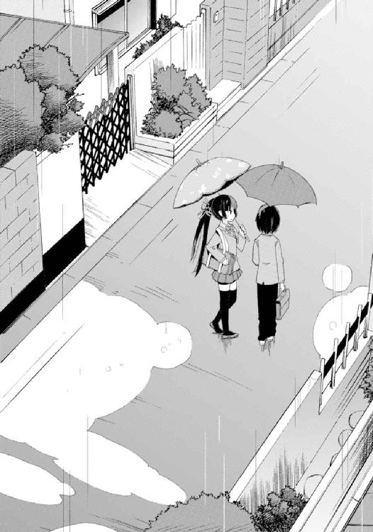
「......強いのはいいことだわ。とてもいいことよ」
笑った。
「どうしたの？」
「いいえ、なんでもないわ」
傘の柄を軽く手で弄びつつ、
「言葉通りよ。なんでもない。今のところは、ね。そんなに急いでも仕方ないもの。時間は急いだってのんびりしていたって、止まったり戻ったりする訳ではないからね」
それは、いかにも意味ありげな科白だった。
なにかを話そうとして話さなかったのは明らかで、つっこんで尋いてみたくもある。でもやっぱり、しつこく追及しても仕方ない。今話さなかったということは、今話さなくてもいいことだからだろう。時期が来れば話してくれるに違いない。
だから、
「そうだね」
とだけ言い、放置しておくことにする。
僕はその程度にこの人を信頼しているし、この人もきっと、同じ気持ちでいてくれるだろう。たぶん姉弟っていうのは──そういうものなんじゃないかと思う。
※
家が見えてきた。
まだ郷愁を覚えるほどではないにせよ、徐々に馴染んできた我が家。
以前の園村家よりも少し古く、少しどころではなく騒がしい倉須家。
「あ、りぃお姉ちゃん、ひぃお兄ちゃん！ おかえりー」
僕らの姿を自室から見つけた芽々子ちゃんが、二階の窓を開けてぶんぶん手を振っている。雨だというのにお構いなしだ。というか、近所迷惑だ。
「ただいま」
傘を振り返すがもう見ていない。窓がぴしゃりと閉められ──たぶん階下へ降りたのだろう。まったく騒がしい子だ。僕らのために温かい飲み物でも用意してくれると助かるんだけど、用意してくれなくても別に構わないさ。
あとがき
初めましての方は初めまして。そうでない方はお久しぶりだったりそうでなかったりだと思いますがともあれどうもこんにちは。藤原祐と申します。
『＠ＨＯＭＥ』をお送りしました。
本書は今年（二〇一〇年）六月から十月にわたって『電撃文庫ＭＡＧＡＺＩＮＥ』誌に短期集中連載されたものを加筆訂正、並びに書き下ろしを加えたものになります。連載時から文庫化を待ってくださっていた方、どうもお待たせしました。そんなんよく知らんけどなんか買ってみたという方、雑誌掲載分はすべてもれなく本書に収録されており文庫から入っても特に差し障りがある訳ではありませんので安心してお読みくださいませ。
どちらにせよ、楽しんで頂ければ幸いでございます。
本書は、家族のお話です。
言葉だけだと非常に漠然としていますが内容も割とそんな感じでして、ひと組の──親もなければ血も繫がっていない七人きょうだいという変わった構成の──家族が、笑ったり泣いたり怒ったり楽しんだりしつつ日常を過ごし、いろんな事件が巻き起こったり巻き起こらなかったりしつつ日々を暮らす、そんな物語です。
ナンバリングはありませんがシリーズの第一巻となり、今回は次女のリリィを中心にしたエピソードを描きました。次巻は別のきょうだいにスポットが当たる予定。
ところで実はこの「家族もの」、成立に際して少しばかり妙なエピソードがあります。
あれは昨年末だったでしょうか。
古橋秀之さん、三雲岳斗さん、築地俊彦さん、それから僕の四人が集まって、自分たちの過ごした一年を振り返りつつ来年の展望を話し合っておりました。そういう真面目なことも時々やるのです。いや、真面目といっても内容はといえば今年出た小説や漫画やアニメやゲームのどれが面白かったかとかどのキャラが可愛かったかとかそんなことばかりなのですが仕方ない仕事だもの。遊んでいた訳ではありません。
で、まあとにかく、その最中のことです。
みんなは来年どんなシリーズを用意しているの？ という話題になりました。
すると、そこにいた四人中実に三人、具体的には三雲さん、築地さん、そして僕が言いました。「来年は家族ものをやろうと思うんですよ」と。
同時に。一斉に。示し合わせたかのように。なんというネタかぶり。
唐突に起きたシンクロニシティを目の当たりにした古橋さんは苦笑なさっておられましたが、恐らく「なんでこいつら同じこと言ってんだ」と「俺もシンクロ仲間に入れてくれ！」との中間みたいな気持ちだったのではないかと思います。たぶん。
僕も三雲さんも築地さんも、どういう思考回路を経てか「これからは家族ものが来る」的な結論に達し企画を練っていたようなのですが、恐らく三人ともがこの「家族もの」で他のメンバーをあっと言わせてやろうと考えていたに違いなく、でも蓋を開けてみればみんなを別の意味であっと言わせちゃったというオチで──同じ電波を受信せずに済んだ古橋さんを含め、それぞれの発表する作品でお手並み拝見、みたいな感じになってしまいました。
ちなみに築地さんの家族ものについては、既にファミ通文庫さんより『ふぁみぷれっくす』というタイトルで発表されております。同じ家族ものといってもやはり全然違う感じになってまして、よろしければこちらも手に取ってみてくださいませ......といっても、もちろん僕の本の後で！ いくら先輩だといってもそこは遠慮する訳にはいかないのです。
まあ、裏話だったり家族ものという括りはともかくとして。
本質的には気軽に読める感じの、でも読んだ後で少しなにかが心に残るような、そんなお話にしたいと思っています。二巻以降は『電撃文庫ＭＡＧＡＺＩＮＥ』で連載した後に文庫化という形になるのかそれとも普通に一冊分を書き下ろして発表するのか未定なのですが、どちらにせよ売り上げの許す限りは続けていきたいと思っていますので、どうか何卒、応援のほどよろしくお願いします。
本書を刊行するにあたっては、様々な方にお世話になりました。
まずは素晴らしいイラストでキャラクターたちに生命を与えてくださった山根真人さん。ご多忙な中にも拘わらず、本当にどうもありがとうございます。
担当の佐藤さん。毎回毎回繰り返される入稿のチキンレースですが、今回は軽く崖をジャンプして海に落下しそうになったところをどうにか引っ張り上げてもらったという感じで、なんというか本当にすみませんでした......。そろそろ従来の土下座では謝罪に足りなくなってきたので、土下座を超えた新しい土下座を発明せねばならない感じですがそんなことしている暇があったら原稿を書けと言われること間違いなしなので原稿を頑張ります。
先述したお三方、古橋秀之さん、三雲岳斗さん、築地俊彦さんにもお世話になりました。というか現在進行形でお世話になっております。なんだか僕ひとりだけがお世話になりっぱなしな感もありますが、素晴らしい先輩に巡り会えた幸せをわざわざ手放すつもりはありませんのでどうかこれからもお世話してください。
それから、本書を刊行するにあたってご尽力頂きました、アスキー・メディアワークス各部署の方々。また校閲さんやデザイナーさんなどの関係者さま。実際に本を売ってくださる書店員の皆さま。そして最後にこの本が届く相手、買ってくれた読者の方々に。
本当にありがとうございました。
前ページでも触れた通り、『＠ＨＯＭＥ』の続きは『電撃文庫ＭＡＧＡＺＩＮＥ』に掲載するかもしくは文庫書き下ろし、いずれかの形でお届けしたく思います。まだはっきり時期が決まっている訳ではないので具体的にいつとは言えず、すみません。とはいえそんなに間を空けるつもりはないので、どうかしばしお待ちくださいませ。
ちなみに「藤原祐の次の本」としては、同時並行で進めている別シリーズ『煉獄姫』の二巻が先に出ます。割とシリアスなファンタジーもので『＠ＨＯＭＥ』とは毛色がけっこう違う作品なのですが、もし興味がありましたらそちらも是非。
藤原 祐
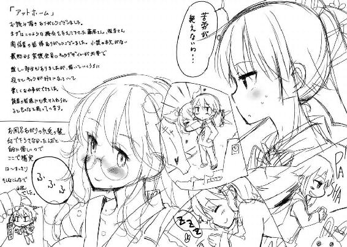
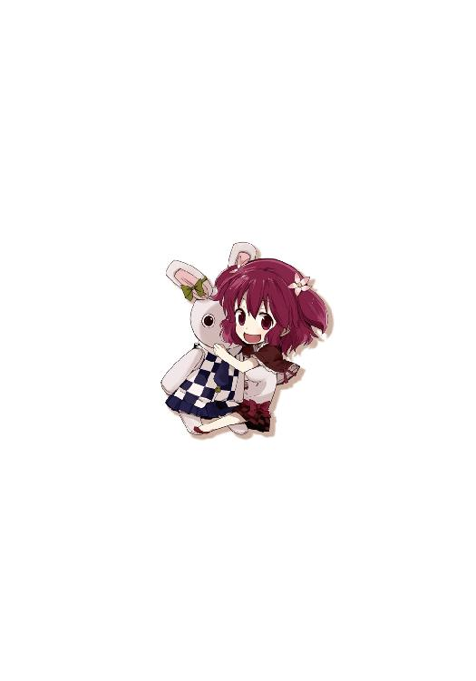
藤原祐
この夏は異様に暑かったかと思ったらある日突然気温が下がって涼しくなり秋が来やがりまして、この調子だと秋から冬に変わる際にはいきなり雪が積もり始めるんじゃないかと今から怯えたりもしているのですがそれはそれとして写真は犬。
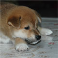
イラスト／山根真人
イラストレータ兼少しだけ漫画家。日々ゆったり過ごしたいと思ってますが、真逆の生活を満喫中。本作品に関わったことでカメラが欲しいと思うようになりました。
 電撃文庫
電撃文庫
@HOME
我が家の姉は暴君です。
藤原 祐
発 行 2015年4月9日
発行者 塚田正晃
発行所 株式会社KADOKAWA
〒102-8177 東京都千代田区富士見2-13-3
03-3238-8745（営業）
http://www.kadokawa.co.jp/
プロデュース アスキー・メディアワークス
〒102-8584 東京都千代田区富士見1-8-19
03-5216-8399（編集）
http://dengekibunko.dengeki.com/
本書（電子版）に掲載されているコンテンツ（ソフトウェア／プログラム／データ／情報を含む）の著作権およびその他の権利は、すべて株式会社KADOKAWAおよび正当な権利を有する第三者に帰属しています。
法律の定めがある場合または権利者の明示的な承諾がある場合を除き、これらのコンテンツを複製・転載、改変・編集、翻案・翻訳、放送・出版、公衆送信（送信可能化を含む）・再配信、販売・頒布、貸与等に使用することはできません。
(C) 2010 YU FUJIWARA
※2010年12月27日発行の電撃文庫『@HOME 我が家の姉は暴君です。』2版に基づき制作